<!doctype html>
<html lang="ja"><head><meta charset="utf-8">
<meta name="viewport" content="width=device-width,initial-scale=1">
<link rel="icon" href="/favicon.svg" type="image/svg+xml">
<link rel="icon" href="/favicon.ico" sizes="32x32">
<title>2026年JAF国内カート競技車両規則｜JAF モータースポーツ諸規則ビューア（非公式）</title>
<meta name="description" content="2026年JAF国内カート競技車両規則（2026年 国内カート競技規則一覧／JAF国内カート競技車両規則）の全文。第1章 カート競技車両の分類と定義／第1条 カート競技車両の分類／第2条 定 義／第2章 一般規定／第3条 総 則／第4条 カ ー ト／第5条 シャシー／第6条 寸法と重量／第7条 バ…">
<link rel="canonical" href="https://jp.motorsports-regulations.org/doc/2026_jaf_kart_kokunai_tech_reg_20260101-02-ca0fb3">
<meta property="og:url" content="https://jp.motorsports-regulations.org/doc/2026_jaf_kart_kokunai_tech_reg_20260101-02-ca0fb3">
<meta property="og:type" content="article">
<meta property="og:site_name" content="JAF モータースポーツ諸規則ビューア（非公式）">
<meta property="og:locale" content="ja_JP">
<meta property="og:title" content="2026年JAF国内カート競技車両規則">
<meta property="og:description" content="2026年JAF国内カート競技車両規則（2026年 国内カート競技規則一覧／JAF国内カート競技車両規則）の全文。第1章 カート競技車両の分類と定義／第1条 カート競技車両の分類／第2条 定 義／第2章 一般規定／第3条 総 則／第4条 カ ー ト／第5条 シャシー／第6条 寸法と重量／第7条 バ…">
<style>
:root{--fg:#111827;--muted:#6b7280;--line:#e5e7eb;--accent:#1d4ed8;--bg:#fff}
@media (prefers-color-scheme:dark){:root{--fg:#e5e7eb;--muted:#9ca3af;--line:#374151;--accent:#93c5fd;--bg:#0f172a}}
body{margin:0;background:var(--bg);color:var(--fg);font-family:"Noto Sans JP",system-ui,sans-serif;line-height:1.9}
.doc{max-width:46rem;margin:0 auto;padding:2rem 1.25rem 6rem}
h1{font-size:1.6rem;line-height:1.5;margin:0 0 .25rem}
.meta{color:var(--muted);font-size:.8rem;margin-bottom:2rem}
h2,h3,h4,h5{line-height:1.6;margin:2.2em 0 .6em;scroll-margin-top:4rem}
h2{font-size:1.25rem;border-left:4px solid var(--accent);padding-left:.6rem}
h3{font-size:1.1rem}
h4{font-size:1rem;color:var(--accent)}
p{margin:0 0 1em;text-align:justify}
figure{margin:1.8em 0;padding:.75rem;border:1px solid var(--line);border-radius:.5rem}
figure img{display:block;width:100%;height:auto}
figcaption{margin-top:.5rem;font-size:.85rem;color:var(--muted);text-align:center}
.tablewrap{overflow-x:auto;margin:1.5em 0}
table{border-collapse:collapse;font-size:.9rem;min-width:100%}
th,td{border:1px solid var(--line);padding:.35em .6em;vertical-align:top}
.pagemark{float:right;font-size:.7rem;color:var(--muted);user-select:none}
nav.toc{border:1px solid var(--line);border-radius:.5rem;padding:1rem 1.25rem;margin-bottom:2.5rem;font-size:.9rem}
nav.toc ol{list-style:none;margin:0;padding:0}
nav.toc a{color:inherit;text-decoration:none}
nav.toc a:hover{color:var(--accent);text-decoration:underline}
nav.toc .l1{padding-left:0;font-weight:700}
nav.toc .l2{padding-left:1rem}
nav.toc .l3{padding-left:2rem}
nav.toc .l4{padding-left:3rem;color:var(--muted)}
.warn{background:#fef3c7;color:#78350f;border-radius:.4rem;padding:.6rem .9rem;font-size:.85rem;margin-bottom:1.5rem}
.src{border:1px solid var(--line);border-left:3px solid var(--accent);border-radius:.4rem;padding:.6rem .9rem;font-size:.8rem;line-height:1.8;color:var(--muted);margin:0 0 2rem}
.src strong{color:var(--fg)}
.docfoot{margin-top:4rem;padding-top:1rem;border-top:1px solid var(--line);font-size:.78rem;line-height:1.9;color:var(--muted)}
</style>
</head><body><article class="doc">
<h1>2026年JAF国内カート競技車両規則</h1>
<p class="meta">2026年 国内カート競技規則一覧 ／ JAF国内カート競技車両規則 ／ アップロード日 2026-03-23 ／ 54ページ ／ <a href="https://motorsports.jaf.or.jp/-/media/1/3375/3379/3400/3462/3465/3490/2026_jaf_kart_kokunai_tech_reg_20260101-02.pdf" rel="nofollow">JAF 原本 PDF</a></p>
<p class="src"><strong>JAF の公式サイトではありません。</strong>JAF が公開する PDF を自動変換した非公式の検索用アーカイブです。記載内容は必ず <a href="https://motorsports.jaf.or.jp/-/media/1/3375/3379/3400/3462/3465/3490/2026_jaf_kart_kokunai_tech_reg_20260101-02.pdf" rel="nofollow">JAF の原本 PDF</a> で出典をご確認ください。 <a href="https://jp.motorsports-regulations.org/doc/2026_jaf_kart_kokunai_tech_reg_20260101-02-ca0fb3">検索と AI 質問つきのビューアで開く</a></p>
<nav class="toc"><ol>
<li class="l1"><a href="#6年-国内カート競技車両規則">２０２6年ＪＡＦ国内カート競技車両規則</a></li>
<li class="l2"><a href="#6年-国内カート競技車両規則-2">２０２6年ＪＡＦ国内カート競技車両規則</a></li>
<li class="l2"><a href="#第-章-カート競技車両の分類と定義">第１章　カート競技車両の分類と定義</a></li>
<li class="l4"><a href="#第-条-カート競技車両の分類">第１条　カート競技車両の分類</a></li>
<li class="l4"><a href="#カート競技車両のクラス区分">１．カート競技車両のクラス区分</a></li>
<li class="l4"><a href="#第-条-定-義">第２条　定　　　義</a></li>
<li class="l4"><a href="#総則">１．総則</a></li>
<li class="l4"><a href="#シャシー">２．シャシー</a></li>
<li class="l4"><a href="#エンジン">３．エンジン</a></li>
<li class="l4"><a href="#ラジエター">４．ラジエター</a></li>
<li class="l4"><a href="#燃料タンク">５．燃料タンク</a></li>
<li class="l4"><a href="#ホイール">６．ホイール</a></li>
<li class="l4"><a href="#モーター-電気モーター">７．モーター（電気モーター）</a></li>
<li class="l4"><a href="#コントローラー">８．コントローラー</a></li>
<li class="l4"><a href="#バッテリー">９．バッテリー</a></li>
<li class="l2"><a href="#第-章-一般規定">第２章　一般規定</a></li>
<li class="l4"><a href="#第-条-総-則">第３条　総　　　則</a></li>
<li class="l4"><a href="#適用">２．適用</a></li>
<li class="l4"><a href="#改造">４．改造</a></li>
<li class="l4"><a href="#材料-部品の追加">５．材料、部品の追加</a></li>
<li class="l4"><a href="#第-条-カ-ー-ト">第４条　カ　ー　ト</a></li>
<li class="l4"><a href="#一般要件">１．一般要件</a></li>
<li class="l4"><a href="#特別要件">２．特別要件</a></li>
<li class="l4"><a href="#第-条-シャシー">第５条　シャシー</a></li>
<li class="l4"><a href="#シャシー-2">１．シャシー</a></li>
<li class="l4"><a href="#シャシーフレームの主要部品">２．シャシーフレームの主要部品</a></li>
<li class="l4"><a href="#シャシー補助部品">３．シャシー補助部品</a></li>
<li class="l4"><a href="#第-条-寸法と重量">第６条　寸法と重量</a></li>
<li class="l4"><a href="#技術仕様">１．技術仕様</a></li>
<li class="l4"><a href="#重量">２．重量</a></li>
<li class="l4"><a href="#第-条-バンパー">第７条　バンパー</a></li>
<li class="l4"><a href="#フロントバンパー-Superkartを除く">１．フロントバンパー（Superkartを除く）</a></li>
<li class="l4"><a href="#Superkartのフロントバンパー">２．Superkartのフロントバンパー</a></li>
<li class="l4"><a href="#リアバンパー-Superkartを除く">３．リアバンパー（Superkartを除く）</a></li>
<li class="l4"><a href="#Superkartのリアバンパー">４．Superkartのリアバンパー</a></li>
<li class="l4"><a href="#リアプロテクション">５．リアプロテクション</a></li>
<li class="l4"><a href="#サイドバンパー">６．サイドバンパー</a></li>
<li class="l4"><a href="#第-条-フロアトレイ">第８条　フロアトレイ</a></li>
<li class="l4"><a href="#第-条-ボディワーク">第９条　ボディワーク</a></li>
<li class="l4"><a href="#ボディワーク-Superkartを除く">１．ボディワーク（Superkartを除く）</a></li>
<li class="l4"><a href="#Superkartのボディワーク">２．Superkartのボディワーク</a></li>
<li class="l4"><a href="#第-条-トランスミッション">第１０条　トランスミッション</a></li>
<li class="l4"><a href="#第-条-リアアクスル">第１１条　リアアクスル</a></li>
<li class="l4"><a href="#第-条-チェーン-電動ベルトガード">第１２条　チェーン／電動ベルトガード</a></li>
<li class="l4"><a href="#第-条-ガ-ー-ド">第１３条　ガ　ー　ド</a></li>
<li class="l4"><a href="#第-条-サスペンション">第１４条　サスペンション</a></li>
<li class="l4"><a href="#第-条-ブレーキ">第１５条　ブレーキ</a></li>
<li class="l4"><a href="#第-条-ステアリング">第１６条　ステアリング</a></li>
<li class="l4"><a href="#第-条-シ-ー-ト">第１７条　シ　ー　ト</a></li>
<li class="l4"><a href="#第-条-ペ-ダ-ル">第１８条　ペ　ダ　ル</a></li>
<li class="l4"><a href="#第-条-アクセルレーター">第１９条　アクセルレーター</a></li>
<li class="l4"><a href="#第-条-エンジン">第２０条　エンジン</a></li>
<li class="l4"><a href="#概-要">１．概　　　要</a></li>
<li class="l4"><a href="#シリンダー">２．シリンダー</a></li>
<li class="l4"><a href="#水-冷">３．水　　　冷</a></li>
<li class="l4"><a href="#ウォーターポンプ">４．ウォーターポンプ</a></li>
<li class="l4"><a href="#キャブレター">５．キャブレター</a></li>
<li class="l4"><a href="#イグニッション">６．イグニッション</a></li>
<li class="l4"><a href="#第-条-吸気消音器">第２１条　吸気消音器</a></li>
<li class="l4"><a href="#第-条-排-気">第２２条　排　　　気</a></li>
<li class="l4"><a href="#第-条-音量規制">第２３条　音量規制</a></li>
<li class="l4"><a href="#音量測定">１．音量測定－１</a></li>
<li class="l2"><a href="#参考-PWL-SPL-ogr">参考　　PWL≒SPL+２０１ogr+８</a></li>
<li class="l4"><a href="#音量測定-2">２．音量測定－２</a></li>
<li class="l4"><a href="#第-条-燃料タンク">第２４条　燃料タンク</a></li>
<li class="l4"><a href="#第-条-燃-料">第２５条　燃　　　料</a></li>
<li class="l4"><a href="#燃料">１．燃料</a></li>
<li class="l4"><a href="#第-条-ホイールおよびタイヤ">第２６条　ホイールおよびタイヤ</a></li>
<li class="l4"><a href="#ホイールおよびタイヤ">１．ホイールおよびタイヤ</a></li>
<li class="l4"><a href="#ビードによる固定">２．ビードによる固定</a></li>
<li class="l4"><a href="#第-条-始動およびクラッチ">第２７条　始動およびクラッチ</a></li>
<li class="l4"><a href="#第-条-ナンバープレート">第２８条　ナンバープレート</a></li>
<li class="l4"><a href="#1-2-3-4-5-6-7-8-9-0-参考書体">1．2．3．4．5．6．7．8．9．0．（参考書体）</a></li>
<li class="l4"><a href="#第-条-公-認">第２９条　公　　　認</a></li>
<li class="l4"><a href="#公認">１．公認</a></li>
<li class="l4"><a href="#公認の追加-変更">２．公認の追加、変更</a></li>
<li class="l4"><a href="#販売">３．販売</a></li>
<li class="l4"><a href="#許容公差">４．許容公差</a></li>
<li class="l4"><a href="#改造-2">５．改造</a></li>
<li class="l4"><a href="#第-条-テレメトリー">第３０条　テレメトリー</a></li>
<li class="l4"><a href="#テレメトリー-データ交信装置">１．テレメトリー（データ交信装置）</a></li>
<li class="l4"><a href="#データロガー-データ蓄積装置">２．データロガー（データ蓄積装置）</a></li>
<li class="l4"><a href="#無線">３．無線</a></li>
<li class="l4"><a href="#第-条-リア赤色灯">第３１条　リア赤色灯</a></li>
<li class="l4"><a href="#第-条-バッテリー">第３２条　バッテリー</a></li>
<li class="l2"><a href="#第-章-カートと装備の安全性">第３章　カートと装備の安全性</a></li>
<li class="l4"><a href="#第-条-カートの安全性">第３３条　カートの安全性</a></li>
<li class="l2"><a href="#第-章-フォーミュラピストン特別規定">第４章　フォーミュラピストン特別規定</a></li>
<li class="l4"><a href="#第-条-フォーミュラピストンジュニアカデット">第３４条　フォーミュラピストンジュニアカデット　（ＦＰ－ＪｒＣａｄｅｔｓ）</a></li>
<li class="l4"><a href="#最大気筒容積-cc">２．最大気筒容積：１００cc。</a></li>
<li class="l4"><a href="#下記の制限のあるピストンポートエンジン">４．下記の制限のあるピストンポートエンジン。</a></li>
<li class="l4"><a href="#排気管はメーカー純正とし-エンジン-基につき-個とする">５．排気管はメーカー純正とし、エンジン１基につき１個とする。</a></li>
<li class="l4"><a href="#公認-登録-の吸気消音器が義務付">６．ＣＩＫ－ＦＩＡ公認（登録）の吸気消音器が義務付</a></li>
<li class="l4"><a href="#エンジンの改造は認められない">８．エンジンの改造は認められない。</a></li>
<li class="l4"><a href="#最低重量-kg">１０．最低重量：１１０kg。</a></li>
<li class="l4"><a href="#第-条-フォーミュラピストンジュニア">第３５条　フォーミュラピストンジュニア　（ＦＰ－Ｊｒ）</a></li>
<li class="l4"><a href="#最大気筒容積-cc-2">２．最大気筒容積：１００cc。</a></li>
<li class="l4"><a href="#下記の制限のあるピストンポートエンジン-2">４．下記の制限のあるピストンポートエンジン。</a></li>
<li class="l4"><a href="#排気管はメーカー純正とし-エンジン-基につき-個とする-2">５．排気管はメーカー純正とし、エンジン１基につき１個とする。</a></li>
<li class="l4"><a href="#エンジンの改造は認められない-2">８．エンジンの改造は認められない。</a></li>
<li class="l4"><a href="#最低重量-kg-2">１０．最低重量：１１０kg。</a></li>
<li class="l4"><a href="#第-条-フォーミュラピストン">第３６条　フォーミュラピストン－２　（ＦＰ－２）</a></li>
<li class="l4"><a href="#クラッチの取り付けは自由とする">４．クラッチの取り付けは自由とする。</a></li>
<li class="l4"><a href="#下記の制限のあるピストンポートエンジン-3">５．下記の制限のあるピストンポートエンジン。</a></li>
<li class="l4"><a href="#最低重量-kg-3">６．最低重量：１４５kg。</a></li>
<li class="l4"><a href="#エンジンの改造-第-章第-条-に従うこと">７．エンジンの改造：第２章第２９条５．に従うこと。</a></li>
<li class="l4"><a href="#第-条-フォーミュラピストン-2">第３７条　フォーミュラピストン－３　（ＦＰ－３）</a></li>
<li class="l4"><a href="#ワンメイクエンジンとする">１．ワンメイクエンジンとする。</a></li>
<li class="l4"><a href="#最低重量-kg-4">３．最低重量：１５０kg。</a></li>
<li class="l4"><a href="#エンジンの改造-改造は認められない">４．エンジンの改造：改造は認められない。</a></li>
<li class="l2"><a href="#第-章-フォーミュラ-特別規定">第５章　フォーミュラＣ特別規定</a></li>
<li class="l4"><a href="#第-条-フォーミュラ">第３８条　フォーミュラＣ－２　（ＦＣ－２）</a></li>
<li class="l4"><a href="#エンジン-2">１．エンジン：</a></li>
<li class="l4"><a href="#キャッチタンク">２．キャッチタンク：</a></li>
<li class="l4"><a href="#サイドボックス">３．サイドボックス：</a></li>
<li class="l4"><a href="#フロントフェアリング">４．フロントフェアリング：</a></li>
<li class="l4"><a href="#リアバンパー">５．リアバンパー：</a></li>
<li class="l4"><a href="#アンダーパネル-ステー">６．アンダーパネル、ステー：</a></li>
<li class="l4"><a href="#バックミラー">７．バックミラー：</a></li>
<li class="l4"><a href="#消音器">８．消音器：</a></li>
<li class="l4"><a href="#シャシー-3">９．シャシー：</a></li>
<li class="l4"><a href="#タイヤ">１０．タイヤ：</a></li>
<li class="l4"><a href="#ブレーキ">１１．ブレーキ：</a></li>
<li class="l4"><a href="#最低重量-kg-5">１２．最低重量：１６５kg。</a></li>
<li class="l4"><a href="#第-条-フォーミュラ-2">第３９条　フォーミュラＣ　（ＦＣ）</a></li>
<li class="l4"><a href="#空冷または水冷式の単気筒エンジン">１．空冷または水冷式の単気筒エンジン。</a></li>
<li class="l4"><a href="#エンジンの改造-第-章第-条-に従うこと-2">２．エンジンの改造：第２章第２９条５．に従うこと。</a></li>
<li class="l2"><a href="#第-章-フォーミュラスーパー特別規定">第６章　フォーミュラスーパー特別規定</a></li>
<li class="l4"><a href="#第-条-フォーミュラスーパー">第４０条　フォーミュラスーパーＭｉｎｉ　（ＦＳ－Ｍｉｎｉ）</a></li>
<li class="l4"><a href="#第-条-フォーミュラスーパー-2">第４１条　フォーミュラスーパー１００（ＦＳ－１００）</a></li>
<li class="l4"><a href="#第-条-フォーミュラスーパー-3">第４２条　フォーミュラスーパー１２５Ｍｉｎｉ　（ＦＳ－１２５Ｍｉｎｉ）</a></li>
<li class="l4"><a href="#第-条-フォーミュラスーパー-4">第４３条　フォーミュラスーパー１２５Ｊｕｎｉｏｒ　（ＦＳ－１２５Ｊｕｎｉｏｒ）</a></li>
<li class="l4"><a href="#第-条-フォーミュラスーパー-5">第４４条　フォーミュラスーパー１２５　（ＦＳ－１２５）</a></li>
<li class="l4"><a href="#第-条-フォーミュラスーパー-6">第４５条　フォーミュラスーパーＫＺ１２５　（ＦＳ－ＫＺ１２５）</a></li>
<li class="l4"><a href="#第-条-フォーミュラスーパー-7">第４６条　フォーミュラスーパーＫＺ１７５　（ＦＳ－ＫＺ１７５）</a></li>
<li class="l4"><a href="#第-条-フォーミュラスーパー-8">第４７条　フォーミュラスーパー４　（ＦＳ－４）</a></li>
<li class="l4"><a href="#重量-オーガナイザーの申請に基づき-で定める">３．重量：オーガナイザーの申請に基づき、ＪＡＦで定める。</a></li>
<li class="l2"><a href="#第-章-特別規定">第７章　ＯＫ特別規定</a></li>
<li class="l4"><a href="#第-条">第４８条　ＯＫ－Ｊｕｎｉｏｒ</a></li>
<li class="l4"><a href="#シリンダーの最大容積-cc">２．シリンダーの最大容積：１２５cc。</a></li>
<li class="l4"><a href="#過給は禁止する">６．過給は禁止する</a></li>
<li class="l4"><a href="#クラッチは認められない">１５．クラッチは認められない。</a></li>
<li class="l4"><a href="#スターターは認められない">１６．スターターは認められない。</a></li>
<li class="l4"><a href="#図No-23に合致した指定の単室-送-排気装置">１７．図No.23に合致した指定の単室（送）排気装置</a></li>
<li class="l4"><a href="#タイヤ-公認-インチ">１９．タイヤ：ＣＩＫ－ＦＩＡ公認５インチ。</a></li>
<li class="l4"><a href="#最低総重量-kg-ドライバー含む">２０．最低総重量：１４０kg（ドライバー含む）。</a></li>
<li class="l4"><a href="#カートの最低重量-kg-燃料を除く">２１．カートの最低重量：７０kg（燃料を除く）。</a></li>
<li class="l4"><a href="#第-条-OK">第４９条　OK</a></li>
<li class="l4"><a href="#過給は禁止する-2">５．過給は禁止する。</a></li>
<li class="l4"><a href="#クラッチは認められない-2">１４．クラッチは認められない。</a></li>
<li class="l4"><a href="#スターターは認められない-2">１５．スターターは認められない。</a></li>
<li class="l4"><a href="#図No-に合致し-公認された特定の単一型排気装置">１６．図No.２１に合致しＯＫ公認された特定の単一型排気装置</a></li>
<li class="l4"><a href="#タイヤ-公認-インチ-2">１８．タイヤ：ＣＩＫ－ＦＩＡ公認５インチ。</a></li>
<li class="l4"><a href="#最低総重量-kg-ドライバー含む-2">１９．最低総重量：１５０kg（ドライバー含む）</a></li>
<li class="l4"><a href="#カートの最低重量-燃料を除く-kg">２０．カートの最低重量（燃料を除く）：７０kg</a></li>
<li class="l2"><a href="#第-章-特別規定-2">第８章　ＫＺ特別規定</a></li>
<li class="l4"><a href="#第-条-および">第５０条　ＫＺ２およびＫＺ</a></li>
<li class="l4"><a href="#最大気筒容積-cc-3">３．最大気筒容積：１２５cc</a></li>
<li class="l4"><a href="#において-手動あるいは電子機械式ギアボックス制御">８．ＫＺにおいて：手動あるいは電子機械式ギアボックス制御。</a></li>
<li class="l4"><a href="#タイヤ-インチ">１７．タイヤ：５インチ</a></li>
<li class="l4"><a href="#最小重量">１８．最小重量：</a></li>
<li class="l2"><a href="#第9章-SuperKart特別規定">第9章　SuperKart特別規定</a></li>
<li class="l4"><a href="#第-条-SuperKart">第５１条　SuperKart</a></li>
<li class="l4"><a href="#に公認された水冷エンジン">１．ＣＩＫ－ＦＩＡに公認された水冷エンジン。</a></li>
<li class="l4"><a href="#気筒数-最大">２．気筒数：最大２。</a></li>
<li class="l4"><a href="#気筒容積-最大-cc">３．気筒容積：最大２５０cc。</a></li>
<li class="l4"><a href="#ギヤボックス-公認書式に合致した最大-レシオ">６．ギヤボックス：公認書式に合致した最大６レシオ。</a></li>
<li class="l4"><a href="#タイヤ-公認された-インチタイヤ">７．タイヤ：公認された６インチタイヤ。</a></li>
<li class="l4"><a href="#最低重量">８．最低重量：</a></li>
<li class="l2"><a href="#第10章-Mini特別規定">第10章　Mini特別規定</a></li>
<li class="l4"><a href="#第-条-Mini特別規定">第５２条　Mini特別規定</a></li>
<li class="l4"><a href="#特別規定">１．Ｍｉｎｉ特別規定</a></li>
<li class="l2"><a href="#第-章-カート特別規定">第１１章　ＥＶカート特別規定</a></li>
<li class="l4"><a href="#第-条-カート">第５３条　ＥＶカート（ＥＶ－Ｍｉｎｉ、ＥＶ－Ｊｕｎｉｏｒ、ＥＶ）</a></li>
<li class="l4"><a href="#動力源">１．動力源</a></li>
<li class="l4"><a href="#シャシー-4">２．シャシー</a></li>
<li class="l4"><a href="#タイヤ-2">３．タイヤ</a></li>
<li class="l4"><a href="#電動モーター">４．電動モーター</a></li>
<li class="l4"><a href="#重量-2">５．重量</a></li>
<li class="l4"><a href="#安全規定">６．安全規定</a></li>
<li class="l4"><a href="#パワーウエイトレシオ数値-ドライバー重量含む">７．パワーウエイトレシオ数値（ドライバー重量含む）</a></li>
<li class="l2"><a href="#第-章-その他の車両-リブレ">第１２章　その他の車両（リブレ）</a></li>
<li class="l4"><a href="#第-条-その他の車両-リブレ-に関する規定">第５４条　「その他の車両（リブレ）」に関する規定</a></li>
<li class="l4"><a href="#第-条-輪車用エンジン搭載の禁止">第５５条　４輪車用エンジン搭載の禁止</a></li>
<li class="l4"><a href="#第-条-リブレ車両の使用">第５６条　リブレ車両の使用</a></li>
<li class="l4"><a href="#開催される競技会ごとにリブレ車両申請が必要となる">３．開催される競技会ごとにリブレ車両申請が必要となる。</a></li>
<li class="l2"><a href="#第-章-本規則の施行">第１３章　本規則の施行</a></li>
<li class="l4"><a href="#第-条-本規則の施行">第５７条　本規則の施行</a></li>
<li class="l3"><a href="#6年-国内カート競技規則細則・">２０２6年ＪＡＦ国内カート競技規則細則・</a></li>
<li class="l3"><a href="#指定カートタイヤについて">指定カートタイヤについて</a></li>
<li class="l4"><a href="#指定カートタイヤに要求される項目">１．指定カートタイヤに要求される項目</a></li>
<li class="l4"><a href="#指定タイヤの申請について">２．指定タイヤの申請について</a></li>
<li class="l4"><a href="#指定基準">３．指定基準</a></li>
<li class="l4"><a href="#タイヤの指定">４．タイヤの指定</a></li>
<li class="l4"><a href="#タイヤの指定期間">５．タイヤの指定期間</a></li>
<li class="l4"><a href="#再申請">６．再申請</a></li>
</ol></nav>
<h2 id="6年-国内カート競技車両規則"><span class="pagemark" id="p1">P.1</span>２０２6年ＪＡＦ国内カート競技車両規則</h2>
<p>１９９５年　７月　１日制　　  定１９９６年　１月　１日施　　  行１９９６年　７月１１日改　　  定１９９７年　１月　１日施　　  行１９９７年１０月２３日改　　  定１９９８年　１月　１日施　　  行１９９８年　７月２７日制　　  定１９９９年　１月　１日施　　  行１９９９年　７月２８日制　　  定２０００年　１月　１日施　　  行２０００年　８月　１日制　　  定２００１年　１月　１日施　　  行２００１年　８月　１日制　　  定２００２年　１月　１日施　　  行２００２年　７月３１日制　　  定２００３年　１月　１日施　　  行２００３年　７月２８日制　　  定２００４年　１月　１日施　　  行２００４年　８月　３日制　　  定２００５年　１月　１日施　　  行２００５年　８月　２日改　　  正２００６年　１月　１日施　　  行２００６年　８月　９日制　　  定２００７年　１月　１日施　　  行２００７年　８月　１日制　　  定２００８年　１月　１日施　　  行２００８年　７月３１日制　　  定２００９年　１月　１日施　　  行２００９年　７月３０日制　　  定２０１０年　１月　１日施　　  行２０１０年　７月２９日制　　  定</p>
<p>２０１１年　１月　１日施　　  行２０１１年　７月２８日制　　  定２０１２年　１月　１日施　　  行２０１２年　７月２６日制　　  定２０１３年　１月　１日施　　  行２０１３年　８月　１日制　　  定２０１４年　１月　１日施　　  行２０１４年　７月３１日制　　  定２０１５年　１月　１日施　　  行２０１５年　７月３０日制　　  定２０１６年　１月　１日施　　  行２０１６年　７月２８日制　　  定２０１７年　１月　１日施　　  行２０１７年　７月２８日制　　  定２０１８年　１月　１日施　　  行２０１８年　７月２５日制　　  定２０１９年　１月　１日施　　  行２０１９年１１月２８日制　　  定２０２０年　１月　１日施　　  行２０２１年　７月２８日制　　  定２０２２年　１月　１日施　　  行２０２２年　８月　２日制　　  定２０２３年　１月　１日施　　  行2023年11月22日制　　　　定2023年11月29日制　　　　定2024年　1月　1日施　　　　行2024年　7月26日制　　　　定2025年　1月　1日施　　　　行2025年　4月　1日改定施行2025年11月27日制　　　　定2026年　1月　1日施　　　　行</p>
<h3 id="6年-国内カート競技車両規則-2"><span class="pagemark" id="p2">P.2</span>２０２6年ＪＡＦ国内カート競技車両規則</h3>
<h3 id="第-章-カート競技車両の分類と定義">第１章　カート競技車両の分類と定義</h3>
<h5 id="第-条-カート競技車両の分類">第１条　カート競技車両の分類</h5>
<p>カート競技に使用する車両を次の通り分類する。</p>
<p>１）第１種競技車両：ＪＡＦ国内カート競技車両規則に定められる車両。</p>
<p>２）（リブレ）その他の車両：ＪＡＦ国内カート競技車両規則のどのグループにも属さない車両。</p>
<h5 id="カート競技車両のクラス区分">１．カート競技車両のクラス区分</h5>
<p>カートは、使用されるエンジンによって、次の８つのカテゴリーに区分される。</p>
<p>クラスＯＫ、ＫＺ、ＫＺ２、ＥＶは格式準国内以上の競技として行われなければならない。</p>
<p>変速機なしのエンジンについては、いかなる可変点火装置（徐々に早めたり遅らせたりする装置）も禁止される。変速機付きのエンジンについては、可変点火装置はＪＡＦおよびＣＩＫ－ＦＩＡに承認されるものとする。</p>
<div class="tablewrap"><table><tr><td></td><td>カテゴリー</td><td>ク ラ ス</td><td>排気量</td></tr><tr><td>１</td><td>ＦＰ</td><td>ＦＰ－ＪｒＣａｄｅｔｓ</td><td>１００cc</td></tr><tr><td></td><td></td><td>ＦＰ－Ｊｒ</td><td>１００cc</td></tr><tr><td></td><td></td><td>ＦＰ－２</td><td>１００cc</td></tr><tr><td></td><td></td><td>ＦＰ－３</td><td>１００cc</td></tr><tr><td>２</td><td>ＦＣ</td><td>ＦＣ－２</td><td>１２５cc</td></tr><tr><td></td><td></td><td>ＦＣ</td><td>１２５cc</td></tr><tr><td>３</td><td>ＦＳ</td><td>ＦＳ－Ｍｉｎｉ</td><td>60cc</td></tr><tr><td></td><td></td><td>ＦＳ－１００</td><td>１００cc</td></tr><tr><td></td><td></td><td>ＦＳ－１２５Ｍｉｎｉ</td><td>１２５cc</td></tr><tr><td></td><td></td><td>ＦＳ－１２５Ｊｕｎｉｏｒ</td><td>１２５cc</td></tr><tr><td></td><td></td><td>ＦＳ－１２５</td><td>１２５cc</td></tr><tr><td></td><td></td><td>ＦＳ－ＫＺ１２５</td><td>１２５cc</td></tr><tr><td></td><td></td><td>ＦＳ－ＫＺ１７５</td><td>１７５cc</td></tr><tr><td></td><td></td><td>ＦＳ－４</td><td>２８０cc</td></tr><tr><td>４</td><td>ＯＫ</td><td>ＯＫ－Ｊｕｎｉｏｒ</td><td>１２５cc</td></tr><tr><td></td><td></td><td>ＯＫ</td><td>１２５cc</td></tr><tr><td>５</td><td>ＫＺ</td><td>ＫＺ２</td><td>１２５cc</td></tr><tr><td></td><td></td><td>ＫＺ</td><td>１２５cc</td></tr><tr><td>６</td><td>Ｓｕｐｅｒｋａｒｔ</td><td>Ｓｕｐｅｒｋａｒｔ</td><td>２５０cc</td></tr><tr><td>７</td><td>Ｍｉｎｉ</td><td>Ｍｉｎｉ</td><td>６０cc</td></tr><tr><td>８</td><td>ＥＶ</td><td>ＥＶ－Ｍｉｎｉ
ＥＶ－Ｊｕｎｉｏｒ
ＥＶ</td><td>－</td></tr></table></div>
<h5 id="第-条-定-義">第２条　定　　　義</h5>
<h5 id="総則">１．総則</h5>
<p>１）カートの定義</p>
<p>カートとは、ボディ付きまたはボディなしの陸上車両であり、地面と常に接触する、直線上に並べられていない４本の車輪を有し、そのうち２本は操向を行い、その他の２本が推進を行う。</p>
<p>その主要部品は、シャシー（ボディ）、タイヤ、エンジンである。</p>
<p>２）データロガー（データ蓄積装置）</p>
<p>レース中またはレース後にドライバーに情報の読み取り、表示、入手、登録、通知、伝達を可能にする、カートに据え付けられた、メモリー付きまたはメモリーなしの全システム。</p>
<p><span class="pagemark" id="p3">P.3</span>３）テレメトリー（データ交信装置）</p>
<p>移動中のカートと外部の物体の間のデータ伝送。</p>
<p>４）機械部品</p>
<p>推進、操舵、および制動に必要な部品、ならびにそれらの通常機能に必要となる可動式または可動式でない付属品。</p>
<p>５）オリジナルまたは量産部品</p>
<p>当該装備の製造者により実施される予定されたすべての製造過程を経た、カートに当初から搭載されている部品。</p>
<p>６）複合材</p>
<p>複数の異なる構成要素で形成される材料で、その組み合わせにより、各構成要素単体にはない材料特性が得られるもの。</p>
<p>７）最大値</p>
<p>変化する量が達する最大の値。上限値。</p>
<p>８）最小値</p>
<p>変化する量が達する最小の値。下限値。</p>
<h5 id="シャシー">２．シャシー</h5>
<p>機械部分とボディワークを組み合わせたカートの全体構造で、同構造と相互に関連する部品を含む。</p>
<p>１）フレーム</p>
<p>ワンピースで作られたシャシー主要支柱部分で、これに主要部品および補助部品が取り付けられる。</p>
<h5 id="エンジン">３．エンジン</h5>
<p>エンジンとは車両の推進装置を意味する。シリンダーブロック、シリンダー、点火装置、キャブレター、ギヤボックス、クランクシャフトケーシングおよび排気装置を含むエンジンとする。そのクラス分けは、第１条と同じとする。過給装置は認められない。</p>
<p>１）気筒容積</p>
<p>ピストンの上下運動によりエンジン・シリンダー内にできる容積V。</p>
<p>同容積は、立方センチメートルで表され、エンジンの排気量を計算する際、πの値は常に３.１４１６を用いる。</p>
<p>Ｖ＝０.７８５４×ｄ</p>
<p>２×Ｉ×ｎ</p>
<p>：ｄ＝内径、Ｉ＝行程、ｎ＝シリンダー数。</p>
<p>２）ダクトまたは通路</p>
<p>ダクトまたは通路は円筒状または円筒－円錐状の構成部品であり、それらの長さと位置にかかわらず、ガスの通過を可能にする。</p>
<p>ダクトまたは通路の数：真のダクトまたは通路の数は、ポンプケーシングからピストン先端にガスを伝達すると同時に、シリンダー外部から吸気ポートへ、あるいは排気ポートからシリンダー外部へガスを伝達する円筒状または円筒－円錐状の構成部品の最大量である。</p>
<p>３）掃気・排気ポート</p>
<p>ポートはシリンダーの末端部と掃気・排気ダクトの交差をもって構成される。このポートはピストンの追加により開閉する。</p>
<p>４）パワーバルブ</p>
<p>手動、電動、油圧、またはその他の方法により、エンジンが始動しているときに通常の排気ポートタイミング、またはピストンと排気の最終出口の間の排気ガスの流れを変更することができる方式。</p>
<p>５）デコンプレッションバルブ</p>
<p>エンジン始動段階においてエンジン圧縮を制限することを唯一の目的とした受動的機械式システムを意味する。始動段階が終了した場合、バルブは閉じなければならない。エンジンが始動した状態でカートがトラック上にある場合は作動してはならない。いかなる状況においても、またどんなときでも、本システムは、規定された最小値を下回ってエンジン燃焼室の容積を減少させてはならない。</p>
<h5 id="ラジエター">４．ラジエター</h5>
<p>ラジエターとは外気により液体の冷却を可能にする特定の交換器を指す。液体／空気交換器。</p>
<h5 id="燃料タンク">５．燃料タンク</h5>
<p>エンジンへ流れる燃料を納める容量。</p>
<h5 id="ホイール"><span class="pagemark" id="p4">P.4</span>６．ホイール</h5>
<p>カートの操舵および／または推進のため、空気タイヤ付きのリムで定義される。</p>
<h5 id="モーター-電気モーター">７．モーター（電気モーター）</h5>
<p>（電気）モーターは電気エネルギーを機械的エネルギーに変換する回転機である。</p>
<h5 id="コントローラー">８．コントローラー</h5>
<p>バッテリーからの供給電気エネルギーを制御して回転機の出力を制御する電気回路装置である。</p>
<h5 id="バッテリー">９．バッテリー</h5>
<p>電気エネルギーを蓄える蓄電装置で、直列あるいは並列に複数接続されたセル群が、安全機能を有したバッテリー制御装置と共に密閉容器に収納した電力供給用の蓄電システムである。</p>
<h3 id="第-章-一般規定"><span class="pagemark" id="p5">P.5</span>第２章　一般規定</h3>
<h5 id="第-条-総-則">第３条　総　　　則</h5>
<p>１．カートおよびその改造は、カートがエントリーしているカテゴリーおよび／またはクラスに適用される個別の規則、または以下の一般規定に適合していなければならない。</p>
<h5 id="適用">２．適用</h5>
<p>本一般規定は、個別規定適用の対象とならない場合に、全てのカテゴリーおよびクラスに適用される。</p>
<p>３．大会中いかなるときも、自己のカートが規則に適合していることを技術委員および審査委員に対して証明するのは各エントラントの義務である。</p>
<h5 id="改造">４．改造</h5>
<p>本規則の条項によって明白に許可されている場合、またはＪＡＦによって安全上の理由により決定された場合を除き、改造は禁止とする。改造とは、公認を取得し、公認書に表記されているオリジナル部品の当初の外観、寸法、図面または写真から変更される可能性のあるすべての作業と理解される。</p>
<h5 id="材料-部品の追加">５．材料、部品の追加</h5>
<p>材料または部品の追加または取り付けは、本規則の条項で明確に許可されている場合、またはＪＡＦによって安全上の理由により決定されている場合を除き禁止とする。一旦取り外した材料は再び使用することはできない。事故後にフレームのジオメトリーを修復する場合、修理に必要となる材料の追加は認められる（溶接用に金属を追加する場合）。摩耗あるいは破損したその他の部品については、本規則の条項で例外的に許可している場合を除き、材料の追加または取り付けによる修理を行ってはならない。</p>
<h5 id="第-条-カ-ー-ト">第４条　カ　ー　ト</h5>
<h5 id="一般要件">１．一般要件</h5>
<p>１）カートは、シャシー／フレーム（ボディワーク付き、またはボディワークなし）、タイヤ、およびエンジンから構成される。また、以下の一般条件を満たしていなければならない。</p>
<p>２）乗車位置：</p>
<p>足を進行方向に向けてシートに座ること。</p>
<p>３）ホイールの数：４</p>
<p>４）装備：</p>
<p>シャシーへのチタニウム材質の使用は禁止される。</p>
<p>５）エアロフォイル：</p>
<p>いかなる形状も許されない。また他の部品、あるいは機能であるとする説明はいっさい認められない。</p>
<h5 id="特別要件">２．特別要件</h5>
<p>－　シャシー　　　　　　　　　　　第５条</p>
<p>－　寸法と重量　　　　　　　　　　第６条</p>
<p>－　バンパー　　　　　　　　　　　第７条</p>
<p>－　フロアトレイ　　　　　　　　　第８条</p>
<p>－　ボディワーク　　　　　　　　　第９条</p>
<p>－　トランスミッション　　　　　　第１０条</p>
<p>－　リアアクスル　　　　　　　　　第１１条</p>
<p>－　チェーン／電動ベルトガード　　第１２条</p>
<p>－　ガード　　　　　　　　　　　　第１３条</p>
<p>－　サスペンション　　　　　　　　第１４条</p>
<p>－　ブレーキ　　　　　　　　　　　第１５条</p>
<p>－　ステアリング　　　　　　　　　第１６条</p>
<p>－　シート　　　　　　　　　　　　第１７条</p>
<p>－　ペダル　　　　　　　　　　　　第１８条</p>
<p>－　アクセルレーター　　　　　　　第１９条</p>
<p>－　エンジン　　　　　　　　　　　第２０条</p>
<p>－　吸気消音器　　　　　　　　　　第２１条</p>
<p>－　排気　　　　　　　　　　　　　第２２条</p>
<p><span class="pagemark" id="p6">P.6</span>－　音量規制　　　　　　　　　　　第２３条</p>
<p>－　燃料タンク　　　　　　　　　　第２４条</p>
<p>－　燃料　　　　　　　　　　　　　第２５条</p>
<p>－　ホイールおよびタイヤ　　　　　第２６条</p>
<p>－　始動およびクラッチ　　　　　　第２７条</p>
<p>－　ナンバープレート　　　　　　　第２８条</p>
<p>－　公認　　　　　　　　　　　　　第２９条</p>
<p>－　テレメトリー　　　　　　　　　第３０条</p>
<p>－　リア赤色灯　　　　　　　　　　第３１条</p>
<p>－　バッテリー　　　　　　　　　　第３２条</p>
<h5 id="第-条-シャシー">第５条　シャシー</h5>
<p>フレームの構造は強固で、かつシャシーと一体となっており、一時的な部分を含んでいてはならない。フレームの幅は車輪の内側リムの間隔以下でなければならない。車輪および車体部分を除き、いかなる部分もフレームから外部に突出してはならない。フレームは磁気に感応する材質で、直径２５mm以上のものであって、かつ肉厚１.８mm以上の円形の鋼管、またはそれと同程度の強度を有するものを用いなければならない。</p>
<p>ただし、ＣＩＫ－ＦＩＡ公認シャシー、ＪＡＦ公認シャシーともに公認有効期間が満了した後、さらに２年間ＪＡＦ公認の国内格式以下の競技会で使用することが認められる。</p>
<h5 id="シャシー-2">１．シャシー</h5>
<p>１）記述</p>
<p>シャシーは下記により構成される；</p>
<p>①シャシー主要部品</p>
<p>②シャシー付属部品</p>
<p>２）改造と識別</p>
<p>公認されたシャシーのすべての改造は下記のものを除き可能である：</p>
<p>－公認書のＡおよびＢ欄に記載されている事項。</p>
<p>－Ｃ欄にＣＩＫ－ＦＩＡまたはＪＡＦ型式の製造者が記載されている事項。</p>
<h5 id="シャシーフレームの主要部品">２．シャシーフレームの主要部品</h5>
<p>１）記述</p>
<p>この部品は下記の通り：</p>
<p>ａ）シャシーフレーム</p>
<p>ｂ）シャシーフレームにタイヤのみを仲介として駆動力を伝達するすべての部品。</p>
<p>２）必要事項</p>
<p>①すべてのシャシー主要部品はシャシーフレームに強固に固定されているか、組み込まれていなくてはならない。可動式の連結部分は、通常ステアリングナックルサポートとステアリングシステムにのみ認められるものとする。その他の、１次元、２次元、３次元の連結機能のあるすべての装置は禁止される。</p>
<p>いかなる油圧式、気圧式の振動緩衝装置も禁止される。</p>
<p>チタニウムの使用は禁止される。</p>
<p>②シャシーフレームは、車両全体の中心部分および主要支柱部分である。これは、車両が走行しているときに発生させる負荷を緩衝することができるのに必要な強度を有していなくてはならない。</p>
<p>磁鋼管の構造であること。</p>
<p>溶接またははんだ付けされた部品による継ぎ目のない構造であること。</p>
<h5 id="シャシー補助部品">３．シャシー補助部品</h5>
<p>１）記述</p>
<p>シャシー主要部品を除き、車両が適切に機能するために寄与するすべての要素は、規定に合致していることとし、オプション装置についても同様である。</p>
<p>補助部品は、シャシーフレームに、タイヤのみを仲介とし、駆動力を伝動する機能を有していてはならない。</p>
<p>２）必要事項</p>
<p>これらはしっかりと固定されていなくてはならない。可動性の連結部は認められる。</p>
<p>チタニウムの使用は禁止される。</p>
<p><span class="pagemark" id="p7">P.7</span>（１）カート</p>
<p>カートはシャシー（ボディ付きまたは無し）、タイヤとエンジンで構成される。これは下記の一般規定に合致していなくてはならない。</p>
<p>－安全性：カートは安全規定を満たし、本規定に合致した状態のみ走行することができることとする。カートは規則が遵守され、ドライバーやその他の競技者に危険が伴わないよう設計され、維持されていなくてはならない。</p>
<p>－寸法：第６条</p>
<p>－タイヤを装着した車輪の数：４本</p>
<p>－トランスミッション：第１０条</p>
<p>－乗車位置：足を進行方向に向け、シートに座ること。</p>
<p>－騒音特性：第２３条</p>
<p>－燃料：第２５条</p>
<p>－始動スイッチ、クラッチ：第２７条</p>
<p>－公認：第２９条</p>
<p>（２）シャシー</p>
<p>（２）－１　構成部品</p>
<p>シャシーフレーム</p>
<p>シャシー主要部品</p>
<p>補助部品</p>
<p>（２）－２　特別必要事項</p>
<p>車両の強度を向上させるために、特別に組み立てられた管や部品（補助部品）を取り付けてよい。ただし、カートおよびドライバーの安全性に対して危険を生じさせてはならない。</p>
<p>－油圧式、気圧式、および機械式の緩衝装置は、車両全体に対し禁止される：第６条（四辺形の制限）</p>
<p>－シート：第１７条</p>
<p>－ブレーキ：第１５条</p>
<p>－ステアリング：第１６条</p>
<p>－ボディワーク：第９条</p>
<p>－バンパー：第７条</p>
<p>－フロアトレイ：第８条</p>
<p>－チェーンガード：第１２条</p>
<p>－ペダル：第１８条</p>
<p>－排気装置：第２２条</p>
<p>－ホイールおよびタイヤ：第２６条</p>
<p>－ナンバープレートおよび広告プレート：第２８条</p>
<p>－燃料タンク：第２４条</p>
<p>（２）－３　材質</p>
<p>シャシーに対しチタニウムを使用することは禁止される。</p>
<p>（３）シャシーフレーム</p>
<p>（３）－１　機能</p>
<p>－車両の主要支柱要素全体の上部を構成する。</p>
<p>－シャシーの主要部品をしっかりと固定し、補助部品を結合する役目をもつ。</p>
<p>－車両が走行中に発生する荷重に対し必要な強度を車両に与える。</p>
<p>（３）－２　必要事項</p>
<p>－鋼管構造</p>
<p>溶接またははんだ付けされた部品による継ぎ目なし構造で、分離可能でないこと。</p>
<p>－結合なし（１次元、２次元または３次元において変動可能）。</p>
<p>－シャシーフレームの変動は管構造の伸縮度に一致すること。</p>
<p>（３）－３　材質</p>
<p>構造用鋼または構造用合金鋼。</p>
<p><span class="pagemark" id="p8">P.8</span>（４）シャシーの主要部品</p>
<p>（４）－１　機能</p>
<p>シャシーフレームへ、タイヤのみの仲介により駆動力を伝達する。</p>
<p>（４）－２　必要事項</p>
<p>固定構造が必要となる。</p>
<p>結合なし（１次元、２次元または３次元に変動可能なもの）</p>
<p>（４）－３</p>
<p>チタニウム材質の使用は禁止される。</p>
<p>シャシーフレームおよびシャシー主要部品</p>
<figure>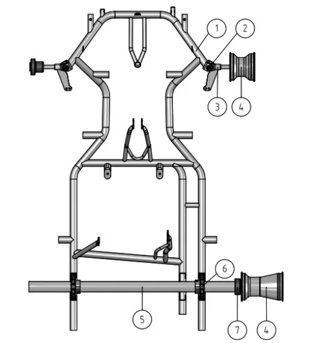</figure>
<p>Caption</p>
<p>① Front axle supports</p>
<p>② King-pin</p>
<p>③ Steering knuckles</p>
<p>④ Rims</p>
<p>⑤ Rear axle</p>
<p>⑥ Rear axle supports</p>
<p>⑦ Hubs</p>
<p>（５）補助部品</p>
<p>（５）－１　機能</p>
<p>カートが正常に機能することに寄与するすべての部品は、シャシーフレームとシャシーの主要部品を除き、規定に合致していなくてはならない。</p>
<p>（５）－２　記述</p>
<p>ブレーキ、エンジン、排気装置、ステアリング、シート、ペダル、バンパー、吸気消音装置への取り付け部品。</p>
<p>－すべての付属装置および連結部品</p>
<p>－すべてのプレートおよびスプリング</p>
<p>－その他の取り付けポイント</p>
<p>－補助チューブおよび部品</p>
<p>－ブレーキ、ブレーキディスク</p>
<p>－その他</p>
<p>（５）－３　必要事項</p>
<p>これらの部品は競技中に外れることがないよう取り付けられていなくてはならない。</p>
<p>（５）－４　材質</p>
<p>チタニウムの使用は禁止される。</p>
<h5 id="第-条-寸法と重量">第６条　寸法と重量</h5>
<h5 id="技術仕様">１．技術仕様</h5>
<p>車両各部の寸法は、次に規定する範囲内のものでなければならない。</p>
<p>１）車両全長：１８２cm以下（フロントフェアリングを除く）とする。Superkartについては２１０cm以下とする。</p>
<p>２）車両最大幅：１４０cm以下とする。ＦＰ－ＪｒCadetsは、１２０cm以下とする。</p>
<p>３）ホイールベース：１０１cm以上、１２７cm以下とする。ＦＰ－ＪｒCadetsは９０cm以上、９５cm以下とする。Superkartは、１０６cm以上１２７cm以下とする。</p>
<p>４）トレッド：タイヤの接地面の中心線をもって測定し、ホイールベースの２/３以上とする。</p>
<p><span class="pagemark" id="p9">P.9</span>５）高さ：シートを除き、地上から６５cmを超えてはならない。</p>
<p>６）いずれの部材もフロントフェアリング、リアホイールプロテクション（リアホイールプロテクションを装着していない場合またはSuperkartの場合は、リアバンパー）によって形成される四辺形から突出してはならない。</p>
<h5 id="重量">２．重量</h5>
<p>１）車両最低重量制限</p>
<p>①カテゴリーＦＰ ：ＦＰ－ＪｒＣａｄｅｔｓ ：１１０kg</p>
<p>：ＦＰ－Ｊｒ ：１３０kg</p>
<p>：ＦＰ－２ ：１４５kg</p>
<p>：ＦＰ－３ ：１５０kg</p>
<p>②カテゴリーＦＣ ：ＦＣ－２ ：１６５kg</p>
<p>：ＦＣ ：１６５kg</p>
<p>③カテゴリーＦＳ ：ＦＳ－Ｍｉｎｉ ：別途定める</p>
<p>：ＦＳ－１００ ：別途定める</p>
<p>：ＦＳ－１２５Ｍｉｎｉ ：別途定める</p>
<p>：ＦＳ－１２５Ｊｕｎｉｏｒ	：別途定める</p>
<p>：ＦＳ－１２５ ：別途定める</p>
<p>：ＦＳ－ＫＺ１２５ ：別途定める</p>
<p>：ＦＳ－ＫＺ１７５ ：別途定める</p>
<p>：ＦＳ－４ ：別途定める</p>
<p>④カテゴリーＯＫ ：ＯＫ－Ｊｕｎｉｏｒ ：１４０kg</p>
<p>：ＯＫ ：１５０kg</p>
<p>⑤カテゴリーＫＺ ：ＫＺ２ ：１７５kg</p>
<p>：ＫＺ ：１７５kg</p>
<p>⑥カテゴリーSuperkart	：Superkart ：208kg／218kg</p>
<p>⑦カテゴリーMini ：Mini ：110kg</p>
<p>⑧カテゴリーＥＶ ：ＥＶ－Ｍｉｎｉ ：別途定める</p>
<p>：ＥＶ－Ｊｕｎｉｏｒ ：別途定める</p>
<p>：ＥＶ ：別途定める</p>
<p>２）上記の重量は競技中ドライバーが競技のための通常の装備（フルフェイスヘルメット、グローブ、ブーツ）を装着している状態での最小限度のものとする。ただし特別規則に規定することにより、各クラスとも１５kgまで重量を軽減することができる。</p>
<p>３）車両およびドライバーは、競技中いかなる方法によっても、車両およびドライバー自身の重量を変更してはならず、競技中あるいは競技終了後任意に行われる点検の際に、違反が発見された場合には、そのドライバーはそのヒートから除外され、そのヒートの結果は無効となる。</p>
<p>４）カートの重量を単一または複数のバラストを用いて調整することが認められるが、バラストは固定ブロックで、直径最小６mmの少なくとも２本のボルトを用いてシャシーまたはシートに取り付けられていなければならない。</p>
<p>Superkartにおいては、バラストはシートに取り付けられてはならず、直径最小６mmの少なくとも２本のボルトを用いてシャシーフレームのメインチューブまたはフロアトレイにのみ取り付けることができる。</p>
<h5 id="第-条-バンパー">第７条　バンパー</h5>
<p>バンパーとは、フロント、リアおよびサイドに義務付けられる防護物である。バンパーには、磁気反応鋼材を用いなければならない。</p>
<h5 id="フロントバンパー-Superkartを除く">１．フロントバンパー（Superkartを除く）</h5>
<p>下記１）から３）に示すいずれかの基準に適合しなければならない。</p>
<p>１）基準Ａ</p>
<p>（１）最小の高さは地上から１５cm以上とする。</p>
<p>（２）バンパーは、最小直径１５mmの鋼鉄製パイプとし、シャシーフレームに連結されなければならない。</p>
<p>２）基準Ｂ</p>
<p>（１）最小直径１６mmの鋼鉄製の上部バー（①）と最小直径２０mmの鋼鉄製の下部バー（②）。２本のバーは連結</p>
<p><span class="pagemark" id="p10">P.10</span>されていること。</p>
<p>（２）上記の２つの部品は、ペダルの付属装置から独立していること。</p>
<p>（３）フロントフェアリングの取り付けが可能な形状であること。</p>
<p>（４）フロントバンパーは、４点でシャシーフレームに取り付けられていなければならない。</p>
<p>（５）フロントオーバーハング：最小３５０mm（③）</p>
<p>（６）下部バーの幅は、直線部でカートの縦軸に対して最低３００mm（④）。</p>
<p>（７）下部バーの付属装置は、シャシーの軸に対して平行で（水平・垂直方向に）、バンパーを５０mm取り付けられる形状であること（シャシーフレームへの取付装置）（⑤）。付属装置は互いに４５０mm離し（⑥）、地上から９０+/－２０mmの高さで（⑦）カートの縦軸の中心に取り付ける。</p>
<p>（８）上部バーの幅は、直線部でカートの縦軸に対して最低４００mm（⑧）。</p>
<p>（９）上部バーの高さは、地上から２００mm～２５０mmとする（⑨）。</p>
<p>（１０）上部バーの付属装置は、互いに５５０mm離し（⑩）、カートの縦軸の中心に取り付ける。</p>
<p>３）基準Ｃ</p>
<p>（１）最小直径１６mm（２つのコーナーは一つの一定の湾曲度でなければならない）の鋼鉄製の上部バー（①）と最小直径２０mm（２つのコーナーは一つの一定の湾曲度でなければならない）の鋼鉄製の下部バー（②）。２本のバーは連結されていること。</p>
<p>（２）上記の２つの部品は、ペダルの取付部品から独立していること。</p>
<p>（３）フロントフェアリングの取り付けが可能な形状であること。</p>
<p>（４）フロントバンパーは、４点でシャシーフレームに取り付けられていなければならない。</p>
<p>（５）フロントオーバーハング：最小３５０mm（③）</p>
<p>（６）下部バーの幅は、直線部でカートの縦軸に対して最低２９５mm、最長３１５mm。（④）</p>
<p>（７）下部バーの取付部品は、シャシーの軸に対して平行で（水平・垂直方向に）、バンパーを５０mm取り付けられる形状であること（シャシーフレームへの取付装置）（⑤）。取付部品は互いに４５０mm離し（⑥）、地上から９０＋/－２０mmの高さで（⑦）カートの縦軸の中心に取り付ける。</p>
<p>（８）上部バーの幅は、直線部でカートの縦軸に対して最低３７５mm、最長３９５mm。（⑧）</p>
<p>（９）上部バーの高さは、地上から２００mm～２５０mmとする（⑨）。</p>
<p>（１０）上部バーの取付部品は、互いに５５０mm離し（⑩）、カートの縦軸の中心に取り付ける。</p>
<p>（１１）上下バーの取付部品は、シャシーフレームに溶接されてなくてはならない。</p>
<h5 id="Superkartのフロントバンパー">２．Superkartのフロントバンパー</h5>
<p>地上からの高さ：最小１５０mm。シャシーフロントメンバーの上方に平行に取り付けられる。バンパーは最小１５mmの直径を持ち、相互に溶接された１つあるいはいくつかのチューブからなる。それに義務付けられるフロントフェアリングの取り付けが可能でなければならない。</p>
<h5 id="リアバンパー-Superkartを除く">３．リアバンパー（Superkartを除く）</h5>
<p>下記１）または２）に示すいずれかの基準に適合しなければならない。</p>
<p>１）基準Ａ</p>
<p>（１）最小の高さは地上から２０cm以上とする。</p>
<p>（２）バンパーは、最小直径１９mmの鋼鉄製パイプ若しくはそれと同等の強度を有するものとし、側面ではシャシーフレームに接続されなければならない。</p>
<p>（３）バンパー下側には最小直径１５mmの鋼鉄製パイプ若しくはそれと同等の強度を有する防護バーを取り付けること。</p>
<p>２）基準Ｂ</p>
<p>（１）最小直径１６mmのアンチインターロック・バーと最小直径１６mmの上部バーが最小構成となる。ユニット全体は、シャシーの２本の主要パイプの上で、少なくとも２点で（できれば可動性のシステムによって）フレームに固定しなければならない。</p>
<p>（２）高さ：フロントホイールとリアホイール上部を結ぶ平面を最高とする；地上から最小の高さは上部バー２００ mm（⑪）、アンチインターロック・バーで８０mm+/－２０mm（⑫）とする。</p>
<p>（３）最小値：６００mm</p>
<p>（４）リアオーバーハング：最大４００mm</p>
<h5 id="Superkartのリアバンパー"><span class="pagemark" id="p11">P.11</span>４．Superkartのリアバンパー</h5>
<p>義務付けられ、それは少なくとも直径１８mm、厚さ１.５mmを有し、地上から１５０±２０mmの高さに位置する少なくとも１本のバーから構成される。本装置は少なくとも２か所でサプルシステムのようなものでフレームに固定されなければならず、その最小幅は１,１００mmで、最大幅はカートのリアトレッドまでとする。その両端には角部があってはならず、少なくとも半径６０mmの曲げを有していること。</p>
<h5 id="リアプロテクション">５．リアプロテクション</h5>
<p>すべてのカテゴリーにおいて、リアプロテクションの装着が義務付けられ、次の条件を満たさなければならない。ＦＰ－ＪｒCadetsとＦＣを除き、ＣＩＫ－ＦＩＡ公認のリアプロテクションを装着すること。なお、ＦＰ－ ＪｒＣａｄｅｔｓ、ＦＳ－Ｍｉｎｉ及びＦＳ－１２５ＭｉｎｉのリアプロテクションはＣＩＫ－ＦＩＡ公認リアプロテクションを強く推奨とする。</p>
<p>１）リアプロテクションおよびシャシーに取り付けるための支持具は、ＦＰ－ＪｒCadetsとＦＣを除き、ＣＩ Ｋ－ＦＩＡ公認を取得していること（ＣＩＫ－ＦＩＡロゴおよび公認番号）。</p>
<p>２）リアプロテクションを取り付けるためにシャシーを改造することは禁止される。</p>
<p>３）いかなる場合もリアタイヤの上端を通る平面より高く位置してはならない。</p>
<p>４）リアプロテクションの表面は、均一で平らでなくてはならない。リアプロテクションには取り付けに必要なそして／または公認時にあるもの以外の穴や切れ目があってはならない。</p>
<p>５）リアプロテクションの前面と後輪の表面のギャップは最小１５mmで最大５０mmである。</p>
<p>６）最小幅は１,３４０mm。</p>
<p>７）いかなる場合においても、最大幅は後部の幅。</p>
<p>８）地上高：最小限３つの最低２５mm、最高６０mmで、最小幅２００mmのスペースで後輪のエクステンションとシャシーのセンターラインに取り付けられる。</p>
<p>９）地上から最低２００mmの高さで、最小幅２００mmの最小３つのスペースで計測される最低地上高１００mmで、後輪のエクステンションとシャシーのセンターラインに置かれる後部における垂直面（+０°/－５°）がなければならない。（図参照）</p>
<p>１０）リアオーバーハング：最大４００mm。</p>
<p>１１）装置はフレームへシャシーの２つのメインのチューブまたは現在使われているバンパー（アッパーバーとアンチインターロッキングバー、第７条３.２））に、プロテクションについて公認されていて、プラスチック、スチールまたはアルミニウム（または柔軟な方法）で作られた支えにより少なくとも２つの点において取り付けられていなければならない。全ての公認されたシャシーに取り付けることができなければならない（６２０から７００mmの公認されているＦの寸法に従って）。</p>
<p>１２）リアバンパーの寸法に適応するリアフェアリングが使われる場合、アンチインターロッキングバーとアッパーバーの取り付けは任意である。</p>
<p>１３）如何なる状況下においても、リアプロテクションは、リアホイール水平面からはみ出してはならない。</p>
<p>なお、ＣＩＫ－ＦＩＡ公認リアプロテクションを装着できない場合に限り、堅固な取付構造をなすものであれば、リアオーバーハングが４００mmを超えない範囲で、リアプロテクション装着部を延長するバー、カラー等を用いることは許される。</p>
<h5 id="サイドバンパー">６．サイドバンパー</h5>
<p>下記１）または２）に示すいずれかの基準に適合しなければならない。</p>
<p>１）基準A</p>
<p>地上からの高さはリアアクスルを超えてはならない。バンパーは十分な壁面強度の最低直径１５mmのものでなければならず、サイドボックスにより少なくとも後部タイヤ幅の２／３を覆っていなくてはならない。</p>
<p>２）基準Ｂ</p>
<p>（１）サイドバーは上部バーと下部バーによって構成されていなければならない。</p>
<p>（２）サイドボックスの付属装置の取り付けが可能な形状であること。</p>
<p>（３）直径は２０mm（⑬）とする。</p>
<p>（４）サイドバンパーは２点でシャシーフレームに取り付けなくてはならない。</p>
<p>（５）これらの２つの取り付け装置は地面に対して平行で、シャシーの軸に対して垂直でなければならない（⑭）。最小５０mmのバンパーの取り付け（シャシーフレームへの取り付け装置）が可能な形状で、５００mm離れていなければならない（⑮）。</p>
<p><span class="pagemark" id="p12">P.12</span>（６）２本のバーの最小直線全長</p>
<p>下部バー：４００mm（⑯）</p>
<p>上部バー：３００mm（⑰）</p>
<p>（７）上部バーの高さ：地上から最低１６０mm（⑱）</p>
<p>（８）サイドバンパーの外形幅は、カートの縦軸に対応していること。</p>
<p>下部バー：５００+／－２０mm（⑲）</p>
<p>上部バー：５００+１００／－２０mm（⑳）</p>
<p>サイドバンパーはSuperkartには義務付けられない。</p>
<p>以下、第７条バンパーにおける基準Ｂ／Ｃ参考図</p>
<figure>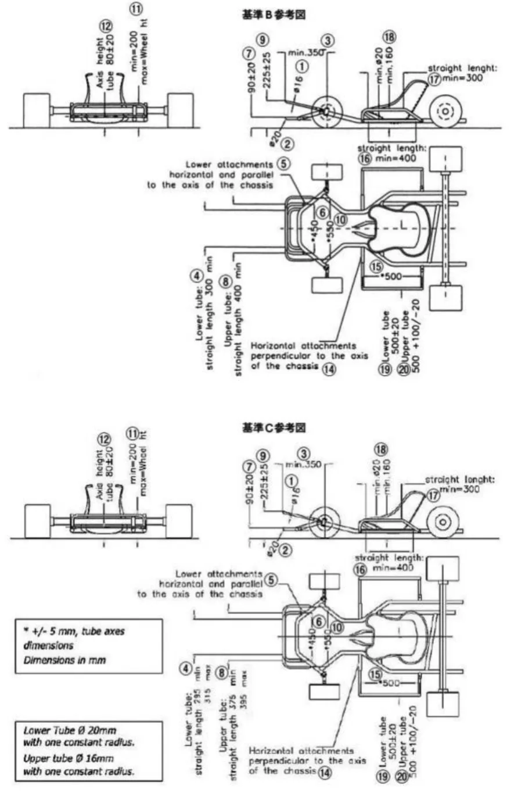</figure>
<h5 id="第-条-フロアトレイ">第８条　フロアトレイ</h5>
<p>シャシーフレームの中央の支柱からシャシーフレームの前部までの間にのみ、硬質材料によるフロアトレイを有していなければならない。フロアトレイは、パイプまたは折り返しにより側面の縁取りがなされ、ドライバーの足が台から滑り落ちないようになっていなければならない。穴をあける場合、穴の直径が１０mm以上となってはならず、各穴は少なくとも穴の直径の４倍以上の間隔を有していなければならない。これに加えて、ステアリングコラムを通過させる場合に限り、最大直径３５mmの１つの穴が認められる。</p>
<h5 id="第-条-ボディワーク"><span class="pagemark" id="p13">P.13</span>第９条　ボディワーク</h5>
<p>車体の構造は次の通りとする。なお、ＣＩＫ－ＦＩＡ公認ボディワーク（取付方法を含む）は、全ての国内競技に有効である。</p>
<h5 id="ボディワーク-Superkartを除く">１．ボディワーク（Superkartを除く）</h5>
<p>１）定義</p>
<p>車体の構造は通常の推進装置、ステアリング装置、ブレーキ装置およびそれらの正常な働きに必要な部品を除いた外気流にふれるすべてのカート用部品とＪＡＦカート競技車両規則第２８条に定義されたナンバープレートをもって構成される。</p>
<p>シャシーに装着したサイドボックスパネル（側面の箱型覆い）、フロントパネル（ステアリングシャフト前面の取付板）、フロントフェアリングとこれらを取り付けるための装置を取り除いたとき、カートは常にＪＡＦカート競技車両規則第２章に定められた状態でなければならない。車体はどの部分も暫定的な間に合わせではなく、完全に仕上げられており、また鋭角であってはならない。全ての角は最小限度半径５mmの丸みを付けなければならない。</p>
<p>パネルおよびサイドボックスの表面はなめらかで堅固でなければならない。</p>
<p>構造・寸法： 車体の構造はドライバーが通常の運転姿勢にあるとき、足・腕等も含め体のいかなる部分も覆うような構造であってはならず、かつ通常の働きを妨げるものであってはならない。</p>
<p>２）ボディワーク</p>
<p>すべての車両は２個のサイドボックスパネルと１個のフロントパネルおよびフロントフェアリングを装着するものとする。</p>
<p>取付方法：車体各部の取付方法は直径６mm以上のボルトを使用し、かつロックナットによって固定され十分走行に耐えられる方法とする。</p>
<p>サイドボックスパネルはシャシーに最少２ヶ所で強固に固定する。フロントパネルはその下部をシャシーまたはフロントバンパーに固定し、上部はステアリングコラムあるいは独立した支柱のいずれかに取り付けること。</p>
<p>全ての競技会でＣＩＫ－ＦＩＡ公認フロントフェアリングの取付方法を義務付ける。</p>
<p>なお、各部の取付方法は他車との衝突により車体部分が破損した場合にも、取付ステー等が突出しないような安全な構造でなければならない。</p>
<p>車体のいかなる部分も燃料タンクあるいはバラストを積む場所としてはならない。</p>
<p>３）材質</p>
<p>非金属、すなわちカーボンファイバー、ケブラーおよびグラスファイバーは、Superkartを除き禁止とする。全カテゴリーについて、プラスチック製の場合は、分散しないものでなければならず、破損した際に鋭角な部分が生じてはならない。</p>
<p>４）サイドボディワーク</p>
<p>下記①に示すいずれかの基準に適合しなければならない。</p>
<p>①基準Ａ</p>
<p>ａ．いかなる状態においても前輪タイヤと後輪タイヤの上部を結ぶ面より高い位置にあってはならず、かつ、前輪を正面に向けた状態で、前輪タイヤと後輪タイヤの外側を結ぶ面より飛び出てはならない。</p>
<p>ｂ．前輪を正面に向けた状態で、車輪（前後輪タイヤ）の外側を結ぶ垂直面よりも４０mm以上内側であってはならない。</p>
<p>ｃ．地上高は、最小２５mm、最大６０mmとする。</p>
<p>ｄ．表面は均一かつ滑らかであり、取り付けやクラッチ付車両における外部スターターシャフトを通すために必要とされるもの以外、穴や切断があってはならない。</p>
<p>ｅ．サイドボックス前部と前車輪タイヤの間隔は最大１５０mm。</p>
<p>ｆ．サイドボックス後部と後輪タイヤの間隔は最大６０mm。</p>
<p>ｇ．サイドボックスは、下から見て、シャシーフレームと重なり合う部分がないこと。</p>
<p>ｈ．サイドボックスは車体の外側で、地上からのクリアランスのすぐ上で最小高１００mm、最小長４００mmの垂直面を形成しなければならない。</p>
<p>ｉ．サイドボックスは、水、砂利、あるいはその他の物質が入らない形状であること。</p>
<p>ｊ．サイドボックスは、サイドバンパーに堅固に取り付けられていること。</p>
<p>ｋ．車輪近くの後部の垂直面には、競技ナンバーを表示するための場所が設けられていること。</p>
<p><span class="pagemark" id="p14">P.14</span>５）フロントフェアリング</p>
<p>下記①から③に示すいずれかの基準に適合しなければならない。</p>
<p>①基準Ａ</p>
<p>義務付けの輪郭の記述：</p>
<p>Ａ１：フロントコンプリートホイール半径以下</p>
<p>Ａ２：フロントコンプリートホイール半径以下</p>
<p>Ｂ：２５mm～６０mm Ｃ：最大：１５０mm</p>
<p>Ｄ：最大：６０mm Ｈ：最大：５０mm</p>
<p>Ｉ：２５０mm～３００mm Ｌ：最大：６５０mm</p>
<p>Ｍ：１,０００mm～フロントタイヤ／アクスル装置の外部幅</p>
<p>ａ．いかなる状況においても、フロントフェアリングは前車輪最上部を結んだ平面よりも上に位置していてはならない。</p>
<p>ｂ．鋭いエッジがあってはならない。</p>
<p>ｃ．最小幅は１,０００mmで、最大幅は前輪／アクスル装置の外部幅とする。</p>
<p>ｄ．前輪とフェアリング後部の最大距離は１５０mm。</p>
<p>ｅ．フロントオーバーハングは最大６５０mm。</p>
<p>ｆ．フェアリングの前部には、地上からのクリアランスのすぐ上に最低高８０mm、最小長３００mmの垂直面が取り付けられていなければならない。</p>
<p>ｇ．フェアリングは、水、砂利あるいはその他の物質が入らない形状であること。</p>
<p>基準Ａ参考図</p>
<figure>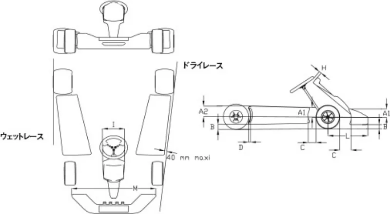</figure>
<p>②基準Ｂ</p>
<p>義務付けの輪郭の記述：</p>
<p>Ａ１：フロントコンプリートホイール半径以下</p>
<p>Ａ２：フロントコンプリートホイール半径以下</p>
<p>Ｂ：２５mm～６０mm Ｃ：最大：１５０mm</p>
<p>Ｃ１：１８０mm Ｄ：最大：６０mm</p>
<p>Ｈ：最大：５０mm Ｉ：２５０mm～３００mm</p>
<p>Ｌ：最大６８０mm</p>
<p>Ｍ：１,０００mm～フロントタイヤ／アクスル装置の外部幅</p>
<p>ａ．いかなる状況においても、フロントフェアリングは前車輪最上部を結んだ平面よりも上に位置していてはならない。</p>
<p>ｂ．鋭いエッジがあってはならない。</p>
<p>ｃ．最小幅は１,０００mmで、最大幅は前輪／アクスル装置の外部幅とする。</p>
<p>ｄ．前輪とフェアリング後部の最大距離は１８０mm。</p>
<p>ｅ．フロントオーバーハングは最大６８０mm。</p>
<p>ｆ．フェアリングの前部には、地上からのクリアランスのすぐ上に最低高８０mm、最小長３００mmの垂直面が取り付けられていなければならない。</p>
<p><span class="pagemark" id="p15">P.15</span>ｇ．フェアリングは、水、砂利あるいはその他の物質が入らない形状であること。</p>
<p>ｈ．フロントフェアリング取付キット</p>
<figure>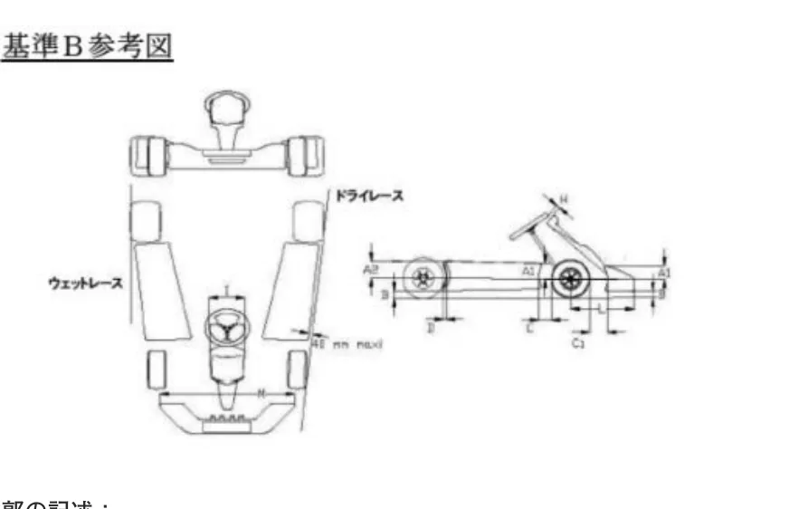</figure>
<p>③基準Ｃ</p>
<p>義務付けの輪郭の記述：</p>
<p>ａ．いかなる状況においても、フロントフェアリングは前車輪最上部を結んだ平面よりも上に位置していてはならない。</p>
<p>ｂ．鋭いエッジがあってはならない。</p>
<p>ｃ．最小幅は１,０００mmで、最大幅は前輪／アクスル装置の外部幅とする。</p>
<p>ｄ．前輪とフェアリング後部の最大距離は１８０mm。</p>
<p>ｅ．フロントオーバーハングは最大６８０mm</p>
<p>ｆ．フェアリングの前部には、地上からのクリアランスのすぐ上に最低高８０mm、最小長３００mmの垂直面が取り付けられていなければならない。</p>
<p>ｇ．フェアリングは、水、砂利あるいはその他の物質が入らない形状であること。</p>
<p>基準Ｃ参考図</p>
<figure>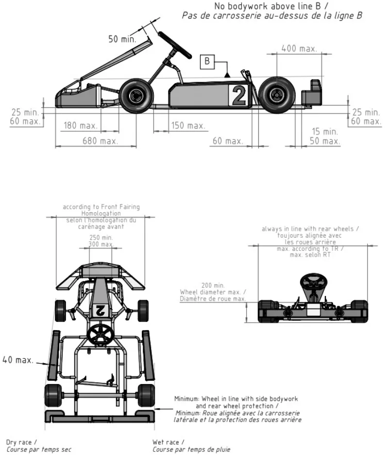</figure>
<p><span class="pagemark" id="p16">P.16</span>フロントフェアリング取付キット</p>
<figure>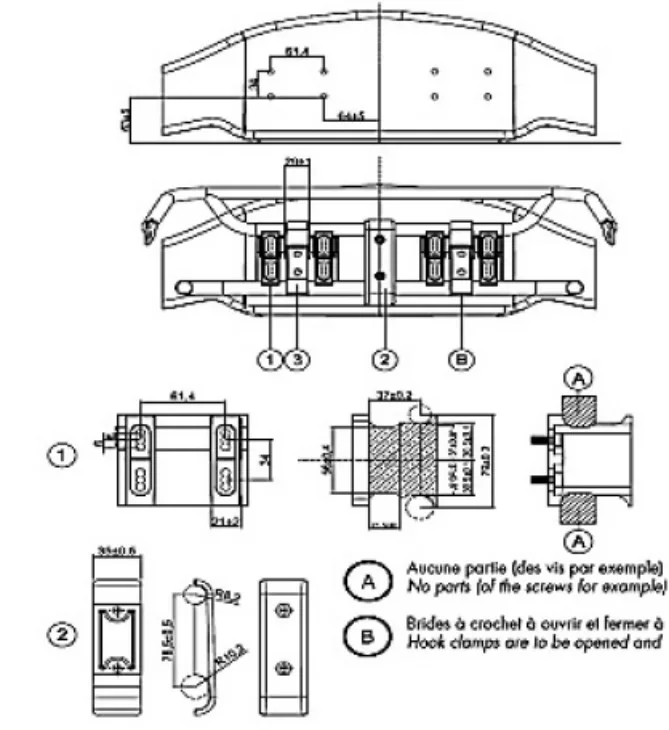</figure>
<p>Ａ…この領域にはいかなる部品も（例えばネジであっても）許されない。　Ｂ…フッククランプは工具を用いることなく手で開け閉めできること。</p>
<p>フロントフェアリング取付キットを使用してフェアリングをカートに取り付けることのみが認められる。他の手段は認められない。フロントフェアリングは、自由にシャシーの方向へ後退できなければならず、その動きを制限するような部品による妨げがあってもならない。　フロントバンパー（上下パイプ）はシャシーに強固に結合され、表面が平坦でなければならない。フロントバンパーの摩擦を最大化するようないかなる機械加工やその他の作業は厳重に禁止される。　フロントバンパー（上下パイプ）とフロントフェアリングの間隔は、如何なるときも全ての箇所において最少27mmなければならない。フロントフェアリング取付キットの定義　１．フロントフェアリング用取付具一式（２点＋８本のネジ）　２．フロントバンパーサポート（２つのハーフシェル＋２本のネジ）　３．調整可能なフッククランプ（２点、金属製のこと）下記の各部品にCIKロゴおよび公認番号の浮き彫りがあること。　１．フロントフェアリング用取付具一式（２点はプラスチック製のこと）　２．フロントバンパーサポート（２つのハーフシェルはプラスチック製のこと）</p>
<p>６）フロントパネル</p>
<p>下記①または②に示すいずれかの基準に適合しなければならない。</p>
<p>①基準Ａ</p>
<p>ａ．最大高：ステアリングホイールの最上部より高くてはならない。</p>
<p>ｂ．最小幅：２５０mm</p>
<p>ｃ．フロントパネルとステアリングホイールとの間隔は最小５０mmとし、フロントフェアリングから突出していてはならず、ペダルの通常の働きを妨げるものであってはならず、かつ、ドライバーが通常の運転姿勢にあるとき、足のいかなる部分も覆うことがあってはならない。</p>
<p>②基準Ｂ</p>
<p>ａ．最大高は、ステアリングホイールの最上部より高くてはならない。</p>
<p>ｂ．最小幅は２５０mm、最大幅は３００mmとする。</p>
<p>ｃ．フロントパネルとステアリングホイールとの間隔は最小５０mmとし、フロントバンパーより上方に出てはならず、かつ、ドライバーが通常の運転姿勢にあるとき、足のいかなる部分も覆うことがあってはならない。</p>
<p>ｄ．フロントパネルの下部には、直接的あるいは間接的にシャシーフレームに堅固に取り付けられていなければならず、上部は１本あるいは数本の独立したバーによって、ステアリングコラムサポートに堅固に取り付けられていなければならない。</p>
<p>ｅ．フロントパネルには、競技ナンバーを表示するための場所が設けられていること。</p>
<h5 id="Superkartのボディワーク"><span class="pagemark" id="p17">P.17</span>２．Superkartのボディワーク</h5>
<p>ウイングおよび翼端板を含むいかなるボディワークも：</p>
<p>－地上からの高さが６０cmを超えてはならない（いかなる空力効果も有さない単なるヘッドレストとして設計された構造を除く）。</p>
<p>－リアバンパーを超えてはならない。</p>
<p>－フロアトレイよりも地面に近くてはならない。</p>
<p>－ウェットレースの場合を除き、横方向にリアおよびフロントホイール（フロントホイールは直進位置で）の外側を超えてはならない。</p>
<p>－幅１４０cmを超えてはならない。</p>
<p>－ボディワークとタイヤの間に２５mm未満の隙間があってはならない。</p>
<p>－カートが走行している際、競技中の運転席から調整可能であってはならない。</p>
<p>ボディワーク、バブルシールドおよびウイングは非金属材料でなければならない。ボディワークとバブルシールドが一体式のものが使用される場合、バブルシールドは４つ以内のクイックリリースクリップによりボディワークに接続されていて、他の固定装置が使用されてはならない。バブルシールドが別体式の場合、その最大幅は５０cmとし、その固定用フレームの最大幅は２５cmとする。</p>
<p>バブルシールドはステアリングホイールの頂点を通る水平面より上方にあってはならず、ステアリングホイールのどの部分からも５cm未満であってはならない。バブルシールドの底部は、左右対称で通常の位置にあるペダルから少なくとも１５cmであり、足と足首が露出している（覆われない）こと。</p>
<p>いかなる場合も、バブルシールドを取り外した場合、上から見て通常に着座したドライバーのどの部分をもボディワークが覆っていてはならない。</p>
<p>ボディワークのノーズの先端は、鋭角であってはならず、少なくとも２０mmのＲがなくてはならない。フロントフェアリングは、フロントバンパーが本項の規定を満たすことができるようになっていなければならず、ホイールを直進位置にしたときにフロントホイールよりも幅が広くてはならない。</p>
<p>フロアトレイは、平坦な構造で、端部は湾曲していなければならない。リアシャフトの前方２３cmからフロアトレイは上向きの角度（エクストラクター）をもってもよい。後者が１つもしくは２つのサイドフィンを有する場合、それらはフロアトレイの平坦部分で形成される面を超えて突出してはならない。フロアトレイあるいはボディワークの他の部分もスカートに似た形状であってはならない。</p>
<p>フロアトレイはフロントバンパーおよびリアバンパーどちらも超えてはならない。その幅は、ウイングおよび翼端板を含みボディワークの寸法と同一か、超えるものではないこと。フロアトレイに軽量化のための穴をあけることは許されない。</p>
<h5 id="第-条-トランスミッション">第１０条　トランスミッション</h5>
<p>トランスミッションは、必ず後輪に作用するものでなければならない。この装置は、デファレンシャルを有するものでない限り自由とする。チェーンを潤滑するいかなる装置も禁止する。</p>
<h5 id="第-条-リアアクスル">第１１条　リアアクスル</h5>
<p>最大直径５０mmとし、すべての個所において最小１.９mmの肉厚がなければならず、すべての競技会において、チタンおよび非金属性のリアアクスルの使用は禁止される。</p>
<h5 id="第-条-チェーン-電動ベルトガード">第１２条　チェーン／電動ベルトガード</h5>
<p>必備としかつ下記の内容を満足しなければならない。</p>
<p>ギヤボックスを有しない場合は、露出しているチェーンとスプロケットの上部と両側の有効な防護物を構成しており、少なくともリアアクスルの水平面下面まで伸びていることが推奨される。ギヤボックスを有する場合は、クラウンホイール・アクスルの中心線までのスプロケットとクラウンホイールの有効な防護物を構成していることが推奨される。</p>
<h5 id="第-条-ガ-ー-ド">第１３条　ガ　ー　ド</h5>
<p>排気系統またはすべての可動部分には、着座しているドライバーに接触しないように、ガードが設けられなければならない。</p>
<h5 id="第-条-サスペンション">第１４条　サスペンション</h5>
<p>あらゆる懸架、弾性またはリンク装置は禁止する。油圧式、空気圧式または機械式減衰装置は、すべてのカートにおいて禁止とする。</p>
<h5 id="第-条-ブレーキ">第１５条　ブレーキ</h5>
<p>すべてのクラスを通じて、少なくとも双方の後輪に同時に作動する有効な足踏式ブレーキを備えなければならない。</p>
<p><span class="pagemark" id="p18">P.18</span>ブレーキは、ドラムまたはディスク型のいずれでもよい。</p>
<p>連結するワイヤーおよびロッドは２重にすることが推奨される。</p>
<p>手動操作フロントブレーキは、カテゴリーＦＣでの装着が禁止される。</p>
<p>ノンギアボックスのカテゴリーでは、フロントブレーキの装着は禁止される。</p>
<p>ブレーキディスクがシャシーフレームのメインチューブより下方に突出している場合、有効なリアブレーキディスク保護パット（テフロン、ナイロン、デルリン、カーボンファイバー、ケブラーまたはリルサン製）がSuperkartを除く全てのカテゴリーに推奨される。この防護物は、シャシーの縦方向でディスクに対して側面、またはディスク下方に位置していなければならない。</p>
<p>Superkartにおいては、ワイヤー作動式のブレーキ装置は禁止され、ブレーキライトが推奨される。</p>
<h5 id="第-条-ステアリング">第１６条　ステアリング</h5>
<p>ステアリングは、完全に閉じられた円形のステアリングホイール（円形の上部および下部１／３は、直線またはステアリングホイールの他の部分と異なる角度を有してもよい）によって操作されるものでなければならない。ステアリング上に付加されるいかなる装置も、ステアリング平面から最大２０mmまでとし、鋭い部位があってはならない。ケーブルまたはチェーンによってステアリングを操作するものは一切認められない。ステアリングのすべての部分は、安全で確実な取付け方法（ロックナット）でなければならない。</p>
<figure>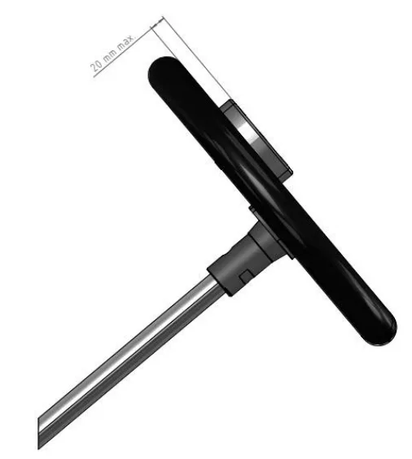</figure>
<h5 id="第-条-シ-ー-ト">第１７条　シ　ー　ト</h5>
<p>いかなる場合もドライバーが、完全にフィットされるものでなければならない。ドライバーの脚部が、前方においてコントロールペダルを操作する位置になければならない。シートベルトは禁止される。すべてのシートは、シートの支柱と取り付け点に、金属やナイロン補強材を備えていなければならない。補強材は最低１.５mmの厚さとし、表面は最小１３平方センチまたは最小直径４０mmでなければならない。支柱すべて各先端をボルトで留めるか溶接されていなければならず、もしこれらの支柱を使用しない場合、使用しない支柱をシャシー／フレームから取り除かなければならない。</p>
<p>ＦＰ－ＪｒCadetsについては、エンジン搭載に伴う最小限のシートステイの改造が認められる。</p>
<p>Superkartのシートにはヘッドレストが備わっていなければならない。</p>
<h5 id="第-条-ペ-ダ-ル">第１８条　ペ　ダ　ル</h5>
<p>ペダルは、いかなる場合もシャシーの外側に出ないように取り付けられていなければならない。</p>
<p>ペダルはマスターシリンダーの前に配置されなくてはならない。</p>
<p>Superkartについてのみ、ブレーキペダルとマスターシリンダーを作動させるすべての部品は鉄製でなければならず、かつ加えられる力に耐えうる十分な強度を備えていなければならない。</p>
<h5 id="第-条-アクセルレーター">第１９条　アクセルレーター</h5>
<p>アクセルレーターは、リターンスプリングを備え、足で操作するものとする。足は離すか、あるいはリンク装置が破損したときは、気化器のスロットルが、自動的に完全に閉鎖する構造でなければならない。</p>
<h5 id="第-条-エンジン">第２０条　エンジン</h5>
<h5 id="概-要">１．概　　　要</h5>
<p>エンジンとは、シリンダーブロック、クランクケース、該当する場合はギヤボックス、点火システム、１つまたは複数のキャブレターおよび排気マフラーを含め、走行可能状態の車両の推進装置一式と理解される。</p>
<p><span class="pagemark" id="p19">P.19</span>全てのインジェクション・システムを禁止する。燃料以外の物質の噴霧は禁止とする。</p>
<p>エンジンは、コンプレッサー他、いかなるシステムの過給装置も装備されていてはならない。</p>
<p>SuperkartおよびＦＰについては、空冷または液冷方式による冷却装置（１００ccのシリンダーおよびシリンダーヘッドのみ）が許可される。液冷方式の場合、水（Ｈ2Ｏ）のみが許可される。エンジン内部のいかなる改造も、材質の変更を除いてのみ行われる。</p>
<p>ＯＫ、ＯＫ－Ｊｕｎｉｏｒ、ＫＺ２、ＫＺのエンジンは、製造者のカタログに記載され、ＣＩＫ－ＦＩＡによって設定された書式に基づく「公認書式」に記載される対象とならなければならない。この公認書式は、ＡＳＮおよびＣ ＩＫ－ＦＩＡによって証印が押され、署名されるものとする（公認規則参照）。</p>
<p>Superkartのエンジンは、製造者の正規スペアパーツ・カタログとともに、ＣＩＫ－ＦＩＡに承認されていなければならない（ＣＩＫ－ＦＩＡの承認規則参照）。</p>
<h5 id="シリンダー">２．シリンダー</h5>
<p>スリーブ無しのエンジンの場合、シリンダーの修理に材料の追加をすることは可能だが、部品の追加はできない。</p>
<p>シリンダーヘッド：スパーク・プラグ用のねじ山を、ヘリコイルに替えることは許可される。</p>
<h5 id="水-冷">３．水　　　冷</h5>
<p>液冷方式の場合、水（Ｈ2Ｏ）のみが許可される。水冷方式を用いるすべてのカテゴリーについて、ラジエターはシャシー／フレームの上方で、地面からの高さ最大５０cm、リアホイールの中心線の前方（Superkartについてはフロントホイールの中心線の後方）最大５５cmまでに位置しなければならず、シートと干渉してはならない。Superkartにおいて、後方に設置されるラジエターはカートの両側端から１５０mm以内に配置されてはならない。すべての配管は熱（１５０℃）と圧力（１０バール）に耐えるよう設計された材質のものでなければならない。温度を調整するため、ラジエターの前面または後面への遮蔽システムの取り付けに限り許可される。この装置は可動式（調整可能）でもよいが、カートの走行中に取り出すことができてはならず、危険な要素が含まれていてはならない。メカニカルバイパスシステム（サーモスタットタイプ）は、バイパスラインを含め認められる。</p>
<figure>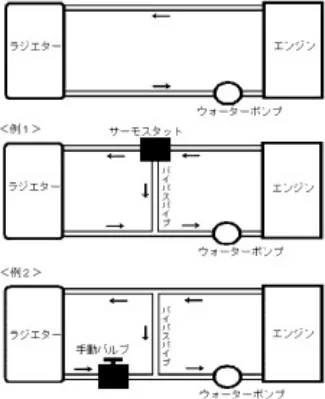</figure>
<h5 id="ウォーターポンプ">４．ウォーターポンプ</h5>
<p>カテゴリーＦＣ、ＦＳ－１２５、ＯＫ、ＯＫ－ＪｕｎｉｏｒおよびSuperkartを除き、ウォーターポンプはエンジンから独立し、エンジンもしくはリアホイールアクスルにより機械的に制御されなくてはならない。</p>
<h5 id="キャブレター">５．キャブレター</h5>
<p>一切の燃料噴射装置は禁止される。燃料以外の物質の噴霧は禁止される。</p>
<p>ギヤボックスを用いないすべてのカテゴリーについて、歯切りされたツマミによる手動機械式の調整装置を追加することは許される（キャブレターの公認取得が必要な場合、その変更は許されない）。</p>
<p>ステアリングホイールから手動で操作するバルブ、バタフライまたはスライドを、キャブレターと吸気消音器との接合部に加えることは許される。</p>
<p>ＯＫおよびＯＫ－Ｊｕｎｉｏｒのキャブレター：第８章を参照。</p>
<h5 id="イグニッション">６．イグニッション</h5>
<p>ＦＰ、ＦＣ、ＦＳ－４、ＦＳ－１２５およびSuperkartを除くすべてのカテゴリーにおいて、使用される点火装置はＣＩＫ－ＦＩＡの公認を得ていなければならない。</p>
<p>ＦＰ、ＦＳ－１２５、ＫＺおよびＫＺ２について、使用される点火装置はアナログ方式でなければならず、すべての可変点火装置（漸進的に早め、または遅らせる装置）は禁止とする。</p>
<p>ＯＫおよびＯＫ－Ｊｕｎｉｏｒについて、使用される点火装置はインテグレーテッド・レブリミッターを備えたデジタル方式で非プログラム式でなければならない。その作動にバッテリーが必要であってはならない。</p>
<p><span class="pagemark" id="p20">P.20</span>ローターが外側にあり、突出し、露出している点火装置については、回転部分を覆う防護装置が備えられていなければならない。カートの走行中に、エンジン機能のパラメーターを自動制御することを可能とするすべての電子装置は禁止とする。</p>
<p>審査委員の決定により、エントラントの点火装置を、ＣＩＫ－ＦＩＡまたはＪＡＦにより供給された点火装置と交換することができる（公認を得た同じモデル）。</p>
<p>ＯＫおよびＯＫ－Ｊｕｎｉｏｒを除き、いかなるときも配線が交換できるようにコネクターが同じであれば、スターターキー・ユニットに替えて、ひとつまたはふたつのスタート／ストップ押しボタンを用いることが許可される。</p>
<h5 id="第-条-吸気消音器">第２１条　吸気消音器</h5>
<p>ＪＡＦが特に認めた場合を除き、吸気音量を効果的に低下させるためにＣＩＫ－ＦＩＡ公認（登録）の消音器の装着が義務付けられる。</p>
<p>耐ガス構造の吸気消音器に対する技術的なデータ</p>
<p>１）容積：最低１,０００cc</p>
<p>２）材質：柔軟で、割れないプラスチック（非金属）</p>
<p>３）吸気口：最高２個（形状は製造者が選択）</p>
<p>４）キャブレター連結部：気密性を保持して取り付けること。（固定方式は製造者が選択）</p>
<p>５）漏れテスト：エアインレットノズルは全体的に空気を通さないように覆われていること。キャブレターにフランジマウントされた消音器はガソリンを満たしたとき、消音器とキャブレターの連結部分および消音器ノズル連結部分で、消音器自体からガソリンが漏れていないこと。</p>
<p>６）ＯＫ－Ｊｕｎｉｏｒ、ＯＫ：ダクト最大２３mm</p>
<p>ＫＺ、ＫＺ２：ダクト最大３０mm</p>
<p>Superkartでは容量の変化するエアボックスの使用は禁止とする。</p>
<h5 id="第-条-排-気">第２２条　排　　　気</h5>
<p>すべてのカテゴリーで、磁気反応鋼材製でなければならない。</p>
<p>ＯＫにおいては、排気装置は特定の単一のタイプ（図No.２１）のものでＯＫ用に公認されていなければならない。ピストンと排気入口までの距離は自由。</p>
<p>ＯＫ－Ｊｕｎｉｏｒにおいては、排気装置は特定の単一のタイプ（図No.２３）のものでＯＫ－Ｊｕｎｉｏｒ用に公認されていなければならない。ピストンと排気入口までの距離は自由。</p>
<p>全カテゴリーとも（Superkartを除く）、排気はドライバーの後方で行われなければならず、また地面から４５cm以上の高さで行われてはならない。</p>
<p>排気サイレンサーの出口は、その外径が３cm以上でなければならず、第６条と第７条に規定する限度を超えてはならない（Superkartを除く）。</p>
<p>排気装置を、どのような方法であれ、正常な運転位置に着座したドライバーの前方を、また位置する面を通過させることは禁止する。ＯＫおよびSuperkartを除き、いかなる「パワーバルブ」も禁止される。</p>
<h5 id="第-条-音量規制">第２３条　音量規制</h5>
<p>カートには音量を効果的に、低下させるためのサイレンサーを必ず取り付けなければならず、下記１）または２）に示すいずれかの方法にて音量を測定しなければならない。</p>
<p>測定から得られた結果は、競技会審査委員会に手渡されなくてはならない。この結果に基づき、競技会審査委員会は罰則を課すことがある。</p>
<h5 id="音量測定">１．音量測定－１</h5>
<p>１）音量の基準</p>
<p>音量を効果的に、低下させるためのサイレンサーを必ず取り付けなければならない。</p>
<p>現行の音量限度：エンジンを最大出力で運転している際に下記測定要領にて測定した場合の最大許容値は</p>
<p>７８dB（Ａ）＋３dB（Ａ）</p>
<p>音量測定は、大会開催中常に測定することができる体制を確保しなければならず、大会中はいつでもこれを行うことができるものとする。大会中無作為測定により違反車両が発覚した場合、当該競技者は除外されなければならない。</p>
<p>２）音量値測定要領（第１種コース）</p>
<p>①測定機器</p>
<p>ＪＩＳ検査済の音量計でかつ検定有効期間中のものを使用しなければならない。</p>
<p><span class="pagemark" id="p21">P.21</span>②測定尺度</p>
<p>音量は、音量計の曲線Ａを用い、&lt;ＦＡＳＴ&gt;タイムにセットし、dB（Ａ）単位で測定すること。</p>
<p>③目盛り合わせ</p>
<p>各グループの測定を始める前に、メーカーの仕様書に従って、音量計の目盛り合わせをしておくこと。</p>
<p>④妨害要因</p>
<p>雨：豪雨ないしは走路面が濡れているときは、必要なレインタイヤを使用し、測定は行わないこと。</p>
<p>風：風の影響は考慮しないこと。</p>
<p>環境：この測定方法には既に算定済みである。</p>
<p>その他：外騒音は、測定対象車両が排出する音量より１０dB（Ａ）以上低くなければならない。（例えば、反対</p>
<p>車線を走る車両のもの。）</p>
<p>⑤指示</p>
<p>マイクロホンは、走路面から１.８m±０.１mの高さに、走路に向けて吊るすこと。これと測定機器とは、ケーブルで接続しておくこと。</p>
<p>⑥測定場所</p>
<p>２つのコーナーに挟まれている直線部分で行うこと。サーキットの形状により、様々な測定場所（線Ａ－Ａから線Ｂ－Ｂとの間に）設定することが可能である。</p>
<p>その場所は審査委員会により決定される。</p>
<p>またオーガナイザーの一員と審査委員は決定委員として行動することができる。</p>
<figure>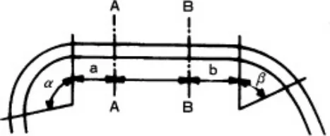</figure>
<p>線Ａ－Ａ：α　最大／等しい　90°：α＝35ｍ　　　　　α　最小　　　　　90°：α＝10ｍ線Ｂ－Ｂ：β　最大　　　　　90°：α＝35ｍ　　　　　β　最小／等しい　90°：α＝10ｍ</p>
<p>⑦測定結果</p>
<p>車両とマイクロホンとの間隔は僅かなので、測定結果は非常に高くなり、これをそのまま道路を走行する自動車の測定値と比較することはできない。</p>
<p>ペナルティを決定するために、測定機器の示す数値から２５.５dB（Ａ）を引くことにより、その数値を補正・比較しなければならない。</p>
<p>３）ペナルティ（第１種コース）</p>
<p>タイムトライアルに次の時間が加算される。</p>
<div class="tablewrap"><table><tr><td>音 量</td><td></td></tr><tr><td>81.5dB以上82dB未満
82dB以上82.5dB未満
82.5dB以上83dB未満
83dB以上83.5dB未満
83.5dB以上84dB未満</td><td>0.25 秒
0.5 秒
1 秒
2 秒
4 秒</td></tr></table></div>
<p>注）８４dBを含み、８４dBを超えるドライバーはレースから除外される。</p>
<p>４）音量値測定要領（第２種コース）</p>
<p>①測定の条件</p>
<p>ａ．測定を受ける車両は十分な暖気運転を行った後、手動変速機付車両はクラッチを接続した状態の中立位置、自動変速機付車両は中立位置の状態とする。</p>
<p>ｂ．測定車両は、参加者によりエンジンの回転数を最大出力時の７５%±１００rpmで無負荷運転を続け、その間の</p>
<p><span class="pagemark" id="p22">P.22</span>音量の最大値が測定される。</p>
<p>ｃ．測定場所は屋外の平坦な路面で、車両の最外側から少なくとも１mの範囲が舗装され、車両およびマイクロホンから３m以上に音響障害物がないこと。</p>
<p>ｄ．測定時の周囲の音量レベル（暗騒音）が測定された排気音量レベルに対し１０dB（Ａ）より低い場合は測定値は有効とする。</p>
<p>②測定装置</p>
<p>ＪＩＳ（C１５０５と同等）の検定を有する音量測定機器を用い、Ａ特性を使用する。</p>
<p>③測定の方法</p>
<p>ａ．マイクロホンは排気口と同じ高さで水平に保ち排気口に向ける。排気ガス流れの中心とみなされる軸に対し４５°±１０°の角度の範囲内とする。排気口が２個以上ある場合は大きい方で、同サイズの場合は前後では後方、幅は外側で測定する。排気口が車両の両側にある場合にはコースの外側のもので測定する。</p>
<p>ｂ．排気口と測定器間の距離は下記の音量対比表を参考に選択できる。ただし、最大規制音量は表中の２重枠内の値を超えないこと。</p>
<div class="tablewrap"><table><tr><td>距離m</td><td>音量レベル dB（A）</td><td></td><td></td><td></td><td></td><td></td><td></td></tr><tr><td>3</td><td></td><td>120</td><td></td><td>110</td><td>105</td><td>100</td><td>90</td></tr><tr><td>2</td><td></td><td>124</td><td></td><td>114</td><td>109</td><td>104</td><td>94</td></tr><tr><td>1</td><td></td><td>130</td><td></td><td>120</td><td>115</td><td>110</td><td>100</td></tr><tr><td>0.5</td><td></td><td>135</td><td></td><td>125</td><td>120</td><td>115</td><td>105</td></tr></table></div>
<h3 id="参考-PWL-SPL-ogr">参考　　PWL≒SPL+２０１ogr+８</h3>
<p>PWL：音源のパワーレベル</p>
<p>SPL：rm離れた位置での音圧レベル</p>
<p>ｃ．これ以外の測定方法を用いる場合はその詳細を特別規則に明記すること。</p>
<h5 id="音量測定-2">２．音量測定－２</h5>
<p>１）音量の基準</p>
<p>全クラス対象－ＪＡＦの指示に従って製作された支持物にカートを置いた状態で、エンジン回転１０,０００rpm（± ５００rpm）にして測定した場合の現行の音量限度は最大１０７.５dB／Ａである。</p>
<p>大会中はいつでも音量測定を行うことができるものとする。大会中無作為測定により違反車両が発覚した場合、当該競技者は除外されなければならない。</p>
<p>２）音量値測定要領</p>
<p>①測定機器</p>
<p>国際電気工学委員会（ＣＥＩ）の勧告第６５１号クラス１、２に対応する音量計またはそれと同等のシステムに限る。</p>
<p>②測定尺度</p>
<p>音量は、音量計の曲線Ａを用い、&lt;ＦＡＳＴ&gt;タイムにセットし、dB（Ａ）単位で測定すること。</p>
<p>③目盛り合わせ</p>
<p>各グループの測定を始める前に、メーカーの仕様書に従って、音量計の目盛り合わせをしておくこと。</p>
<p>④妨害要因</p>
<p>雨：豪雨ないしは走路面が濡れているときは、必要なレインタイヤを使用し、測定は行わないこと。</p>
<p>風：風の影響は考慮しないこと。</p>
<p>環境：この測定方法には既に算定済みである。</p>
<p>その他：外騒音は、測定対象車両が排出する音量より１０dB（Ａ）以上低くなければならない。（例えば、反対</p>
<p>車線を走る車両のもの。）</p>
<p>⑤指示</p>
<p>音量測定機器は、ＦＩＡの測定同様、カートの１メートル後方にカートからの排気との角度が４５度になるよう、静止位置に置かれるものとする。</p>
<p>⑥測定場所</p>
<p>車両保管場所内。</p>
<p>⑦測定結果</p>
<p>車両とマイクロホンとの間隔は僅かなので、測定結果は非常に高くなり、これをそのまま道路を走行する自動車</p>
<p><span class="pagemark" id="p23">P.23</span>の測定値と比較することはできない。</p>
<p>３）測定機器の示す数値を補正してはならない。</p>
<p>４）結果の発表</p>
<p>以上の測定から得られた結果は、競技会審査委員会に手渡されなくてはならない。競技会審査委員会は罰則を課すことがある。</p>
<h5 id="第-条-燃料タンク">第２４条　燃料タンク</h5>
<p>燃料タンクは、シャシーにしっかり取り付けられなければならず、タンク自体からも、連結パイプ（柔軟性のあるパイプでなければならない）からも、競技中に燃料が漏れる危険性のないよう設計されていなければならない。</p>
<p>クイックアタッチメント方式によるシャシーへの取り付けが強く推奨される。</p>
<p>タンクは、決して空力的付加物を構成してはならない。タンクは、通常の大気圧でのみエンジンに燃料を供給するものでなければならない（つまり、燃料タンクとキャブレターの間に位置する燃料ポンプを除き、燃料タンク内の圧力に影響を及ぼす機械式またはそれ以外のすべての原理またはシステムは禁止とする）。</p>
<p>燃料タンクは、シャシー／フレームのメインチューブの間で、シートの前方で、フロントホイールの回転軸の後方に位置していなければならない。</p>
<p>Superkartにおいて、燃料タンクの総容量は最大１９リットルとする。出口径は５mmを超えてはならない。</p>
<h5 id="第-条-燃-料">第２５条　燃　　　料</h5>
<h5 id="燃料">１．燃料</h5>
<p>石油会社で生産され、通常のガソリンスタンドのポンプから販売される自動車用の無鉛ガソリンの使用が義務付けられる。</p>
<p>また、ＪＡＦ国内競技車両規則第４編カーボンニュートラルに関する共通規定第２条に合致する燃料について、日本国内での使用に係る関係法令等（道路運送車両の保安基準、揮発油等の品質確保等に関する法律、等）に準拠するものであれば、オーガナイザーは特別規則にてその使用を規定することができる。</p>
<p>エンジンオイルについては、通常市販されているもののみとし、それ以外の添加物の使用は一切認められない。</p>
<p>すべての燃料冷却方式は禁止される。</p>
<h5 id="第-条-ホイールおよびタイヤ">第２６条　ホイールおよびタイヤ</h5>
<h5 id="ホイールおよびタイヤ">１．ホイールおよびタイヤ</h5>
<p>１）ホイールは空気入りタイヤ（チューブ付きまたはチューブレス）を備えていなければならず、その数は４個とし、ドライバーが搭乗した場合にタイヤ以外の部分が地面に接触してはならない。</p>
<p>２）ホイールの取り付けは、ロックナット等による安全な方法によらなければならない。</p>
<p>３）寸法は次の通りとする。</p>
<p>①リムの直径は最大５インチとする。ただしクラスＦＣおよびSuperkartのリムの直径は６インチまで認められる。</p>
<p>②フロントタイヤの外側直径は最大２８cmとし、リアタイヤの外側直径は最大３０cmとする。</p>
<p>③タイヤを付けた後車輪の最大幅は２１.５cmとし、前車輪の最大幅は１３.５cmとする。</p>
<p>ホイールを車軸に取り付ける場合、スプリットピン、またはセルフロックナット、またはサークリップのような安全なロッキングシステムを有していなくてはならない。すべてのカテゴリーでリトレッドタイヤの使用、スリックタイヤとレインタイヤを組み合わせた使用および「ラジアル」タイヤや「非対称」タイヤの使用は禁止され、いかなる手段でタイヤを熱することも、化学物質でタイヤを処理することも禁止される。</p>
<p>４）タイヤが制限される特定の車両クラスは別途定める細則「指定カートタイヤについて」によって指定されたタイヤを使用しなければならない。</p>
<p>①ＯＫ、ＯＫ－Ｊｕｎｉｏｒ、Superkart：ＣＩＫ－ＦＩＡ公認タイヤの使用が義務付けられる。</p>
<p>②ＪＡＦ指定タイヤの使用が義務付けられるクラス：</p>
<p>ＦＰ－Ｊｒ、ＦＰ－JrCadets、ＦＰ－２、ＦＰ－３</p>
<p>５）ＪＡＦ指定タイヤを使用するクラスを設ける場合は、オーガナイザーによって指定された単一製造者の銘柄のタイヤを使用しなければならない。</p>
<p>６）以下に示すＣＩＫ－ＦＩＡ標準リムを使用することが望ましい。</p>
<p>①タイヤ用カップリングの直径：</p>
<p>５インチのリムの場合：１２６.２mm（公差－１mm）</p>
<p>②タイヤハウジングの幅：最小１０mm</p>
<p><span class="pagemark" id="p24">P.24</span>③５インチのリムの外径：最大１３６.２mm</p>
<p>④ハウジング内でのタイヤのカップリングを良くするための半径Ｒ：８mm</p>
<p>⑤アセンブリの最大圧：４バール</p>
<p>⑥８バールの水圧でのタイヤバースト抵抗試験</p>
<figure>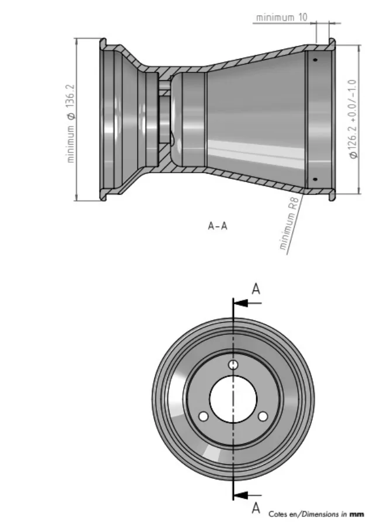</figure>
<h5 id="ビードによる固定">２．ビードによる固定</h5>
<p>すべてのカート競技では、ホイールはリムの外側に３本以上のペグで固定した何らかの形のビードを備えることが推奨される。</p>
<p>第２種カートコースを走行するカテゴリーＦＣ車両のビードは、各リアホイールのリムの外側に３本以上のペグで固定されていなければならず、同ホイールのリムの内側は３本以上のペグを備えることが推奨される。</p>
<p>Superkartにおいては、すべてのホイールにビードが備わっていなければならない。リアホイールに関しビードはリムの外側に３本以上、内側に３本のペグで固定されていなければならない。</p>
<h5 id="第-条-始動およびクラッチ">第２７条　始動およびクラッチ</h5>
<p>エンジンの始動方式およびクラッチは自由とする。</p>
<p>遠心クラッチを覆う効果的な保護物（アルミニウム製またはプラスチック製）が取り付けられていなければならない。ただし、チェーンまたはベルトに干渉しないこと。</p>
<p>スタートキーユニットの代替として１つまたは２つのスタート／ストップのプッシュボタンを備えることが認められる。この場合、コネクターは同一のものとするが、配線は代用品とすることができる。</p>
<p>カットオフ：クラッチ付きエンジンを搭載している車両はカットオフ装置を必ず備えなければならない。この装置は、ドライバーが車両を運転中、正常に着座して容易に操作し得るように設けられていなければならない。</p>
<h5 id="第-条-ナンバープレート">第２８条　ナンバープレート</h5>
<p>１．車両は、前方および後方、または必要とする場合は側方から明瞭に識別できるよう、競技ナンバーを取り付けなければならない。</p>
<p>２．ナンバープレートを取り付ける場合２１cm～２２cm角とする。なお、両プレートの形状は、その角が１５R～２５Rmmを有するものとする。</p>
<p>３．ナンバープレートの材質は不透明で柔軟なプラスチックでなければならない。Superkartについては、ファイバーグラス（ポリエステル）でもよく、また競技ナンバーをリアラジエターに記載することも許される。</p>
<p><span class="pagemark" id="p25">P.25</span>４．後方ナンバープレートの取り付けは、垂直または４５度以内の傾斜とする。リアプロテクションによって兼ねることが認められる。</p>
<p>５．前方および側方のナンバープレートを本規則第９条に示されるフロントパネルおよびサイドボックスによって兼ねることが認められる。</p>
<p>６．サイドボックスの側面の競技ナンバーは外部垂直面の後輪付近とする。</p>
<p>７．競技ナンバーは、下記寸法および字体、またはＪＡＦが指定したものとする。</p>
<p>また、その下地は単色で競技ナンバーを明瞭に識別できる色を使用しなければならない。</p>
<p>１）数字はアラビア数字（算用数字）とし、書体はフーツラボールド、またはこれに類似したものとする。</p>
<h5 id="1-2-3-4-5-6-7-8-9-0-参考書体">1．2．3．4．5．6．7．8．9．0．（参考書体）</h5>
<p>２）字体は幅２cmの字画で最小高12cm（Superkartについてはそれぞれ３cm、２０cm）とする。</p>
<p>３）文字の色は白または黒のいずれかを推奨する。</p>
<h5 id="第-条-公-認">第２９条　公　　　認</h5>
<h5 id="公認">１．公認</h5>
<p>１）シャシーの公認</p>
<p>本条４．に従って、ＯＫ－Ｊｕｎｉｏｒ、ＯＫおよびＫＺ２のシャシーはＣＩＫ－ＦＩＡまたはＪＡＦの公認を得なければならない。</p>
<p>これらは製造会社のカタログに記載され、ＣＩＫ－ＦＩＡにより制定された形式に従って“公認書式”という書類に記載される対象とならなければならない。</p>
<p>シャシーは３年間の有効期間で公認されることとする。公認の延長は可能とされる。公認期間が満了した後、さらに２年間ＪＡＦ公認競技会で使用することが認められる。</p>
<p>それぞれの公認に対する最低台数：タイヤを除き、５０台のシャシーが組み立てられていなければならない。</p>
<p>２）エンジンの公認</p>
<p>カテゴリーＦＣ、ＦＳ－１２５、ＦＳ－４およびＭｉｎｉを除く全てのカテゴリーのエンジンは、ＣＩＫ－ＦＩ ＡまたはＪＡＦの公認を得なければならない。</p>
<p>ＪＡＦ公認エンジンの公認有効期間は９年間とする。なお、公認の延長は可能とされる。公認期間が満了した後、さらに２年間ＪＡＦ公認の国内格式以下の競技会で使用することが認められる。</p>
<p>公認される以前に競技に使用してはならず、かつ、次の条件を満たさなければならない。</p>
<p>また、ＣＩＫ－ＦＩＡ公認期間が満了した後、さらにＪＡＦが認めた場合、エンジン・キャブレター・インテークサイレンサー・イグニッションはＪＡＦ公認の国内格式以下の競技会で使用することが認められる。</p>
<p>①エンジンはメーカーのカタログに記載された量産エンジンとし、そのエンジンの公認のための書式はＣＩＫ－ＦＩ Ａが定めた書式に従って、ＪＡＦによって作成された「公認書」によるものとする。</p>
<p>②ＪＡＦ公認エンジンのための申請は、所定の書式に従い申請料をそえてＪＡＦに提出されなければならない。</p>
<p>申請はＪＡＦ登録カート特別団体に登録されたメーカーのみがこれを行うことができる。ＣＩＫ－ＦＩＡ公認に関してはＣＩＫ－ＦＩＡの定める国際カート規則に従うものとする。</p>
<p>③申請にあたっては、エンジンの写真と仕様書およびマフラーとキャブレター寸法図を提出し、またＪＡＦによって規定された条件のすべてを満たしていなければならない。</p>
<p>④エンジン本体については、申請受理の期限までに、まったく同一のものが２５台以上製造されていることの証明書を添付しなければならない。</p>
<p>ａ）カテゴリーＦＰのエンジンは申請受理の期限までに、まったく同一のものが２００台以上製造されていることの証明書を添付しなければならない。</p>
<p>ｂ）カテゴリーＦＰのキャブレターは申請受理の期限までに、200基以上製造されていることの証明書を添付しなければならない。</p>
<p>ｃ）カテゴリーＦＣおよびＦＳ－４のエンジンはＣＩＫ－ＦＩＡまたはＪＡＦに登録されていなくてはならず、製造者の公式のパーツリストが添付されていること。</p>
<h5 id="公認の追加-変更">２．公認の追加、変更</h5>
<p>製造者はＪＡＦによって定められた期間に、すでに公認されている部品あるいは装置を次の条件を遵守することにより改良することができる。</p>
<p>１）公認の追加の申請はＣＩＫ－ＦＩＡの書式をもって行うこと。図面、寸法あるいは新しい部品および古い部品の詳細は記載されなければならない。</p>
<p><span class="pagemark" id="p26">P.26</span>２）改良は強度の増加あるいは費用を軽減するためのものである。</p>
<p>３）シャシーに対する公認の追加は、それがベースとなる設計を変更することなく当初のものを補強するような安全性を根拠とするもののみが認められる。追加は公認の期限の間に、公認から２年目に１回と３年目に１回の、２回のみが認められる。</p>
<p>４）ＪＡＦカート部会は追加の承認あるいは拒否について、申請者の受理後すみやかに決定しなければならない。</p>
<p>５）承認された公認書はＪＡＦによって署名された公認書の原書に付加される。</p>
<p>６）公認追加に関する費用は申請を行った製造者が負担すること。その際の申請料は公認申請料と同一とする。</p>
<h5 id="販売">３．販売</h5>
<p>公認されたエンジンおよび部品は、一般に市販され自由に購入できるものとする。</p>
<p>エンジン、シャシーまたは公認された装備は、その販売時において、公認書を添付しなくてはならない。</p>
<h5 id="許容公差">４．許容公差</h5>
<p>１）エンジン</p>
<p>公認書に記載されている技術的仕様（写真、図、寸法）、および本条５．に従って許可される改造を考慮にいれることによって、公認されたエンジンまたはエンジンの部品を識別できなければならない。</p>
<p>管理のため次の許容公差が許される。</p>
<p>①コネクティングロッドセンターライン　　　　　　 ±0.2mm</p>
<p>②ピストンストローク（エンジン組み立て時）　　　 ±0.2mm</p>
<p>ピストンストローク（エンジン分解時）　　　　　 ±0.2mm</p>
<p>③ＯＫエンジン（ピストン、クランクシャフト、コンロッド、リードボックス、バランスシャフト）</p>
<div class="tablewrap"><table><tr><td>寸 法</td><td>＜25mm</td><td>25－60mm</td><td>60－100mm</td><td>＞100mm</td></tr><tr><td>公 差</td><td>±0.5mm</td><td>±0.8mm</td><td>±1mm</td><td>±1.5mm</td></tr></table></div>
<p>④すべての125ccエンジンの排気装置　　　　　　　　±0.1mm</p>
<p>ＯＫエンジン：排気装置：図No.21参照</p>
<p>パワーバルブ：図No.22参照</p>
<p>ＯＫ－Ｊｕｎｉｏｒ：排気装置：図No.23参照</p>
<p>⑤吸気・排気開口角度　　　　　　　　　　　　　　 ±２°</p>
<p>（ＯＫおよびＯＫ－Ｊｕｎｉｏｒエンジンは除く）</p>
<p>⑥イグニッション、エンジン：点火タイミング交差　 ±３°</p>
<p>⑦公認ギヤボックス（エンジン３回転後の数値）　　 ±３°</p>
<div class="tablewrap"><table><tr><td>寸 法</td><td>25mm未満</td><td>25以上60mm未満</td><td>60mm以上</td></tr><tr><td>機械加工部品</td><td>±0.5mm</td><td>±0.8mm</td><td>±1.5mm</td></tr><tr><td>未加工部品</td><td>±1.0mm</td><td>±1.5mm</td><td>±3.0mm</td></tr></table></div>
<p>寸法は全てメートル法（cm、mm、kg、°（度）等）で測定される。</p>
<p>２）公差のないもの</p>
<p>①最大立法容量：１００cc、１２５cc、２８０cc</p>
<p>②キャブレター・ベンチュリーの直径。</p>
<p>３）シャシーフレーム</p>
<p>公認書に記載されている技術的仕様（写真、図、寸法等）によって、公認シャシーの識別ができなければならない。</p>
<p>４）プラスチックの車体</p>
<p>公認寸法からの許容公差　±１%</p>
<p>５）タイヤ</p>
<p>公認書式に記載されている技術的仕様（写真、図、寸法等）によって、公認タイヤの識別ができなければならない。</p>
<h5 id="改造-2">５．改造</h5>
<p>本規則に明確に規定されているか、あるいはＪＡＦが決定した安全上の理由によるものでない限り、いかなる改造も禁止する。改造とは、公認書に表記されている当初公認された部品の初めの外観、寸法、図面、写真が変更される</p>
<p><span class="pagemark" id="p27">P.27</span>可能性を生ずるすべての操作を意味する。</p>
<p>取り外した材料を再び使用してはならない。事故の後、修理に必要な材料を付加することによりフレームの形状寸法を再建することは認められる（溶接用の金属を追加するなど）。本規定条項で例外的に認められていない限り、摩耗または損傷したその他の部品を材料の追加または取付によって修理してはならない。</p>
<p>１）公認されたエンジンの部品は常に識別できるものでなければならない。</p>
<p>２）クラスＦＣ、ＦＣ－２に許される改造</p>
<p>公認エンジンについてのすべての改造は、次を除き許される。</p>
<p>①内部</p>
<p>ａ）ストローク</p>
<p>ｂ）ボア（最大限度まで）</p>
<p>ｃ）コネクティングロッドセンターライン（磁気性材質が義務付けられる。）</p>
<p>②外部</p>
<p>ａ）キャブレターの数とベンチュリー径</p>
<p>ｂ）エンジンの外部の特徴（エンジンの外観の改造は公認の追加として申請しなければならない。）</p>
<p>もし、エンジンの外観が公認された状態から変更されないならば、エンジン外観の改造にキャブレター、イグニッション、排気あるいはエンジン装具は含まれない。</p>
<p>３）クラスＦＰ－Ｊｒ、ＦＰ－２に許される改造</p>
<p>シリンダーとシリンダーヘッドを除き改造は認められない。</p>
<p>なお、シリンダーとシリンダーヘッドを改造する場合でも、付加することによる改造は認められない。</p>
<p>６．フォーミュラピストンジュニアカデット（ＦＰ－ＪｒCadets）のシャシーの申請</p>
<p>ＦＰ－ＪｒCadetsのシャシーは、ボディワークを含み、本規定および下記に従い、ＪＡＦに申請されたものでなければならない。</p>
<p>１）当該年に有効なＣＩＫ－ＦＩＡ公認またはＪＡＦ公認シャシーを製造しているシャシー製造者によって製造されたシャシーとし、原則として２５台以上のシャシーが製造されていること。</p>
<p>２０２１年以降は以下を適用する：</p>
<p>２）フレームは以下の特性に従っていなければならない：</p>
<p>パイプの数：６；アンチロールバーを使用することは認められない。</p>
<p>フレームパイプのサイズ：磁性鋼材製の28×２mm（＋／－0.1mm）。</p>
<p>リアアクスルベアリング：最大２。</p>
<p>座席支持部：４、固定され、フレームに溶接される、磁性鋼材製。</p>
<p>シャシーフレームの改造（例えば、パイプの位置）は、公認書式に記載されている寸法を遵守している場合に</p>
<p>のみ、また曲線部が公認の際にあったパイプ上の位置でのみ移動している場合に、認められる。</p>
<p>２）ＪＡＦ申請書式に記載されている技術的仕様（写真、図、寸法等）によって、申請シャシーの識別ができなければならない。</p>
<p>３）申請：</p>
<p>①ＪＡＦ登録カート特別団体あるいは加盟団体のみがこれを行うことができる。</p>
<p>②ＪＡＦ所定の書式に従い、当該シャシーを使用して初めて参加する競技会の２ヶ月前までにＪＡＦに提出すること。</p>
<p>ただし、本規定第52条（Ｍｉｎｉ特別規定）３．１）に従いＣＩＫ－ＦＩＡに公認されたシャシーまたはボディワークは使用することができる。</p>
<p>７．ＦＣ、ＦＳ－１２５、ＦＳ－４およびＭｉｎｉのエンジンの登録</p>
<p>カテゴリーＦＣ、ＦＳ－１２５、ＦＳ－４およびＭｉｎｉのエンジンはそれぞれ第５章、第６章および第10章で定義された量産のものを基本としなくてはならない。クランクシャフト、クランクケース、シリンダーヘッド、排気／吸気制御装置の交換については、エンジン製造業者のエンジンに対する公認リストに記載されていなくてはならない。</p>
<p>その申請にあたっては、最低２００台の量産ラインから２５基のエンジンを査察することができる証明を提出しなくてはならない。この査察は製造工場または、製造者により指定されたその他の主要代理店のいずれかで行うことができる。</p>
<p>登録はＣＩＫ－ＦＩＡの公式の登録用紙で行う。その他すべての公認書に記載されていない装備は自由であるが、</p>
<p><span class="pagemark" id="p28">P.28</span>燃料噴射およびいかなる形式の電動式キャブレーション処理装置があってはならない。</p>
<p>申請にあたっては、エンジンの写真と仕様書およびマフラーとキャブレター寸法図を提出し、またＪＡＦによって規定された条件のすべてを満たしていなければならない。</p>
<h5 id="第-条-テレメトリー">第３０条　テレメトリー</h5>
<h5 id="テレメトリー-データ交信装置">１．テレメトリー（データ交信装置）</h5>
<p>いかなるテレメトリーシステムも、ＪＡＦによって予め規定された場合を除き、厳禁とする。</p>
<h5 id="データロガー-データ蓄積装置">２．データロガー（データ蓄積装置）</h5>
<p>データロガーの仕様は自由であるが、エンジンの通常の作動に影響や変更を及ぼしてはならない。</p>
<p>ＫＺ２において、排気温度センサーを使用することは自由であるが、公認されたエキゾーストまたは寸法が規制されたマニホールドを改造することはできない。</p>
<p>ＯＫ－ＪｕｎｉｏｒおよびＯＫにおいて、排気温度センサーは、ＯＫ－Ｊｕｎｉｏｒについては図No.23、ＯＫについては図No.21に指定された位置にのみ取り付けることができる。</p>
<h5 id="無線">３．無線</h5>
<p>コース上のドライバーとそれ以外の者との間の無線装置による連絡システムは厳禁とする。</p>
<h5 id="第-条-リア赤色灯">第３１条　リア赤色灯</h5>
<p>Superkartについて装着が義務付けられ、ＦＩＡに公認されていなければならない。ＬＥＤの赤色灯はドライバッテリーから電気の供給を受け、コクピットから防水のスイッチにより操作される。赤色灯は、地面から高さ４０ cmから６０cmの間で、カートの中心線から両側に最大で４０cmの位置に設置されていなければならない。また、競技の期間を通じて作動しなければならない。</p>
<p>赤色灯は、ウェットコンディションの際、レースディレクターの決定により点灯されなければならない。</p>
<h5 id="第-条-バッテリー">第３２条　バッテリー</h5>
<p>始動装置（Superkartにおいては、これに加えてリアライト、ウォーターポンプ）の電源（点火装置の電源を含む）として、ドライバッテリーまたはゲル状のバッテリーのみ許される。バッテリーは、シャシーフレームの周辺、またはフロアトレイに設置する。</p>
<h3 id="第-章-カートと装備の安全性"><span class="pagemark" id="p29">P.29</span>第３章　カートと装備の安全性</h3>
<h5 id="第-条-カートの安全性">第３３条　カートの安全性</h5>
<p>カートは、安全で規定に合致している場合のみ走行を認められる。カートは規定を遵守し、ドライバーおよびその他の参加者が危険に陥ることがないように、設計され、維持されなくてはならない。</p>
<h3 id="第-章-フォーミュラピストン特別規定"><span class="pagemark" id="p30">P.30</span>第４章　フォーミュラピストン特別規定</h3>
<h5 id="第-条-フォーミュラピストンジュニアカデット">第３４条　フォーミュラピストンジュニアカデット　（ＦＰ－ＪｒＣａｄｅｔｓ）</h5>
<p>１．本規則第２章第２９条の規定に基づき、ＪＡＦによってＦＰ－ＪｒＣａｄｅｔｓ用に公認されたギヤボックス無しの７ps相当の単気筒空冷式量産２サイクルエンジンでいかなる方式の“パワーバルブ”も禁止される。</p>
<h5 id="最大気筒容積-cc">２．最大気筒容積：１００cc。</h5>
<p>３．メーカー純正のセンターアクスルのバタフライ方式のキャブレターで、そのベンチュリーの最大直径は第２章第２９条４.の公差を既に含んで２４mm以下でなければならない。すべてのスライドキャブレター方式は禁止される。</p>
<h5 id="下記の制限のあるピストンポートエンジン">４．下記の制限のあるピストンポートエンジン。</h5>
<p>１）鉄のライナーを有するシリンダー（クロームおよびニカシルは禁止される）。</p>
<p>２）ピストンはＪＡＦ公認書式にある完全な寸法であること。すべてのコーティング形式は禁止される。</p>
<p>３）ストローク：最小４６.０mm、最大５４.５mm。</p>
<p>４）掃気ダクトの数は自由。</p>
<p>５）イグニッション：タイミングは固定されていること。</p>
<p>製造者／型式はエンジンの公認書式に記載されていること。</p>
<h5 id="排気管はメーカー純正とし-エンジン-基につき-個とする">５．排気管はメーカー純正とし、エンジン１基につき１個とする。</h5>
<h5 id="公認-登録-の吸気消音器が義務付">６．ＣＩＫ－ＦＩＡ公認（登録）の吸気消音器が義務付</h5>
<p>７．クラッチ：ＪＡＦが公認した遠心クラッチが義務付けられる。クラッチは製造者によりエンジンと共に公認されるか、又は同一の公認期間について別の部品として公認されてよい。この様な別個の公認はこのクラスに対する製造者によるエンジンに限定される。始動方式は電動式か、反動式のいずれか、またはその両者であってよい。クラッチの遠心のかみあいは、エンジンが６,０００回転に達するまでに発生しなくてはならない。</p>
<h5 id="エンジンの改造は認められない">８．エンジンの改造は認められない。</h5>
<p>９．タイヤ：銘柄は自由、但しオーガナイザーが指定した単一製造者の銘柄のタイヤを使用しなければならない。</p>
<h5 id="最低重量-kg">１０．最低重量：１１０kg。</h5>
<h5 id="第-条-フォーミュラピストンジュニア">第３５条　フォーミュラピストンジュニア　（ＦＰ－Ｊｒ）</h5>
<p>１．本規則第２章第２９条の規定に基づき、ＪＡＦによってＦＰ－ＪｒCadets用に公認されたギヤボックス無しの７ps相当の単気筒空冷式量産２サイクルエンジンでいかなる方式の“パワーバルブ”も禁止される。</p>
<h5 id="最大気筒容積-cc-2">２．最大気筒容積：１００cc。</h5>
<p>３．メーカー純正のセンターアクスルのバタフライ方式のキャブレターで、そのベンチュリーの最大直径は第２章第２９条４.の公差を既に含んで２４mm以下でなければならない。すべてのスライドキャブレター方式は禁止される。</p>
<h5 id="下記の制限のあるピストンポートエンジン-2">４．下記の制限のあるピストンポートエンジン。</h5>
<p>１）鉄のライナーを有するシリンダー（クロームおよびニカシルは禁止される）。</p>
<p>２）ピストンはＪＡＦ公認書式にある完全な寸法であること。すべてのコーティング形式は禁止される。</p>
<p>３）ストローク：最小４６.０mm、最大５４.５mm。</p>
<p>４）掃気ダクトの数は自由。</p>
<p>５）イグニッション：タイミングは固定されていること。</p>
<p>製造者／型式はエンジンの公認書式に記載されていること。</p>
<h5 id="排気管はメーカー純正とし-エンジン-基につき-個とする-2">５．排気管はメーカー純正とし、エンジン１基につき１個とする。</h5>
<p>６．クラッチ：取付は自由。ただし、取付ける場合は、ＪＡＦが公認した遠心クラッチが義務付けられる。クラッチは製造者によりエンジンと共に公認されるか、または同一の公認期間について別の部品として公認されてよい。この様な別個の公認はこのクラスに対する製造者によるエンジンに限定される。始動方法は電動式か、反動式のいずれか、またはその両者であってよい。</p>
<h5 id="エンジンの改造は認められない-2">８．エンジンの改造は認められない。</h5>
<p>９．タイヤ：銘柄は自由、但しオーガナイザーが指定した単一製造者の銘柄のタイヤを使用しなければならない。</p>
<h5 id="最低重量-kg-2">１０．最低重量：１１０kg。</h5>
<h5 id="第-条-フォーミュラピストン">第３６条　フォーミュラピストン－２　（ＦＰ－２）</h5>
<p>１．本規則第２章第２９条の規定に基づき、ＪＡＦによって公認されたギヤボックス無しの単気筒空冷式量産２サイクルエンジンでいかなる方式の“パワーバルブ”も禁止される。</p>
<p>２．メーカー純正のセンターアクスルのバタフライ方式のキャブレターで、そのベンチュリーの最大直径は第２章第２９</p>
<p><span class="pagemark" id="p31">P.31</span>条４.の公差を既に含んで、２４mmでなければならない。すべてのスライドキャブレター方式は禁止される。</p>
<p>３．排気管はメーカー純正品とし、エンジン１基につき１個とする。</p>
<h5 id="クラッチの取り付けは自由とする">４．クラッチの取り付けは自由とする。</h5>
<h5 id="下記の制限のあるピストンポートエンジン-3">５．下記の制限のあるピストンポートエンジン。</h5>
<p>１）鉄のライナーを有するシリンダー（クロームおよびニカシルは禁止される）。</p>
<p>２）ピストンは、ＪＡＦ公認書式にある完全な寸法であること。</p>
<p>３）ストローク：最小４６.０mm、最大５４.５mm。</p>
<p>４）掃気ダクトの数は自由。</p>
<p>５）クランクケースの圧力孔は、すべての公差を含んで最低３.２５mmの直径を有していなくてはならない。</p>
<p>６）イグニッション：タイミングは固定されていること。</p>
<h5 id="最低重量-kg-3">６．最低重量：１４５kg。</h5>
<h5 id="エンジンの改造-第-章第-条-に従うこと">７．エンジンの改造：第２章第２９条５．に従うこと。</h5>
<h5 id="第-条-フォーミュラピストン-2">第３７条　フォーミュラピストン－３　（ＦＰ－３）</h5>
<p>フォーミュラピストン－３車両は、次の点の他は前記フォーミュラピストン－２規定に合致しなければならない。</p>
<h5 id="ワンメイクエンジンとする">１．ワンメイクエンジンとする。</h5>
<p>２．メーカー純正のセンターアクスルのバタフライ方式のキャブレターで、そのベンチュリーの最大直径は第２章第２９条４.の公差を既に含んで２４mmとする。</p>
<h5 id="最低重量-kg-4">３．最低重量：１５０kg。</h5>
<h5 id="エンジンの改造-改造は認められない">４．エンジンの改造：改造は認められない。</h5>
<figure>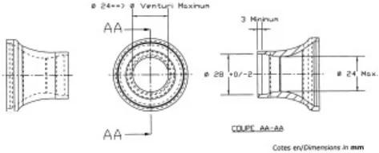<figcaption>図１（２４mmキャブレター寸法図）</figcaption></figure>
<p>１）ベンチュリー直径　最大２４mm。</p>
<p>２）ダウンストリーム直径　２８mm（さらに公差は第３章１７条による）。</p>
<p>図上の寸法１）は、最小値に許容差が加わったものである。低い測定値のキャブレターの取り付けも可能である。</p>
<h3 id="第-章-フォーミュラ-特別規定"><span class="pagemark" id="p32">P.32</span>第５章　フォーミュラＣ特別規定</h3>
<h5 id="第-条-フォーミュラ">第３８条　フォーミュラＣ－２　（ＦＣ－２）</h5>
<p>本規則第２章第２９条の規定に基づき、ＪＡＦまたはＣＩＫ－ＦＩＡによって公認（登録）されたエンジンを搭載する</p>
<p>第２種カートコース専用競技車両。</p>
<h5 id="エンジン-2">１．エンジン：</h5>
<p>下記の制限に従ってＪＡＦまたはＣＩＫ－ＦＩＡに公認（登録）された空冷または水冷式の最大気筒容積が１２５ccの単気筒エンジンとし、エンジンの改造は第２章第２９条５．に従うこと。</p>
<p>１）すべてのインジェクション方式は禁止される。</p>
<p>２）キャブレター１個。機種および改造は自由。</p>
<p>３）すべての電動ポンプの使用は禁止する。</p>
<p>４）最低３速から最高６速までのギヤボックス。機種および改造は自由。</p>
<p>５）すべてのターボチャージャー、またはスーパーチャージャーは禁止される。</p>
<p>６）水冷エンジンについては、本規則第２章第２０条３.による。</p>
<p>７）バッテリーについては、本規則第２章第３２条による。なお、水冷エンジンに限り、ウォーターポンプの電源としてもバッテリーを使用することができる。</p>
<h5 id="キャッチタンク">２．キャッチタンク：</h5>
<p>１）フロート付キャブレターについては、容量５００cc以上のキャッチタンク装着を義務付ける。ただし、オーバーフロー装着が付加されていないキャブレターについては、キャッチタンクは不要である。</p>
<p>２）ミッションケース、ラジエターには充分な容量のあるキャッチタンクの装着を義務付ける。</p>
<h5 id="サイドボックス">３．サイドボックス：</h5>
<p>１）本規則第２章第９条に準拠するとともに、最小２ヶ所で強固に固定し充分な強度を有するアンダーパネル又はサブステーによる補強を義務付ける。</p>
<p>２）サイドボックスの外側面より５０mm以上タイヤ（ホイールを含む）外側面が飛び出す構造であってはならない。</p>
<h5 id="フロントフェアリング">４．フロントフェアリング：</h5>
<p>１）取り付けは２ヶ所以上とし、容易に脱落する構造であってはならない。</p>
<p>２）フロントフェアリングの最大幅より片側で５０mm以上フロントタイヤ（ホイールを含む）の外側面が飛び出す構造であってはならない。</p>
<h5 id="リアバンパー">５．リアバンパー：</h5>
<p>リアバンパーの最大幅より片側で５０mm以上リアタイヤ（ホイールを含む）の外側面が飛び出す構造であってはならない。</p>
<h5 id="アンダーパネル-ステー">６．アンダーパネル、ステー：</h5>
<p>本規則第２章第８条による。</p>
<h5 id="バックミラー">７．バックミラー：</h5>
<p>後方左右が確認できるミラーの装着を義務付ける。</p>
<h5 id="消音器">８．消音器：</h5>
<p>本規定第２章第２１条に定める吸気消音器の装着は免除される。排気装置の形状は自由。</p>
<h5 id="シャシー-3">９．シャシー：</h5>
<p>本規則第２章第５条による。</p>
<h5 id="タイヤ">１０．タイヤ：</h5>
<p>本規則第２章第２６条に準拠したものとし、リムの直径は最大６インチまで認められる。</p>
<h5 id="ブレーキ">１１．ブレーキ：</h5>
<p>４輪同時に作動する前後独立した作動系統の足踏み式ディスク型ブレーキを備えなければならず、系統のひとつに漏れ、もしくは欠陥が生じた場合でも、他の系統により前輪または後輪が制動するものであること。</p>
<h5 id="最低重量-kg-5">１２．最低重量：１６５kg。</h5>
<h5 id="第-条-フォーミュラ-2">第３９条　フォーミュラＣ　（ＦＣ）</h5>
<h5 id="空冷または水冷式の単気筒エンジン">１．空冷または水冷式の単気筒エンジン。</h5>
<p>最大気筒容積：１２５cc（下記の制限に従ってＪＡＦに登録されたもの）。</p>
<p>制限：</p>
<p><span class="pagemark" id="p33">P.33</span>１）すべてのインジェクション方式は禁止される。</p>
<p>２）キャブレター１個。</p>
<p>３）最低３速から最高６速までのギヤボックス。</p>
<p>４）すべてのターボチャージャー、またはスーパーチャージャーは禁止される。</p>
<p>５）最低重量：１６５kg。</p>
<h5 id="エンジンの改造-第-章第-条-に従うこと-2">２．エンジンの改造：第２章第２９条５．に従うこと。</h5>
<h3 id="第-章-フォーミュラスーパー特別規定"><span class="pagemark" id="p34">P.34</span>第６章　フォーミュラスーパー特別規定</h3>
<h5 id="第-条-フォーミュラスーパー">第４０条　フォーミュラスーパーＭｉｎｉ　（ＦＳ－Ｍｉｎｉ）</h5>
<p>１．下記に従ってＪＡＦまたはＣＩＫ－ＦＩＡに公認（登録）されたエンジン。</p>
<p>１）ワンメイクエンジンとする。</p>
<p>２）空冷または水冷の２ストロークエンジン。</p>
<p>３）最大気筒容積:６０cc。</p>
<p>４）点火装置:自由。</p>
<p>５）パワーバルブ:自由。</p>
<p>６）キャブレター:自由、ただしインジェクションは禁止。</p>
<p>７）過給機は禁止。</p>
<p>８）始動方式:自由。</p>
<p>９）クラッチ:自由。</p>
<p>１０）吸気消音器:義務付けられる、機構は自由。</p>
<h5 id="第-条-フォーミュラスーパー-2">第４１条　フォーミュラスーパー１００（ＦＳ－１００）</h5>
<p>１．下記に従ってＪＡＦまたはＣＩＫ－ＦＩＡに公認（登録）されたエンジン。</p>
<p>１）ワンメイクエンジンとする。</p>
<p>２）空冷または水冷の２ストロークエンジン。</p>
<p>３）最大気筒容積:１００cc。</p>
<p>４）点火装置:自由。</p>
<p>５）パワーバルブ:自由。</p>
<p>６）キャブレター:自由、ただしインジェクションは禁止。</p>
<p>７）過給機は禁止。</p>
<p>８）始動方式:自由。</p>
<p>９）クラッチ:自由。</p>
<p>１０）吸気消音器:義務付けられる、機構は自由。</p>
<h5 id="第-条-フォーミュラスーパー-3">第４２条　フォーミュラスーパー１２５Ｍｉｎｉ　（ＦＳ－１２５Ｍｉｎｉ）</h5>
<p>１．下記に従ってＪＡＦまたはＣＩＫ－ＦＩＡに公認（登録）されたエンジン。</p>
<p>１）ワンメイクエンジンとする。</p>
<p>２）空冷または水冷の２ストロークエンジン。</p>
<p>３）最大気筒容積：１２５cc。</p>
<p>４）点火装置：自由。</p>
<p>５）パワーバルブ：自由。</p>
<p>６）キャブレター：自由、ただしインジェクションは禁止。</p>
<p>７）リストリクター：義務付けられる。</p>
<p>８）過給器は禁止。</p>
<p>９）始動方式：自由。</p>
<p>１０）クラッチ：自由。</p>
<p>１１）吸気消音器：義務付けられる、機構は自由。</p>
<p>１２）パワーウェイトレシオ数値（ドライバー重量を含む）：ジュニアカデット部門：８.０㎏/psから１３.０㎏/ps</p>
<h5 id="第-条-フォーミュラスーパー-4">第４３条　フォーミュラスーパー１２５Ｊｕｎｉｏｒ　（ＦＳ－１２５Ｊｕｎｉｏｒ）</h5>
<p>１．下記に従ってＪＡＦまたはＣＩＫ－ＦＩＡに公認（登録）されたエンジン。</p>
<p>１）ワンメイクエンジンとする。</p>
<p>２）空冷または水冷の2ストロークエンジン。</p>
<p>３）最大気筒容積：125cc。</p>
<p>４）点火装置：自由。</p>
<p>５）パワーバルブ：自由。</p>
<p>６）キャブレター：自由、ただしインジェクションは禁止。</p>
<p>７）リストリクター：義務付けられる。</p>
<p><span class="pagemark" id="p35">P.35</span>８）過給器は禁止。</p>
<p>９）始動方式：自由。</p>
<p>１０）クラッチ：自由。</p>
<p>１１）吸気消音器：義務付けられる、機構は自由。</p>
<p>１２）パワーウェイトレシオ数値（ドライバー重量を含む）：ジュニア部門：４.０㎏/psから１１.０㎏/ps</p>
<h5 id="第-条-フォーミュラスーパー-5">第４４条　フォーミュラスーパー１２５　（ＦＳ－１２５）</h5>
<p>１．下記に従ってＪＡＦまたはＣＩＫ－ＦＩＡに公認（登録）されたエンジン。</p>
<p>１）ワンメイクエンジンとする。</p>
<p>２）空冷または水冷の2ストロークエンジン。</p>
<p>３）最大気筒容積：125cc。</p>
<p>４）点火装置：自由。</p>
<p>５）パワーバルブ：自由。</p>
<p>６）キャブレター：自由、ただしインジェクションは禁止。</p>
<p>７）リストリクター：自由。</p>
<p>８）過給器は禁止。</p>
<p>９）始動方式：自由。</p>
<p>１０）クラッチ：自由。</p>
<p>１１）吸気消音器：義務付けられる、機構は自由。</p>
<h5 id="第-条-フォーミュラスーパー-6">第４５条　フォーミュラスーパーＫＺ１２５　（ＦＳ－ＫＺ１２５）</h5>
<p>１．下記に従ってＪＡＦまたはＣＩＫ－ＦＩＡに公認（登録）されたエンジン。</p>
<p>１）ワンメイクエンジンとする。</p>
<p>２）空冷または水冷の２ストロークエンジン。</p>
<p>３）最大排気量:１２５cc。</p>
<p>４）点火装置:自由。</p>
<p>５）キャブレター:自由、ただしインジェクションは禁止。</p>
<p>６）過給機は禁止。</p>
<p>７）始動方式:自由。</p>
<p>８）最低2速から最高６速までのギヤボックス。</p>
<p>９）吸気消音器：義務付けられる、機構は自由。</p>
<h5 id="第-条-フォーミュラスーパー-7">第４６条　フォーミュラスーパーＫＺ１７５　（ＦＳ－ＫＺ１７５）</h5>
<p>１．下記に従ってＪＡＦまたはＣＩＫ－ＦＩＡに公認（登録）されたエンジン。</p>
<p>１）ワンメイクエンジンとする。</p>
<p>２）空冷または水冷の２ストロークエンジン。</p>
<p>３）最大排気量:１７５cc。</p>
<p>４）点火装置:自由。</p>
<p>５）パワーバルブ:自由。</p>
<p>５）キャブレター:自由、ただしインジェクションは禁止。</p>
<p>６）過給機は禁止。</p>
<p>７）始動方式:自由。</p>
<p>８）最低２速から最高6速までのギヤボックス。</p>
<p>９）吸気消音器：義務付けられる、機構は自由。</p>
<h5 id="第-条-フォーミュラスーパー-8"><span class="pagemark" id="p36">P.36</span>第４７条　フォーミュラスーパー４　（ＦＳ－４）</h5>
<p>１．下記に従ってＪＡＦまたはＣＩＫ－ＦＩＡに登録されたワンメイクエンジン。</p>
<p>１）空冷または水冷の４ストロークエンジン。</p>
<p>２）最大気筒容積：２８０cc。</p>
<p>３）過給器は禁止。</p>
<p>４）全てのインジェクション方式は禁止される。</p>
<p>５）始動方式：自由。</p>
<p>６）クラッチ：義務付けられる。機構は自由。</p>
<p>７）吸気消音器：義務付けられる。機構は自由。</p>
<p>２．タイヤ：銘柄は自由。ただし、オーガナイザーが指定した単一製造者の銘柄のタイヤを使用しなければならない。</p>
<h5 id="重量-オーガナイザーの申請に基づき-で定める">３．重量：オーガナイザーの申請に基づき、ＪＡＦで定める。</h5>
<h3 id="第-章-特別規定"><span class="pagemark" id="p37">P.37</span>第７章　ＯＫ特別規定</h3>
<h5 id="第-条">第４８条　ＯＫ－Ｊｕｎｉｏｒ</h5>
<p>１．ダイレクト・ドライブ・シングル・シリンダー・２ストローク・レシプロケイティング・エンジンで、ＣＩＫ－Ｆ ＩＡによって公認されたもの。公認エンジンのいかなる改造も、技術規定９．１０．２（＊）に基づき認められる。</p>
<h5 id="シリンダーの最大容積-cc">２．シリンダーの最大容積：１２５cc。</h5>
<p>３．水冷（クランクケース、シリンダー、シリンダーヘッド）は１回路のみとする。</p>
<p>４．冷却装置は、単一回路の１つの自由なラジエターに制限され、いかなる他の組み合わせも除外される。サーモスタットの正常な機能のために内部回路を付加することは認められる。</p>
<p>５．パワーバルブは許可せず：代わりに機械加工を伴わないシリンダー内部の公認され固定されたブランキングカバーまたはシリンダー内部のハウジング。</p>
<h5 id="過給は禁止する">６．過給は禁止する</h5>
<p>７．燃焼室の最小容積は１２ccとし、付則No.２による測定方法とする。</p>
<p>８．スパーク・プラグ：銘柄は自由（量産品で厳密にオリジナルのままとする）。シリンダーヘッド上に締め込まれたスパーク・プラグのバレル（電極は含まない）は、燃焼室ドームの上部を超えてはならない。</p>
<p>９．技術規則付則３Ａの方法に従い、ライナーのレベルで測定したとき、排気ポート上の排気角度は最大１７０度を限度とする。</p>
<p>１０．デコンプレッションバルブが義務付けられる。それは、シリンダーヘッド頂部に装着されなければならない。</p>
<p>１１．スパーク・プラグハウジングのねじ山の寸法－長さ：１８．５mm；、ピッチ：M１４×１．２５</p>
<p>１２．最大１４,０００rpmの指定リミッター付き公認点火装置。</p>
<p>１３．最大直径２０mmの２本の調整用スクリューを備える公認バタフライタイプキャブレターで、公認書上の吸気ダクトのすべての寸法およびは形状は厳密にオリジナルのままでなければならない。吸気ダクトの形状を検査するために製造者によって預託された工具に適合していなければならない。</p>
<p>その他すべての、キャブレター本体内部または外部の、寸法のない穴やミリ単位の溝は数と位置において公認書と一致していなければならない。</p>
<p>１４．最大直径２０mmの２本の調整用スクリューを備えるＫＦ３公認バタフライタイプキャブレターを使用する場合、厳密にオリジナルのままでなければならない。疑義を避けるため、このことは、キャブレターが、合理的な製造上の公差の範囲内で、公認査察時に査察員によって封印されＣＩＫ－ＦＩＡで保管されているキャブレターとすべての面で同一でなければならないことを意味する。また、当該公認書および吸気ダクトの形状を検査するために製造者によって預託された工具に適合していなければならない。</p>
<h5 id="クラッチは認められない">１５．クラッチは認められない。</h5>
<h5 id="スターターは認められない">１６．スターターは認められない。</h5>
<h5 id="図No-23に合致した指定の単室-送-排気装置">１７．図No.23に合致した指定の単室（送）排気装置</h5>
<p>１８．ＣＩＫ－ＦＩＡ公認の２３mmのダクトを２つ備えた吸気消音器</p>
<h5 id="タイヤ-公認-インチ">１９．タイヤ：ＣＩＫ－ＦＩＡ公認５インチ。</h5>
<p>但し、オーガナイザーからの申請に基づきＪＡＦが承認した場合は、適用する技術規則に定めることにより、上記と異なるタイヤを用いることができる。</p>
<h5 id="最低総重量-kg-ドライバー含む">２０．最低総重量：１４０kg（ドライバー含む）。</h5>
<h5 id="カートの最低重量-kg-燃料を除く">２１．カートの最低重量：７０kg（燃料を除く）。</h5>
<p>＊ＣＩＫ－ＦＩＡカート技術規定９.１０.２</p>
<p>リードバルブインテークのみが認められる。</p>
<p>公認エンジンの当初の部品は、常に公認書に記載される写真、図面、材質、物理的寸法と合致し、同一でなければならない。</p>
<p>許される改造：以下を除き公認エンジンへのすべての改造が認められる。</p>
<p>ａ）エンジン内部：</p>
<p>－ストローク</p>
<p>－ボア（最大限度を超えて）</p>
<p><span class="pagemark" id="p38">P.38</span>－コネクティングロッド中心線</p>
<p>－シリンダーおよびクランクケースのトランスファーダクトおよび吸気ポートの数</p>
<p>－排気ポートおよびダクトの数</p>
<p>－特別規定に基づく制約事項</p>
<p>－燃料に加えられる潤滑剤の量は４％に制限される。</p>
<p>ｂ）エンジン外部：</p>
<p>－キャブレターの数（公認されたキャブレターの使用が義務付けられることによる）</p>
<p>－搭載エンジンの外観。</p>
<p>以下はエンジン外観の改造とみなされない：</p>
<p>パーツの色の変更</p>
<p>冷却コネクションのトリミングおよび固定部の変更</p>
<p>（キャブレター・イグニッション・排気装置、クラッチあるいはエンジンそれ自体の固定を含む）</p>
<p>ただし、それらの公認された位置が変更されていないこと。</p>
<h5 id="第-条-OK">第４９条　OK</h5>
<p>１．ダイレクト・ドライブ・シングル・シリンダー・２ストローク・レシプロケイティング・エンジンで、ＣＩＫ－Ｆ ＩＡによって公認されたもの。</p>
<p>また、ＣＩＫ－ＦＩＡ公認期間が満了した後、さらに２年間はＪＡＦ公認の国内格式以下の競技会で使用することが認められる。公認エンジンのいかなる改造も、技術規定９.１０.２（＊）に基づき認められる。</p>
<p>２．水冷（クランクケース、シリンダー、シリンダーヘッド）は１回路のみとする。</p>
<p>３．冷却は、単一回路の１つの自由なラジエターに制限され、いかなる他の組み合わせも除外される。サーモスタットの正常な機能のために内部回路を付加することは認められる。</p>
<p>４．図No.２２に合致し、エンジンとともに公認された特定の単一型パワーバルブ。</p>
<h5 id="過給は禁止する-2">５．過給は禁止する。</h5>
<p>６．燃焼室の最小容積は９ccとし、付則No.２による測定方法とする。</p>
<p>７．スパーク・プラグ：銘柄は自由（量産品で厳密に当初のままとする）。シリンダーヘッド上に締め込まれたスパーク・プラグのバレル（電極は含まない）は、燃焼室ドームの上部を超えてはならない。</p>
<p>８．排気角度は排気ポートで最大１９４°とし、その測定は技術規定付則３Ａに記載されている方法に従い、ライナーのレベルで行われる。</p>
<p>９．デコンプレッションバルブが義務付けられる。それは、シリンダーヘッド頂部に装着されなければならない。</p>
<p>１０．スパーク・プラグハウジングのねじ山の寸法－長さ：１８．５mm； ピッチ：Ｍ１４×１．２５</p>
<p>１１．最大１６,０００rpmの指定リミッター付き公認点火装置。</p>
<p>１２．最大直径２４mmの２本の調整用スクリューを備える公認バタフライタイプキャブレターで、公認書上の吸気ダクトのすべての寸法および形状は厳密にオリジナルのままでなければならない。また、吸気ダクトの形状を検査するために製造者によって預託された工具に適合していなければならない。</p>
<p>その他すべての、キャブレター本体内部または外部の、寸法のない穴やミリ単位の溝は数と位置において公認書と一致していなければならない。</p>
<p>１３．最大直径２４mmの２本の調整用スクリューを備えるＫＦ２公認バタフライタイプキャブレターを使用する場合、厳密にオリジナルのままでなければならない。疑義を避けるため、このことは、キャブレターが、合理的な製造上の公差の範囲内で、公認査察時に査察員によって封印されＣＩＫＦＩＡで保管されているキャブレターとすべての面で同一でなければならないことを意味する。また、当該公認書および吸気ダクトの形状を検査するための製造者によって預託された工具に適合していなければならない。</p>
<h5 id="クラッチは認められない-2">１４．クラッチは認められない。</h5>
<h5 id="スターターは認められない-2">１５．スターターは認められない。</h5>
<h5 id="図No-に合致し-公認された特定の単一型排気装置">１６．図No.２１に合致しＯＫ公認された特定の単一型排気装置</h5>
<p>１７．ＣＩＫ－ＦＩＡ公認の２３mmのダクトを２つ備えた吸気消音器</p>
<h5 id="タイヤ-公認-インチ-2">１８．タイヤ：ＣＩＫ－ＦＩＡ公認５インチ。</h5>
<p>但し、オーガナイザーからの申請に基づきＪＡＦが承認した場合は、適用する技術規則に定めることにより、上記と異なるタイヤを用いることができる。</p>
<h5 id="最低総重量-kg-ドライバー含む-2">１９．最低総重量：１５０kg（ドライバー含む）</h5>
<h5 id="カートの最低重量-燃料を除く-kg"><span class="pagemark" id="p39">P.39</span>２０．カートの最低重量（燃料を除く）：７０kg</h5>
<h3 id="第-章-特別規定-2"><span class="pagemark" id="p40">P.40</span>第８章　ＫＺ特別規定</h3>
<h5 id="第-条-および">第５０条　ＫＺ２およびＫＺ</h5>
<p>リードバルブインテークのみが認められる。</p>
<p>公認エンジンの当初の部品は、常に公認書に記載される写真、図面、材質、物理的寸法と合致し、同一でなければならない。</p>
<p>許される改造：以下を除き公認エンジンへのすべての改造が認められる。</p>
<p>ａ）エンジン内部：</p>
<p>－ストローク</p>
<p>－ボア（最大限度を超えて）</p>
<p>－コネクティングロッド中心線</p>
<p>－シリンダーおよびクランクケースのトランスファーダクトおよび吸気ポートの数</p>
<p>－排気ポートおよびダクトの数</p>
<p>－特別規定に基づく制限</p>
<p>ｂ）エンジン外部：</p>
<p>－キャブレターの数およびチョークの径</p>
<p>－搭載エンジンの外観</p>
<p>以下はエンジン外観の改造とみなされない：</p>
<p>パーツ色の変更</p>
<p>冷却コネクションのトリミングおよび固定部の変更</p>
<p>（キャブレター・イグニッション・排気装置、クラッチあるいはエンジンそれ自体の固定）</p>
<p>ただし、それらの公認された位置が変更されていないこと。</p>
<p>１．パワーユニット：エンジンをギアボックスから分離することができてはならない。エンジンケースは２つのみの部分で構成されなければならない（垂直あるいは水平方向）。クランクシャフトベアリングのための挿入物および固定要素（ドリルで開けられた穴、合い釘）のみ認められる。</p>
<p>２．ＣＩＫ－ＦＩＡによって公認された、１回路のみの、リードバルブ吸気方式の水冷単気筒エンジン。</p>
<h5 id="最大気筒容積-cc-3">３．最大気筒容積：１２５cc</h5>
<p>４．公認書式（寸法および図面）に従うリードバルブボックス。リードバルブボックスカバー：自由。</p>
<p>５．最大直径３０mm円形のベンチュリタイプディフューザーの付いたアルミニウム製キャブレター。ＣＩＫ－ＦＩＡ選手権、カップおよびトロフィーについては、単一のキャブレター供給業者が、入札により指名される。</p>
<p>キャブレターは厳密にオリジナルのままでなければならない。許される唯一のセッティングは、スライド、ニードル、フローター、フロートチャンバー、ニードルシャフト（スプレー）、ジェット、ニードルキットに対してであり、すべての置き換えられた部品はデロルト社のものであることを条件とする。一体化されている燃料フィルターおよびプレートは取り外しても良いが、そのままとする場合はオリジナルのままでなければならない。</p>
<p>６．ギアボックス：ＣＩＫ－ＦＩＡによって公認される（プライマリトルクを含め）。レシオ最少３速、最大６速。最小直径２００mmの目盛り付きディスク、あるいはデジタルコーダーを使用してレシオが検査される。公認書式に記載される十進角は、１０分の１の角度で記載され、分の単位で記載されてはならない。ギアボックスの公認のため、製造者（含複数）およびモデル、型式が公認書式に記載されていなければならない。</p>
<p>７．ＫＺ２において：サーボシステムの無い、手動で完全に機械式のギアボックス制御。点火カットを行う一切のシステムは禁止される。</p>
<h5 id="において-手動あるいは電子機械式ギアボックス制御">８．ＫＺにおいて：手動あるいは電子機械式ギアボックス制御。</h5>
<p>９．排気の総開口角度は、公認書式に記載された値にかかわらず、最大１９９°（最小直径２００mmの目盛り付き円板、あるいはデジタル装置を使用して読み取られる）。</p>
<p>１０．燃焼室の容積：最小１１cc。燃焼室の容積は、１０分の１立方センチメートルまで精密な目盛り付のＡクラス実験用ビュレットを使用して計測される。この検査に使用される混合物は、無鉛ガソリンと２ストロークオイルを１対１の割合で混合したもの。燃焼室は、付則No.１ａに記載されている方法で満たされる。</p>
<p>１１．スパークプラグ：銘柄は自由（大量生産品で、厳密にオリジナルであること）。シリンダーヘッド上に締め込まれたスパークプラグ（電極は含まない）の本体は、燃焼室ドームの上部を越えて伸張してはならない。</p>
<p>１２．スパークプラグハウジングのねじ山の寸法は：長さ１８.５mm；ピッチM１４×１.２５。</p>
<p><span class="pagemark" id="p41">P.41</span>１３．識別：３０mm×２０mmの機械加工された平らな場所に、特定する識別ステッカーを取り付ける。</p>
<p>－シリンダーの前</p>
<p>－ハーフサンプ用のリードボックスハウジングの上部。</p>
<p>１４．点火ローターに重りを追加することが認められる。追加には少なくとも２本のスクリューを使用し、公認されたローターに一切の変更がないこと。</p>
<p>１５．排気：公認され、最低０.７５mmの金属肉厚のある磁気反応性鋼材製であること。</p>
<p>１６．排気消音器：公認され、使用義務。図No.２０に従った排気と消音器の取り付け。</p>
<h5 id="タイヤ-インチ">１７．タイヤ：５インチ</h5>
<p>－ＫＺ：公認されたプライムタイプ</p>
<p>－ＫＺ２：公認されたプライムまたはオプションタイプ</p>
<h5 id="最小重量">１８．最小重量：</h5>
<p>－ＫＺおよびＫＺ２、第１種および第２種サーキット：１７５kg。</p>
<p>１９．第２種サーキット用車体：車体の仕様はスーパーカートと部分的にあるいは完全に同一であることができる。</p>
<h3 id="第9章-SuperKart特別規定"><span class="pagemark" id="p42">P.42</span>第9章　SuperKart特別規定</h3>
<h5 id="第-条-SuperKart">第５１条　SuperKart</h5>
<h5 id="に公認された水冷エンジン">１．ＣＩＫ－ＦＩＡに公認された水冷エンジン。</h5>
<h5 id="気筒数-最大">２．気筒数：最大２。</h5>
<h5 id="気筒容積-最大-cc">３．気筒容積：最大２５０cc。</h5>
<p>４．いずれも電子制御を有さない機械式のキャブレターとパワーバルブ。</p>
<p>５．点火装置：電子ユニットボックスとコイルは、ローター／スターターまたはバッテリーの電源からの電源供給１つと、点火信号をセットするクランクシャフトピックアップシグナルのみ受けるもの。</p>
<p>２つにディフェーズされたシリンダーを有するエンジンは、２つのセンサーを含む２つの異なる点火装置を搭載することができる。</p>
<p>いかなる場合も、通常の出走状態において着座した状態から変更することができないこと。</p>
<h5 id="ギヤボックス-公認書式に合致した最大-レシオ">６．ギヤボックス：公認書式に合致した最大６レシオ。</h5>
<h5 id="タイヤ-公認された-インチタイヤ">７．タイヤ：公認された６インチタイヤ。</h5>
<h5 id="最低重量">８．最低重量：</h5>
<p>①１シングルシリンダーエンジン：２０８ kg（車体を含み）、カートの最低重量：９８kg（車体・燃料を除く）。</p>
<p>②その他のエンジン：２１８kg（車体を含み）、カートの最低重量：１１３kg（車体・燃料を除く）。</p>
<h3 id="第10章-Mini特別規定"><span class="pagemark" id="p43">P.43</span>第10章　Mini特別規定</h3>
<h5 id="第-条-Mini特別規定">第５２条　Mini特別規定</h5>
<h5 id="特別規定">１．Ｍｉｎｉ特別規定</h5>
<p>１）ダイレクト・ドライブ・シングル・シリンダー・２ストローク・レシプロケイティング・エンジンで、ＣＩＫ－ ＦＩＡによって公認またはＪＡＦによって登録されたもの。公認エンジンのいかなる改造も、ＣＩＫ技術規定６．２に基づき認められる。</p>
<p>２）最大気筒容積：６０ｃｃ。</p>
<p>３）空冷（クランクケース、シリンダー、シリンダーヘッド）。</p>
<p>４）燃焼室の最小容積は４．８ｃｃとし、付則Ｎｏ．１ｄによる測定方法とする。</p>
<p>５）燃焼室とスキッシュバンドの形状は、技術図面Ｎｏ．２５のテンプレートと同一でなければならない。製造者が提供するテンプレートを使用して検証できなければならない。</p>
<p>６）スパーク・プラグハウジングのねじ山の寸法－ 長さ：１８．５ｍｍ；ピッチ：Ｍ１４×１．２５。</p>
<p>７）スパーク・プラグ：銘柄は自由（量産品で厳密に当初のままとする）。シリンダーヘッド上に締め込まれたスパーク・プラグのバレル（電極は含まない）は、燃焼室ドームの上部を超えてはならない。</p>
<p>８）吸気口の開口角度は、１４４°（＋０／－２°）に等しくなければならない。吸気ポートの幅は２６ｍｍ（＋０．１／－０．２ ｍｍ）に等しくなければならない。</p>
<p>吸気ポートの形状は、製造者により提供されたテンプレートで検証可能で、製造者によって定義されたままでなければならない。</p>
<p>９）掃気口の開口角度は最大１１７°に制限されなければならない。</p>
<p>開口角度は、＋０／－２°の公差で製造者が定義したままでなければならない。掃気口の上縁、およびその結果、下方の縁も、シリンダー軸に垂直でなければならない。</p>
<p>掃気口の幅は、＋０．４／－０．２ｍｍの公差で製造業者が示さなければならない。</p>
<p>掃気口のサイズは、製造業者が定義したままでなければならず、製造者が提供するテンプレートを使用して検証できなければならない。</p>
<p>１０）排気口の開口角度は、＋０／－２°の公差で１５６°に等しくなければならない。排気口の幅は、＋０．１／－０．２ｍｍの公差で２８．０ｍｍに等しくなければならない。排気口の形状は、製造業者が定義したままでなければならず、製造者が提供するテンプレートを使用して検証できなければならない。</p>
<p>１１）クラッチは必須である。それは、遠心式で乾式でなければならない。クラッチは、最高３，０００ｒｐｍでつながらなければならない。</p>
<p>クラッチベルと摩擦材は、穴や溝がない平らな材質でなければならない（技術図面Ｎｏ．２６に従う寸法）。</p>
<p>ピニオンは１１歯でなければならない。クラウンは自由。</p>
<p>１２）車載の電動スターターモーターが義務付けられる。これは、それ専用のバッテリーによって給電されなければならない。スタータークラウンはクラッチ側に取り付けなければならない。特殊かつ希少な素材は禁止される。</p>
<p>モーターには効果的かつ安全なストップスイッチが装備されていなければならない。</p>
<p>バッテリーはしっかりと取り付けられていなければならない（フレームに格納容器をネジでしっかりと固定すること）。バッテリーが点火に干渉することは決してあってはならない。</p>
<p>１３）最大１４，０００ｒｐｍのリミッター付き承認点火装置。</p>
<p>１４）最大ボア１８ｍｍでベンチュリタイプディフューザーのついた承認フローティングチャンバーキャブレター。それは厳密にオリジナルのままでなければならない。疑義を避けるために、これはキャブレターが合理的な製造公差の範囲内で、すべての点で承認書と同一でなければならないことを意味する。いかなる加工、圧着、研磨、材料の追加または除去も禁止される。</p>
<p>キャブレターは、キャブレター製造者が提供する「ＧＯ／ＮＯ ＧＯ」ゲージを使用して検証できなければならない。</p>
<p>１５）２２ｍｍのダクトを１つ備えた承認吸気消音器。吸気消音器をキャブレターに固定するため、非磁性材質のリングを使用することができる。この固定によって、承認されたキャブレターに影響を及ぼすことがあってはならない。</p>
<p>１６）排気装置は図Ｎｏ．２８に合致した特定の単一のタイプとする。</p>
<p>１７）リムは、アルミニウムまたはマグネシウムのみからなるワンピース構造のみ。</p>
<p>１８）タイヤ：Ｍｉｎｉ用５インチＣＩＫ－ＦＩＡ公認タイヤ、またはＪＡＦ指定タイヤ。</p>
<p><span class="pagemark" id="p44">P.44</span>１９）最低総重量：１１０ｋｇ（ドライバーを含む）。</p>
<p>２０）カートの最低重量（燃料なし）：５５ｋｇ</p>
<p>２．その他、上記第１章から第３章に加えて以下の規定が適用される。</p>
<p>１）シャシー主要部品</p>
<p>要件：</p>
<p>・リアシャフト（アクスル）は、最大外径３０ｍｍとし、すべての個所において最小４．９ｍｍの肉厚がなければならず、長さ９６０ｍｍ（＋／－１０ｍｍ）、重量２，９００ｇ（＋／－１００グラム）でなければならない。</p>
<p>２）寸法</p>
<p>技術諸元：</p>
<p>・ホイールベース：９５ｃｍ（＋／－５ｍｍ）</p>
<p>・全幅：最大１１０ｃｍ</p>
<p>３）バンパー</p>
<p>フロントバンパー：</p>
<p>①フロントバンパーは少なくとも２つの鋼鉄製の要素で構成されていなければならない。</p>
<p>②最小直径１６ｍｍの鋼鉄製の上部バー（２つの角は、一定の曲率半径を有していなければならない）と最小直径２０ｍｍの鋼鉄製の下部バー（２つの角は、一定の曲率半径を有していなければならない）。この２本のバーは互いに接続されていること。</p>
<p>③上記の２つの要素は、ペダルの取り付け部から独立していなければならない。</p>
<p>④フロントバンパーは、義務付けられているフロントフェアリングの取り付けができなければならない。</p>
<p>⑤フロントバンパーはシャシーフレームに４点で取り付けなければならない。</p>
<p>⑥フロントオーバーハング：最小２８０ｍｍ。</p>
<p>⑦下部バーの幅：直線部の長さはカートの前後方向（縦）軸に対し最小２７０ｍｍ、最大３１５ｍｍ。</p>
<p>⑧下部バーのアタッチメントは、（水平および垂直の両方の面で）シャシーの軸に対して平行でなければならず、バンパーを５０ｍｍ取り付けること（シャシーフレームへの取り付け装置）ができなければならない；アタッチメントは３９０ｍｍ離し、地面から９０＋／－２０ｍｍの高さでカートの前後方向（縦）軸の中心に取り付けなければならない。</p>
<p>⑨上部バーの幅：直線部の長さはカートの前後方向（縦）軸に対し最小３００ｍｍ、最大３９５ｍｍ。</p>
<p>⑩上部バーの高さ：地面から最小１８０ｍｍ、最大２０５ｍｍ。</p>
<p>⑪上部バーのアタッチメントは、５００ｍｍ離し、カートの前後方向（縦）軸の中心に取り付けなければならない。</p>
<p>⑫上部バーと下部バーの固定部は、シャシーフレームに溶接しなければならない。</p>
<p>リアホイールプロテクション：</p>
<p>①前後のプロテクションとリアホイール表面との間の隙間：最小１５ｍｍ、最大５０ｍｍ。</p>
<p>②最小幅：１，０４０ｍｍ。</p>
<p>③最大幅：常に、いかなる状況下でも、後部全幅の最大幅。</p>
<p>④地上高：リアホイールの延長線とシャシーの中心線の内側に位置する、最小幅１８０ｍｍの最低３ヶ所のスペースの中で、最小２５ｍｍ、最大６０ｍｍ。</p>
<p>⑤リアオーバーハング：最大３７０ｍｍ。</p>
<p>すべての条件において、リアプロテクションは、いかなるときもリアホイールの外面を越えて突出してはならない。</p>
<p>サイドバンパー：</p>
<p>①上部バーと下部バーによって構成されていなければならない。</p>
<p>②必須のサイドボディワークのアタッチメントの取り付けが可能でなければならない。</p>
<p>③直径２０ｍｍを有していなければならない。</p>
<p>④シャシーフレームに２点で取り付けなければならない。</p>
<p>⑤これらの２つのアタッチメントは、地面に平行で、シャシーの軸に垂直でなければならない；それらは最小５０ ｍｍのバンパーの取付け（シャシーフレームへの取り付け装置）ができなければならず、互いに３８０ｍｍ離れていなければならない。</p>
<p>⑥バーの最小直線部長：下部バーについては２８０ｍｍ</p>
<p>上部バーについては１８０ｍｍ。</p>
<p><span class="pagemark" id="p45">P.45</span>⑦上部バーの高さ：地面から最低１６０ｍｍ。</p>
<p>⑧外側の幅はカートの前後方向（縦）軸との関係でなければならない：下部バーの場合は３８０＋／－２０ｍｍ</p>
<p>上部バーの場合は３８０＋１００／－２０ｍｍ</p>
<p>４）ボディワーク</p>
<p>サイドボディワーク：</p>
<p>①ホイール（フロントホイールは直進位置にある）の２つの外縁を通る垂直面内側から３０ｍｍを超えて配置することはできない。</p>
<p>②地上高は最小２５ｍｍ、最大６０ｍｍなければならない。</p>
<p>③サイドボディワークの前部とフロントホイールの間の隙間：最大１３０ｍｍ。</p>
<p>④サイドボディワークの後部とリアホイールの間の隙間：最大６０ｍｍ。</p>
<p>フロントフェアリング：</p>
<p>①最小幅は８５０ｍｍで、最大幅はフロントホイール／車軸ユニットの外幅である。</p>
<p>②フロントホイールとフェアリングの後部との間の最大間隔：１６０ｍｍ。</p>
<p>③フロントオーバーハング：最大６３０ｍｍ。</p>
<p>フロントパネル：</p>
<p>①幅は最小２００ｍｍ、最大３００ｍｍである。</p>
<p>座席：</p>
<p>ＦＩＡは、Ｍｉｎｉカテゴリーにカート高位座席（ハイシート）の使用を推奨する。ＦＩＡは、カート高位座席のための新しい基準を作成し、ＦＩＡのウェブサイトに、高位座席をテストするために認可された研究所のリストおよび承認された高位座席の技術的なリストと共に掲載する。</p>
<p>５）エンジン</p>
<p>全般：</p>
<p>ＯＫ、ＯＫ－Ｊｕｎｉｏｒ、ＫＺ２、ＫＺ、およびＭｉｎｉエンジンは、製造者のカタログに記載されていなければならず、ＣＩＫ－ＦＩＡによって確立されたモデルからの「公認書式（Homologation Form）」と呼ばれる記述書式の対象とならなければならない。この公認書式は、ＡＳＮおよびＣＩＫ－ＦＩＡによって証印が押され、署名されるものとする（公認規則参照）。</p>
<p>イグニッション：</p>
<p>ＳｕｐｅｒｋａｒｔとＭｉｎｉを除くすべてのカテゴリーで、使用される点火システムはＣＩＫ－ＦＩＡにより公認されなければならない。</p>
<p>ＯＫ－Ｊｕｎｉｏｒ、ＯＫおよびＭｉｎｉのカテゴリーの場合、点火はデジタル方式で非プログラマブル式の、インテグレーテッド・レブリミッターを伴うものでなければならない。その操作のためにバッテリーを要してはならない。</p>
<p>６）吸気消音装置</p>
<p>ＳｕｐｅｒｋａｒｔとＭｉｎｉ以外のすべてのカテゴリーでは、ＣＩＫ－ＦＩＡによって公認された吸気消音装置が義務付けられる。</p>
<p>Ｍｉｎｉカテゴリーの場合：ダクト２３ｍｍ＋／－１ｍｍ、円錐形。可変容積のエアボックスは禁止される。</p>
<p>７）排気</p>
<p>８）ホイール：リムおよびタイヤ</p>
<p>５インチタイヤ：</p>
<p>フロントホイールの最大外径は２６０ｍｍ、リアホイールの外径は最大２９０ｍｍとする。</p>
<p>リアホイールの最大幅は１５０ｍｍで、フロントホイールの最大幅は１２０ｍｍとする。</p>
<p>９）公認、識別および検査</p>
<p>検査：検査のために、以下の公差が許容される：</p>
<p>－コネクティングロッドセンターライン：</p>
<p>グループ３：＋／－０．１ｍｍ</p>
<p>－ピストンストローク：</p>
<p>グループ３： エンジンを組付けた状態：＋／－０．１ｍｍ</p>
<p>－点火装置、エンジン</p>
<p>（ＯＫ－ｊｕｎｉｏｒ、ＯＫおよびＭｉｎｉのエンジンを除く）：±２°</p>
<p><span class="pagemark" id="p46">P.46</span>－ＯＫ、ＯＫ－ｊｕｎｉｏｒ、Ｍｉｎｉエンジン</p>
<p>（ピストン、クランクシャフト＆コンロッド、リードボックス、バランスシャフト）：</p>
<p>寸法：＜２５ｍｍ ２５－６０ｍｍ ６０－１００ｍｍ ＞１００ｍｍ</p>
<p>公差：＋／－０．５ｍｍ ＋／－０．８ｍｍ ＋／－１ｍｍ</p>
<p>＋／－１．５ｍｍ</p>
<p>３．ＣＩＫ－ＦＩＡカート技術規定第６条グループ３（Ｍｉｎｉ）のカート：</p>
<p>一般規則</p>
<p>１）シャシー</p>
<p>すべてのグループ３のシャシーは公認されなければならない。</p>
<p>これらは、製造者のカタログおよび「公認書式（Homologation Form）」と呼ばれる記述書式に記載され、ＣＩ Ｋ－ＦＩＡによって作成されたモデルに従い、ＡＳＮによって押印される。</p>
<p>シャシーは、３年ごとに３年の有効期間で公認される。</p>
<p>公認されたシャシーは、ＦＰ－ＪｒＣａｄｅｔｓ用にも使用することができる。</p>
<p>フレームは以下の特性に従っていなければならない：</p>
<p>パイプの数：６；アンチロールバーを使用することは認められない。</p>
<p>フレームパイプのサイズ：磁性鋼材製の２８×２ｍｍ（＋／－０．１ｍｍ）。</p>
<p>リアアクスルベアリング：最大２。</p>
<p>座席支持部：４、固定され、フレームに溶接される、磁性鋼材製。</p>
<p>シャシーフレームの改造（例えば、パイプの位置）は、公認書式に記載されている寸法を遵守している場合にのみ、また曲線部が公認の際にあったパイプ上の位置でのみ移動している場合に、認められる。</p>
<p>２）エンジン</p>
<p>全てのグループ３のエンジンは公認されなければならない。</p>
<p>これらは、製造者のカタログおよび「認定書式（Homologation Form）」と呼ばれる記述書式に記載され、ＣＩ Ｋ－ＦＩＡによって作成されたモデルに従い、ＡＳＮによって押印される。</p>
<p>エンジンは、３年ごとに３年の有効期間で公認される。</p>
<p>ピストンポート吸気のみが許可される。</p>
<p>エンジンとその構成部品の識別は、公認書式に記載の技術的な説明（商標、写真、三次元図面など）により行うことができる。</p>
<p>公認されたエンジンの当初の部品は元のままでなければならず、製造者のマーキング、写真、図面、材料および公認書式に記載の寸法によって識別可能でなければならない。</p>
<p>エンジン製造者は、エンジン部品のコントロールを可能とするゲージおよびテンプレートを供給しなければならない。</p>
<p>以下のゲージとテンプレートが要求される。</p>
<p>－吸気口、掃気口および排気口のサイズをチェックするためのテンプレート。</p>
<p>－シリンダーの基部の形状およびサイズの変化すべてをチェックするためのテンプレート。</p>
<p>－燃焼室とスキッシュバンドの形状をチェックするためのテンプレート。</p>
<p>－ピストンの形状をチェックするためのテンプレート。</p>
<p>－シリンダーの軸からキャブレター支持面の最短距離をチェックするためのテンプレート。</p>
<p>許可される改造：ヘリコイル方式。</p>
<p>材料を追加することは禁じられる。シリンダケーシング、スリーブおよび／またはピストンになされる、ピストンの下縁部が吸気口を閉鎖したときに、シリンダーを通っておよび／またはベースに向かって混合気が流れるようにする一切の作業は、禁止される。</p>
<p>規定された点火器の角度を変更したり、吸気サイクルを直接的または間接的に増加させることができる、あるいは放出できる一切の装置または方策は禁止される。</p>
<p>３）イグニッション</p>
<p>承認点火システムは、スターターモーターシステム（バッテリー）に一切接続することなく、独立していなければならない。</p>
<p>スターターの固定システムと回転子を取り付けるための直径は、すべてに固有である。技術図面Ｎｏ．２７を参照。システム（固定子と回転子）の寸法とその特性は、承認書式に示さなければならない。</p>
<p><span class="pagemark" id="p47">P.47</span>点火システムの供給は、単一の供給者により行われること。</p>
<p>４）キャブレター</p>
<p>承認キャブレターは、ベンチュリタイプのディフューザーと最大ボア１８ｍｍのフローティングチャンバーキャブレターでなければならない。</p>
<p>キャブレターの供給は、単一の供給者により行われること。単一の供給には、キャブレター、燃料ポンプ、さらにジェット、ニードル、およびノズルの定義されたセットを含むこと。</p>
<p>５）吸気消音器</p>
<p>承認吸気消音器は、１つのダクトのみで構成されていなければならない。このダクトは内径２２ｍｍ＋／－１ｍｍの円錐形でなければならない。ダクトを含む吸気消音器の内部容積は、１，８００ｃｃ未満でなければならない。吸気消音器は製造者が定義した通りのままでなければならない。吸気消音器の供給は、単一の供給者により行われること。</p>
<h3 id="第-章-カート特別規定"><span class="pagemark" id="p48">P.48</span>第１１章　ＥＶカート特別規定</h3>
<h5 id="第-条-カート">第５３条　ＥＶカート（ＥＶ－Ｍｉｎｉ、ＥＶ－Ｊｕｎｉｏｒ、ＥＶ）</h5>
<p>特別規定</p>
<h5 id="動力源">１．動力源</h5>
<p>１）コントローラー・バッテリー・電動モーターはＪＡＦに登録されたもの。</p>
<p>２）バッテリーには安全性を確保できる効果的かつ安全なカバーが装備されていなければならない。</p>
<p>３）回生装置（回生機能）の装着は認められる。</p>
<p>４）冷却ダクト、冷却システム（空冷、水冷、油冷等）は装着が認められる。</p>
<h5 id="シャシー-4">２．シャシー</h5>
<p>ＪＡＦ国内カート競技車両規則に合致する第１種競技車両で電動モーター、バッテリー、冷却ダクト、システムを搭載するための最小限の改造は認められる。ただし４輪同時に作動する前後独立した作動系統の足踏み式ブレーキの装着は認められる。系統の一つに漏れ、もしくは欠陥が生じた場合でも、他の系統により前輪または後輪が制動するものであること。もしくは、リブレ車両（ワンメイクに限る）とする。</p>
<h5 id="タイヤ-2">３．タイヤ</h5>
<p>銘柄は自由。ただし、オーガナイザーが指定した単一製造者銘柄のタイヤを使用しなければならない。</p>
<h5 id="電動モーター">４．電動モーター</h5>
<p>電気エネルギーを機械的な駆動力に変換するもの。</p>
<h5 id="重量-2">５．重量</h5>
<p>オーガナイザーの申請に基づき、ＪＡＦで定める。</p>
<h5 id="安全規定">６．安全規定</h5>
<p>制御等安全に関する規定は国内当局（電気用品安全法等）の規定を遵守していなければならない。また、ドライバーおよびその他の参加者が危険に陥ることがないように設計され、維持されなくてはならない。</p>
<h5 id="パワーウエイトレシオ数値-ドライバー重量含む">７．パワーウエイトレシオ数値（ドライバー重量含む）</h5>
<p>ＥＶ－Ｍｉｎｉ部門：１２kg/kwから１７kg/kw以内。</p>
<p>ＥＶ－Ｊｕｎｉｏｒ部門：６．０kg/kwから１４．０kg/kw以内。</p>
<h3 id="第-章-その他の車両-リブレ"><span class="pagemark" id="p49">P.49</span>第１２章　その他の車両（リブレ）</h3>
<h5 id="第-条-その他の車両-リブレ-に関する規定">第５４条　「その他の車両（リブレ）」に関する規定</h5>
<p>本規則のどのグループにも属さない車両を「その他の車両（以下リブレ）」と定める。</p>
<h5 id="第-条-輪車用エンジン搭載の禁止">第５５条　４輪車用エンジン搭載の禁止</h5>
<p>第１種競技車両のみならずリブレ車両においても、通常４輪車のカテゴリーに入る車のエンジンを使用してはならない。</p>
<h5 id="第-条-リブレ車両の使用">第５６条　リブレ車両の使用</h5>
<p>リブレ車両を使用する競技の場合、格式制限付き以下の競技として行われなければならない。ただし、地方選手権規定第32条に定める、地方選手権として認定した競技車両の場合は除く。その車両については、特別規則書に定めるものとし、なおかつＪＡＦの承認を必要とする。</p>
<p>１．リブレ車両による競技の開催を申請するクラブ・団体は、リブレ車両規則草案５部とともに下記の事項を記したリブレ車両申請を組織許可申請提出締切日の少なくとも１ヶ月前までにＪＡＦへ提出しなければならない。</p>
<p>「リブレ車両申請」</p>
<p>１）申請提出日</p>
<p>２）申請提出先：ＪＡＦモータースポーツ専門部会カート部会</p>
<p>３）クラブ・団体名および代表者氏名（ＪＡＦ登録印を捺印すること）</p>
<p>４）申請内容：</p>
<p>①リブレ車両名（申請リブレ車両使用レース名）</p>
<p>②リブレ車両が参加する競技会</p>
<p>ａ　名称</p>
<p>ｂ　開催日</p>
<p>ｃ　開催場所</p>
<p>ｄ　オーガナイザー</p>
<p>③申請項目</p>
<p>ａ　申請リブレ車両規則（案）がどのような点で、当該年度ＪＡＦカート競技車両規則と異なるのか具体的に明記すること。</p>
<p>ｂ　継続申請の場合：前年度リブレ車両規則との相違点があれば明記すること。</p>
<p>④申請理由</p>
<p>当該年度ＪＡＦカート競技車両規則に適合できない理由を詳細に明記すること。</p>
<p>２．ＪＡFカート登録クラブ・団体で、その車両により競技を主催するオーガナイザーのみが申請資格を有する。</p>
<h5 id="開催される競技会ごとにリブレ車両申請が必要となる">３．開催される競技会ごとにリブレ車両申請が必要となる。</h5>
<h3 id="第-章-本規則の施行"><span class="pagemark" id="p50">P.50</span>第１３章　本規則の施行</h3>
<h5 id="第-条-本規則の施行">第５７条　本規則の施行</h5>
<p>本規則は、２０２６年１月１日より施行する。</p>
<h4 id="6年-国内カート競技規則細則・"><span class="pagemark" id="p51">P.51</span>２０２6年ＪＡＦ国内カート競技規則細則・</h4>
<h4 id="指定カートタイヤについて">指定カートタイヤについて</h4>
<p>国内カート競技の安全性、公正性および安定した供給を確保するため、指定カートタイヤの細則について下記の通り定める。</p>
<h5 id="指定カートタイヤに要求される項目">１．指定カートタイヤに要求される項目</h5>
<p>１）仕様：</p>
<p>（1）構造：バイアス（クロスプライ）タイヤとする。</p>
<p>（2）乾燥路面用溝なしタイヤ（ドライタイヤ）および雨天用溝付きタイヤ（ウェットタイヤ）の両方を供給できること。</p>
<p>ただし、晴雨兼用タイヤ（オールウェザータイヤ）を供給できる場合、この限りでない。</p>
<p>（3）ドライタイヤには周上に２箇所以上、かつ１箇所につき左右２つのトレッド肉厚測定用のディンプルを設けること。</p>
<p>（4）タイヤ寸法：国内カート競技車両規則第２６条により下記の通りとする。</p>
<p>①　外側直径……フロントタイヤ　最大28cm</p>
<p>リアタイヤ　　　最大30cm</p>
<p>②　最大幅………フロントタイヤ　13.5cm</p>
<p>リアタイヤ　　　21.5cm</p>
<p>（5）ホイール寸法：国内カート競技車両規則第２６条によりリムの直径は最大５インチとする。</p>
<p>２）性能：</p>
<p>（1）ドライタイヤについては下記の通りとする。</p>
<p>①　走行中グリップの限界を超えた場合に急激な性能変化がなく、コントローラブルであること（滑りが予知できること）。</p>
<p>②　グリップ性能が低下することなく十分な耐久性を有すること。</p>
<p>③　常温時（摂氏20度）に下記の距離の走行が可能であること。</p>
<p>ａ．ＦＳ－１２５：およそ４００km</p>
<p>ｂ．ＦＰ－Ｊｒ／ＦＳ－１２５Ｊｒ／ＦＰ－２／ＦＰ－３：およそ６００km</p>
<p>ｃ．ＦＰ－ＪｒCadets／Ｍｉｎｉ：およそ６００km</p>
<p>（2）ウェットタイヤについては下記の通りとする。</p>
<p>乾燥路面においても耐久性が維持されること（およそ25km走行可能であること）。</p>
<p>（3）オールウェザータイヤについては上記（1）と（2）の性能を満たすこと。</p>
<h5 id="指定タイヤの申請について">２．指定タイヤの申請について</h5>
<p>１）申請資格：</p>
<p>（1）国内製品については当該製品の製造者であり、かつＪＡＦ特別カート団体であること。</p>
<p>（2）外国製品については当該製品の製造者または製造者の委託を受けた「指定代理店」もしくは「輸入代理店」であり、かつＪＡＦ加盟カート団体であること。</p>
<p>２）申請方法：</p>
<p>下記要領に従い申請すること。</p>
<p>（1）申請締切日：毎年８月末日までとする。</p>
<p>（2）申請提出先：一般社団法人日本自動車連盟（ＪＡＦ）</p>
<p>（3）申請内容：</p>
<p>①　申請日</p>
<p>②　申請者名………ＪＡＦ特別カート団体またはＪＡＦ加盟カート団体名および代表者名（代表者印および有効</p>
<p>なＪＡＦ登録印を捺印すること）</p>
<p>③　型式および銘柄</p>
<p>④　適用クラス……次の３クラスの中から適用クラスを明記すること。</p>
<p>ａ．ＦＳ－１２５</p>
<p>ｂ．ＦＰ－Ｊｒ／ＦＳ－１２５Ｊｒ／ＦＰ－２／ＦＰ－３</p>
<p><span class="pagemark" id="p52">P.52</span>ｃ．ＦＰ－ＪｒCadets／Ｍｉｎｉ</p>
<p>⑤　諸元表…………タイヤサイズ、適用リム幅、外側直径、最大幅を明記すること。</p>
<p>⑥　性能概要………上記１．の２）に基づく性能基準を指数100とし、申請タイヤとの比較テスト結果を指数</p>
<p>で表すこと。</p>
<p>⑦　配給形態および配給網一覧（全国的に安定した配給を行い得る配給網が確保されていることを証明できる資料）</p>
<p>⑧　外国製品を申請する指定代理店または輸入代理店については、製造者の委託を受けたことを証明できる書類。</p>
<p>⑨　仕様および性能を変更することなく指定期間中は全国的に安定供給を行う旨の契約書。</p>
<h5 id="指定基準">３．指定基準</h5>
<p>１）１つの銘柄は、原則として仕様および性能を変更することなく指定期間中は全国的に安定供給できること。ただし、ＪＡＦ国内カート競技車両規則の改定等により仕様および性能を変更する必要がある場合、当該製造者はそれに協力できること。</p>
<p>２）上記１．の要求項目を満足していること。</p>
<h5 id="タイヤの指定">４．タイヤの指定</h5>
<p>１）申請のあったカートタイヤについては、上記３．の指定基準に基づき申請内容を審査し、必要に応じ資料の補完を行い、性能概要テストおよび／または査察を実施のうえ指定する。書類審査および査察は遅くとも申請した日から２ヶ月以内に行われる。</p>
<p>２）すべての審査を満足した場合、翌年の１月１日から指定される。</p>
<h5 id="タイヤの指定期間">５．タイヤの指定期間</h5>
<p>タイヤの指定期間は６年間とするが、指定期間中であっても安定供給がされていないと見なされた場合、指定を取消すことがある。</p>
<p>再指定申請は妨げない。その場合、本規定に従い手続きを行うこと。</p>
<h5 id="再申請">６．再申請</h5>
<p>１）再申請のあったカートタイヤについては、書類審査にて承認審議を行う。但し、２期連続で再申請される場合、２期目については性能概要テストおよび／または査察を実施する。</p>
<p>２）２０１６年以前の性能条件にて指定されたカートタイヤについ ては、</p>
<p>「２０２5年ＪＡＦ国内カート競技車両規則細則・指定カート タイヤについて」に定める指定カートタイヤに要求される項目についての性能概要テストおよび／または査察を実施する。</p>
<div class="tablewrap"><span class="pagemark" id="p53">P.53</span><table><tr><td>最低 重量</td><td></td><td>１30kg</td><td>１10kg</td><td>１45kg</td><td>１45kg</td><td>１６５kg</td><td></td><td>自由 （ＪＡＦ 規定）</td><td>自由 （オーガナイ ザー規定）</td><td>自由 （オーガナイ ザー規定）</td><td>１４５kg</td><td>１４０kg</td><td>１７５kg</td><td>１７５kg</td><td>110kg</td><td>自由 （オーガナイ ザー規定）</td></tr><tr><td>タイヤ</td><td></td><td>ＪＡＦ指定タイヤ （オーガナイザー指定ワンメイク）</td><td>ＪＡＦ指定タイヤ （オーガナイザー指定ワンメイク）</td><td>ＪＡＦ指定タイヤ （オーガナイザー指定ワンメイク）</td><td>ＪＡＦ指定タイヤ （オーガナイザー指定ワンメイク）</td><td>自由 （リム直径最大６インチ）</td><td></td><td>自由（オーガナイザー指定 ワンメイク）</td><td>自由（オーガナイザー指定 ワンメイク）</td><td>自由（オーガナイザー指定 ワンメイク）</td><td>ＣＩＫ公認タイヤ （リム直径５インチ） ※JAFに承認された場合、適用 車両規定にて定めることができる。</td><td></td><td>ＣＩＫ公認タイヤ （リム直径５インチ）</td><td></td><td>ＣＩＫ公認タイヤ （リム直径5インチ） またはＪＡＦ指定タイヤ</td><td></td></tr><tr><td>シャシー</td><td></td><td>自由（ＪＡＦ規定） Ｆブレーキ禁止</td><td>ＪＡＦ登録または ＣＩＫ公認（Mini） Ｆブレーキ禁止</td><td>自由 ただし Ｆブレーキ禁止</td><td>自由 ただし Ｆブレーキ禁止</td><td>自由 （ＪＡＦ規定）</td><td></td><td>自由 （ＪＡＦ規定）</td><td>自由 （ＪＡＦ規定）</td><td>自由 （ＪＡＦ規定）</td><td>ＪＡＦまたは ＣＩＫ公認</td><td></td><td>ＪＡＦまたは ＣＩＫ公認</td><td>自由</td><td>ＣＩＫ公認または ＪＡＦ登録</td><td></td></tr><tr><td>マフラー</td><td></td><td>メーカー純正</td><td></td><td></td><td></td><td>自由 （ＪＡＦ規定）</td><td></td><td>自由</td><td>自由</td><td>自由</td><td>ＣＩＫ公認</td><td></td><td>ＣＩＫ公認</td><td></td><td>特定単一タイプ （ＣＩＫ規定）</td><td></td></tr><tr><td>キャブレター （リストリクター）</td><td></td><td>メーカー純正 （最大２４mm・バタフライ）</td><td></td><td></td><td>メーカー純正 （最大２４mm・バタフライ）</td><td>最大数：１</td><td></td><td>インジェクション方式は 禁止</td><td>インジェクション方式は 禁止</td><td>インジェクション方式は 禁止</td><td>ＣＩＫ公認 （最大２４mm・バタフライ）</td><td>ＣＩＫ公認 （最大２０mm・バタフライ）</td><td>最大３０mm・ベンチュリ</td><td></td><td>最大18mm・ベンチュリ</td><td></td></tr><tr><td>フロント フェアリ ング装着</td><td></td><td>義務</td><td>義務</td><td>義務</td><td>義務</td><td>義務</td><td></td><td>義務</td><td>義務</td><td>義務</td><td>義務</td><td></td><td>義務</td><td></td><td>義務</td><td></td></tr><tr><td>エンジン</td><td>改 造</td><td>ＪＡＦ規定</td><td>改造禁止</td><td>ＪＡＦ規定</td><td>改造禁止</td><td>ＪＡＦ</td><td></td><td>改造禁止</td><td>ＪＡＦ ※特別規則にて規制可</td><td>ＪＡＦ ※特別規則にて規制可</td><td>ＪＡＦ （＝ＣＩＫ）規定</td><td></td><td>ＪＡＦ （＝ＣＩＫ）規定</td><td></td><td>ＣＩＫ規定</td><td></td></tr><tr><td></td><td>公 認</td><td>ＪＡＦ クラッチ自由</td><td>ＪＡＦ クラッチ付</td><td>ＪＡＦ</td><td>ＪＡＦ ※ワンメイクエンジン</td><td>ＣＩＫまたは ＪＡＦ（登録）</td><td>ＣＩＫまたは ＪＡＦ（登録）</td><td>ＣＩＫまたは ＪＡＦ（登録） ※ワンメイクエンジン</td><td>ＣＩＫまたは ＪＡＦ（登録） ※ワンメイクエンジン</td><td>ＣＩＫまたは ＪＡＦ（登録） ※ワンメイクエンジン</td><td>ＣＩＫ</td><td></td><td>ＣＩＫ</td><td></td><td>ＣＩＫまたは ＪＡＦ（登録）</td><td>ＪＡＦ（登録）</td></tr><tr><td></td><td>型 式</td><td>ピストン・バルブ</td><td></td><td></td><td></td><td>単気筒１２５㏄</td><td></td><td>４ストローク２８０㏄</td><td>水冷／空冷125㏄</td><td>水冷／空冷125㏄</td><td>16,000rpm</td><td>14,000rpm</td><td>水冷単気筒１２５cc</td><td></td><td>空冷60cc</td><td>電動モーター</td></tr><tr><td></td><td></td><td></td><td></td><td></td><td></td><td></td><td></td><td></td><td></td><td></td><td>125㏄</td><td></td><td></td><td></td><td></td><td></td></tr><tr><td>機械部品他 クラス区分</td><td></td><td>ＦＰ－Jr</td><td>ＦＰ－Jr Cadets</td><td>ＦＰ－２</td><td>ＦＰ－３</td><td>ＦＣ</td><td>ＦＣ－２</td><td>ＦＳ－４</td><td>ＦＳ－125</td><td>ＦＳ－１２５Junior</td><td>ＯＫ</td><td>ＯＫ−junior</td><td>ＫＺ２</td><td>ＫＺ１</td><td>Mini</td><td>ＥＶ EV－Jr EV－Jr Cadets</td></tr></table></div>
<p>※　上記クラス各クラスの規定内容に基づき、一部をさらに規制して開催すること（エンジン、シャシーのワンメイクや改造の制限、最低重量の増加〔国内カート競技車両規則第11条1を除</p>
<p>く〕）は特別規則書に記載し承認を得れば開催することができるが、本規則に該当しない項目の追加や規定外のエンジンの採用は、「その他の車両（リブレ）」としてＪＡＦの承認を得なけ</p>
<p>ＪＡＦカート車両概要一覧表</p>
<p>※　2012年以降すべてのカテゴリーにおいてリアプロテクションの装着を義務付ける。</p>
<p>れば開催することはできない。</p>
<p><span class="pagemark" id="p54">P.54</span>－　参考　－</p>
<div class="tablewrap"><table><tr><td>クラス区分</td><td>競技の格式</td><td>各クラスに推奨される年令</td><td>各クラスに推奨されるライセンス</td></tr><tr><td>ＦＰ－Jr</td><td>ジュニア国内以下
および準国内以下</td><td>１２〜１４才が推奨される</td><td>ジュニアＡが推奨される</td></tr><tr><td>ＦＰ－Jr
Cadets</td><td>ジュニア準国内以下
および制限付以下</td><td>８〜１１才が推奨される</td><td>ジュニアＢ以上が推奨される
ただし、8才〜１１才の場合
このクラスに限定される</td></tr><tr><td>ＦＰ－２</td><td>自由
（ジュニアの場合、ジュニア
国内以下および準国内以下）</td><td>１２才以上が推奨される</td><td>カート国内Ｂ以上が推奨される
（ジュニアの場合、ジュニア国内Ａ以上）</td></tr><tr><td>ＦＰ－３</td><td>自由
（ジュニアの場合、ジュニア
準国内以下および制限付以下）</td><td></td><td>カート国内Ｂ以上が推奨される
（ジュニアの場合、１２才以上のジュニア国内Ｂ以上）</td></tr><tr><td>ＦＣ</td><td>自由</td><td>１５才以上が推奨される</td><td>カート国内Ａ以上が推奨される</td></tr><tr><td>ＦＣ－２</td><td></td><td>１５才以上
（カート競技会参加に関する
規定第８条）</td><td>カート国内Ｂ以上
（カート競技会参加に関する規定第８条）</td></tr><tr><td>ＦＳ－125
ＦＳ－125Ｊｒ</td><td></td><td>１２才以上が推奨される</td><td>カート国内Ｂ以上が推奨される
（ジュニアの場合、１２才以上のジュニア国内Ｂ以上）</td></tr><tr><td>ＯＫ</td><td>準国内以上</td><td>１３才以上が推奨される</td><td>カート国内Ａ以上が推奨される
（ジュニアの場合、国際Ｇ）</td></tr><tr><td>ＫＺ２
ＫＺ１</td><td>準国内以上</td><td>１５才以上
（カート競技会参加に関する
規定第８条）</td><td>カート国内Ｂ以上
（カート競技会参加に関する規定第８条）</td></tr><tr><td>ＥＶ</td><td>準国内以上</td><td>１５才以上</td><td>カート国内Ｂ以上または国際Fライセンス所持者</td></tr></table></div>
<p>※ただし選手権の場合は選手権規定に従うこと。</p>
<footer class="docfoot">自動変換のため誤りが含まれる可能性があります。競技における判断は必ず <a href="https://motorsports.jaf.or.jp/-/media/1/3375/3379/3400/3462/3465/3490/2026_jaf_kart_kokunai_tech_reg_20260101-02.pdf" rel="nofollow">JAF の原本 PDF</a> をご確認ください。<br>原本: 2026年JAF国内カート競技車両規則_20260101（JAF） ／ 自動変換 2026-09-09 ／ パイプライン 0.2.0 ／ <a href="/">検索して読む</a></footer>
</article></body></html>